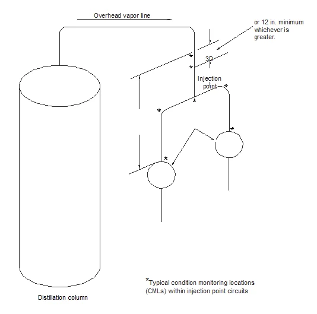
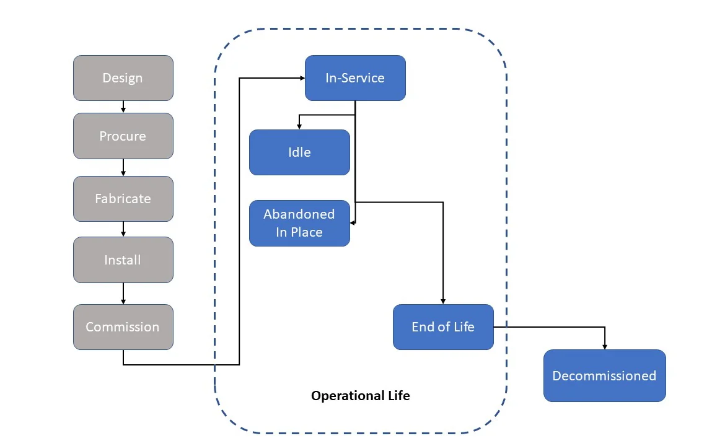

Alteration of Piping Systems
Scope
1.1
General Application
1.1.1
Coverage
API 570 covers inspection, rating, repair, and alteration procedures for metallic piping systems and their
associated pressure-relieving devices (PRDs) that have been placed in-service. This inspection code
applies to all hydrocarbon and chemical process piping covered in 1.2.1 that have been placed in-service
unless specifically designated as optional per 1.2.2. This publication does not cover inspection of specialty
equipment including impulse tubing, sensory tubing or tubing associated with instrumentation, exchanger
tubes, and control valves. However, this piping code could be used by owner-operators in other industries
and other services at their discretion.
Process piping systems that have been decommissioned from service and abandoned in place are no
longer covered by this in-service inspection code. However, abandoned in place piping may still need some
amount of inspection and/or risk mitigation to ensure that it does not become a safety hazard due to
continued deterioration. Process piping systems that are temporarily out of service or idled but have been
mothballed (preserved for potential future use) are still covered by this code.
1.1.2
Intent
The intent of this code is to specify the in-service inspection and condition-monitoring program, as well as
repair guidance that is needed to determine and maintain the ongoing integrity of piping systems. That
program should provide reasonably accurate and timely assessments to determine if any changes in the
condition of piping could possibly compromise continued safe operation. It is also the intent of this code
that owner-operators shall respond to any inspection results that require corrective actions to ensure that
the continued integrity of piping is consistent with appropriate risk analysis. API 570 is intended for use by
organizations that maintain or have access to an authorized inspection agency, a repair organization, and
piping engineers, inspectors, and examiners, all as defined in Section 3.
This code does not cover source inspection of newly fabricated pressure piping. Refer to API 588 for
guidance on the surveillance of supplier vendors fabricating and/or repairing pressure piping that will be
installed on-site. Owner-operators may engage the services of individuals qualified and certified in
accordance with API 588 or this code.
However, inspections after new piping systems arrive on-site may still be needed at owner-operator option
depending upon quality of shop inspection services and owner-operator specifications during fabrication.
1.1.3
Limitations
API 570 shall not be used as a substitute for the original construction requirements governing a piping
system before it is placed in-service; nor shall it be used in conflict with any prevailing regulatory
requirements. If the requirements of this code are more stringent than the regulatory requirements, then
the requirements of this code shall govern.
1.2
Special Applications
1.2.1
Included Fluid Services
Except as provided in 1.2.2, API 570 applies to piping systems for process fluids that are hazardous to
personnel, such as hydrocarbons, and similar flammable or toxic fluid services and processes.
Copyright American Petroleum Institute
Provided by Accuris under license with API
Licensee=Pinnacle AIS/5989531001, User=Ali, Musthaque
Not for Resale, 08/13/2026 13:55:54 UTC
No reproduction or networking permitted without license from Accuris
API 570
The following are processes, services, and product state that are applicable:
e) cryogenic fluids, such as liquid N2, H2, O2, and air;
f)
gaseous He, H2, O2, and N2 at pressures greater than 150 psig.
1.2.2
Optional Piping Systems and Fluid Services
The fluid services and classes of piping systems listed below are optional when applying requirements of
API 570:
fluid services as defined in ASME B31.3;
1.3
Fitness-For-Service and Risk-based Inspection
This inspection code recognizes Fitness-For-Service concepts for evaluating in-service damage of
pressure-containing piping components. API 579-1/ASME FFS-1 provides detailed Fitness-For-Service
assessment procedures for specific types of damage that are referenced in this code.
This inspection code also recognizes risk-based inspection (RBI) concepts for determining inspection
intervals or due dates and strategies. API 580 provides the basic minimum and recommended elements for
developing, implementing, and maintaining an RBI program for fixed equipment, including piping. API 581
provides a set of methodologies for assessing risk (both probability of failure and consequence of failure)
and for developing inspection plans.
Normative References
The following documents are referred to in the text in such a way that some or all their content constitutes
requirements of this document. For dated references, only the edition cited applies. For undated references,
the latest edition of the referenced document, including any addenda, applies.
API Recommended Practice 571, Damage Mechanisms Affecting Fixed Equipment in the Refining Industry
API Recommended Practice 574, Inspection Practices for Piping System Components
API Recommended Practice 576, Inspection of Pressure-relieving Devices
API Recommended Practice 577, Welding Processes, Inspection, and Metallurgy
API Recommended Practice 578, Material Verification Program for New and Existing Assets
Copyright American Petroleum Institute
Provided by Accuris under license with API
Licensee=Pinnacle AIS/5989531001, User=Ali, Musthaque
Not for Resale, 08/13/2026 13:55:54 UTC
No reproduction or networking permitted without license from Accuris
API 570
The following are processes, services, and product state that are applicable:
e) cryogenic fluids, such as liquid N2, H2, O2, and air;
f)
gaseous He, H2, O2, and N2 at pressures greater than 150 psig.
1.2.2
Optional Piping Systems and Fluid Services
The fluid services and classes of piping systems listed below are optional when applying requirements of
API 570:
fluid services as defined in ASME B31.3;
1.3
Fitness-For-Service and Risk-based Inspection
This inspection code recognizes Fitness-For-Service concepts for evaluating in-service damage of
pressure-containing piping components. API 579-1/ASME FFS-1 provides detailed Fitness-For-Service
assessment procedures for specific types of damage that are referenced in this code.
This inspection code also recognizes risk-based inspection (RBI) concepts for determining inspection
intervals or due dates and strategies. API 580 provides the basic minimum and recommended elements for
developing, implementing, and maintaining an RBI program for fixed equipment, including piping. API 581
provides a set of methodologies for assessing risk (both probability of failure and consequence of failure)
and for developing inspection plans.
Normative References
The following documents are referred to in the text in such a way that some or all their content constitutes
requirements of this document. For dated references, only the edition cited applies. For undated references,
the latest edition of the referenced document, including any addenda, applies.
API Recommended Practice 571, Damage Mechanisms Affecting Fixed Equipment in the Refining Industry
API Recommended Practice 574, Inspection Practices for Piping System Components
API Recommended Practice 576, Inspection of Pressure-relieving Devices
API Recommended Practice 577, Welding Processes, Inspection, and Metallurgy
API Recommended Practice 578, Material Verification Program for New and Existing Assets
Copyright American Petroleum Institute
Provided by Accuris under license with API
Licensee=Pinnacle AIS/5989531001, User=Ali, Musthaque
Not for Resale, 08/13/2026 13:55:54 UTC
No reproduction or networking permitted without license from Accuris
API Standard 579-1/ASME FFS-1 1, Fitness-For-Service
API Recommended Practice 580, Elements of a Risk-based Inspection Program
API Recommended Practice 583, Corrosion Under Insulation and Fireproofing
API Recommended Practice 584, Integrity Operating Windows
API Recommended Practice 585, Pressure Equipment Integrity Incident Investigation
API Standard 598, Valve Inspection and Testing
API Recommended Practice 751, Safe Operation of Hydrofluoric Acid Alkylation Units
API Recommended Practice 939-C, Guidelines for Avoiding Sulfidation (Sulfidic) Corrosion Failures in Oil
Refineries
API Recommended Practice 2201, Safe Hot Tapping Practices in the Petroleum and Petrochemical
Industries
ASME B16.34, Valves—Flanged, Threaded, and Welding End
ASME B31.3, Process Piping
ASME Boiler and Pressure Vessel Code, Section V: Nondestructive Examination
ASME Boiler and Pressure Vessel Code, Section IX: Welding, Brazing, and Fusing Qualifications
ASME PCC-1, Guidelines for Pressure Boundary Bolted Flange Joint Assembly
ASME PCC-2, Repair of Pressure Equipment and Piping
ASNT CP-189 2, Standard for Qualification and Certification of Nondestructive Testing Personnel
ASNT SNT-TC-1A, Personnel Qualification and Certification in Nondestructive Testing
NACE SP0472 3, Methods and Controls to Prevent In-Service Environmental Cracking of Carbon Steel
Weldments in Corrosive Petroleum Refining Environments
NACE MR0103, Petroleum, Petrochemical and Natural Gas Industries—Metallic Materials Resistant to
Sulfide Stress Cracking in Corrosive Petroleum Refining Environments
NFPA 704 4, Standard System for the Identification of the Hazards of Materials for Emergency Response
American Society of Mechanical Engineers, Two Park Avenue, New York, New York 10016, www.asme.org.
American Society for Nondestructive Testing, 1201 Dublin Road, Suite #G04, Columbus, Ohio 43215,
www.asnt.org.
NACE International (now Association for Materials Protection and Performance), 15835 Park Ten Place, Houston,
Texas 77084, www.ampp.org.
National Fire Protection Association, 1 Batterymarch Park, Quincy, Massachusetts 02169, www.nfpa.org.
Copyright American Petroleum Institute
Provided by Accuris under license with API
Licensee=Pinnacle AIS/5989531001, User=Ali, Musthaque
Not for Resale, 08/13/2026 13:55:54 UTC
No reproduction or networking permitted without license from Accuris
API 570
Terms, Definitions, Acronyms, and Abbreviations
3.1
Terms and Definitions
For the purposes of this document, the following terms and definitions apply.
NOTE
Definitions for terms delineated with asterisks are maintained by API 570. If another document plans to
reference, see API Bulletin 590 for reference.
3.1.1
abandoned-in-place
Piping system, circuit, or contiguous sections thereof meeting all the following: has been decommissioned
with no intention for future use; has been completely deinventoried/purged of hydrocarbon/chemicals; and
is physically disconnected (i.e. air-gapped) from all energy sources and/or other piping/equipment but
remains in place.
3.1.2
alloy material*
Any metallic material (including welding filler materials) that contains alloying elements, such as chromium,
nickel, or molybdenum, which are intentionally added to enhance mechanical or physical properties and/or
corrosion resistance.
NOTE 1
Alloys may be ferrous or nonferrous based.
NOTE 2
Carbon steels are not considered alloys for purposes of this code.
3.1.3
alteration
A physical change in any component that has design implications that affect the pressure-containing
capability of a piping system beyond the scope described in existing data reports.
NOTE
The following are not considered alterations: comparable or duplicate replacements, replacements in-kind,
and the addition of small-bore attachments that do not require reinforcement or additional support.
3.1.4
applicable construction code
The code, code section, or other recognized and generally accepted engineering standard or practice to
which the piping system was built, or deemed by the owner-operator or the engineer to be most appropriate
for the situation.
3.1.5
authorization
Approval/agreement to perform a specific activity (e.g. repair) prior to the activity being performed.
3.1.6
authorized inspection agency
Defined as any of the following:
— the inspection organization of the jurisdiction in which the piping system is used;
— the inspection organization of an insurance company licensed or registered to write insurance for piping
systems;
— the inspection organization of an owner-operator of piping systems who maintains an inspection
organization for their equipment only and not for piping systems intended for sale or resale;
— an independent inspection organization or individual under contract to and under the direction of an
owner-operator and recognized or otherwise not prohibited by the jurisdiction in which the piping system
is used; the owner-operator’s inspection program shall provide the controls necessary when contract
inspectors are used.
Copyright American Petroleum Institute
Provided by Accuris under license with API
Licensee=Pinnacle AIS/5989531001, User=Ali, Musthaque
Not for Resale, 08/13/2026 13:55:54 UTC
No reproduction or networking permitted without license from Accuris
API 570
Terms, Definitions, Acronyms, and Abbreviations
3.1
Terms and Definitions
For the purposes of this document, the following terms and definitions apply.
NOTE
Definitions for terms delineated with asterisks are maintained by API 570. If another document plans to
reference, see API Bulletin 590 for reference.
3.1.1
abandoned-in-place
Piping system, circuit, or contiguous sections thereof meeting all the following: has been decommissioned
with no intention for future use; has been completely deinventoried/purged of hydrocarbon/chemicals; and
is physically disconnected (i.e. air-gapped) from all energy sources and/or other piping/equipment but
remains in place.
3.1.2
alloy material*
Any metallic material (including welding filler materials) that contains alloying elements, such as chromium,
nickel, or molybdenum, which are intentionally added to enhance mechanical or physical properties and/or
corrosion resistance.
NOTE 1
Alloys may be ferrous or nonferrous based.
NOTE 2
Carbon steels are not considered alloys for purposes of this code.
3.1.3
alteration
A physical change in any component that has design implications that affect the pressure-containing
capability of a piping system beyond the scope described in existing data reports.
NOTE
The following are not considered alterations: comparable or duplicate replacements, replacements in-kind,
and the addition of small-bore attachments that do not require reinforcement or additional support.
3.1.4
applicable construction code
The code, code section, or other recognized and generally accepted engineering standard or practice to
which the piping system was built, or deemed by the owner-operator or the engineer to be most appropriate
for the situation.
3.1.5
authorization
Approval/agreement to perform a specific activity (e.g. repair) prior to the activity being performed.
3.1.6
authorized inspection agency
Defined as any of the following:
— the inspection organization of the jurisdiction in which the piping system is used;
— the inspection organization of an insurance company licensed or registered to write insurance for piping
systems;
— the inspection organization of an owner-operator of piping systems who maintains an inspection
organization for their equipment only and not for piping systems intended for sale or resale;
— an independent inspection organization or individual under contract to and under the direction of an
owner-operator and recognized or otherwise not prohibited by the jurisdiction in which the piping system
is used; the owner-operator’s inspection program shall provide the controls necessary when contract
inspectors are used.
Copyright American Petroleum Institute
Provided by Accuris under license with API
Licensee=Pinnacle AIS/5989531001, User=Ali, Musthaque
Not for Resale, 08/13/2026 13:55:54 UTC
No reproduction or networking permitted without license from Accuris
3.1.7
authorized piping inspector*
An employee of an owner-operator organization or authorized inspection agency (see 3.1.6) who is qualified
and certified by examination under the provisions of Section 4 and Annex A and can perform the functions
specified in API 570 where contracted or directed to do so.
3.1.8
auxiliary piping*
Instrument and machinery piping, typically small-bore secondary process piping that can be isolated from
primary piping systems but is normally not isolated.
NOTE
Examples include flush lines, seal oil lines, analyzer lines, balance lines, buffer gas lines, drains, and vents.
3.1.9
condition monitoring location
CML
A designated area on piping systems where periodic examinations are conducted to directly assess and
monitor the condition of the piping system using a variety of examination methods and techniques based
on damage mechanism susceptibility.
NOTE 1
CMLs may contain one or more examination points and can be a single small area on a piping system [e.g.
a 2 in. (50 mm) diameter spot] or plane through a section of a pipe where examination points exist in all four quadrants
of the plane).
NOTE 2
CMLs now include, but are not limited to, what was previously called TML.
3.1.10
construction code
The code or standard to which the piping system was originally built (e.g. ASME B31.3).
3.1.11
contact point*
The locations at which a pipe or component rests on or against a support or other object that may increase
its susceptibility to external corrosion, fretting, wear, or deformation especially because of moisture and/or
solids collecting at the interface of the pipe and supporting member.
3.1.12
corrosion allowance
Additional material thickness available to allow for metal loss during the service life of the pipe component.
NOTE
Corrosion allowance is not used in design strength calculations.
3.1.13
corrosion rate
The rate of metal loss due to erosion, erosion/corrosion, and/or the chemical reaction(s) with the
environment, either internal and/or external.
3.1.14
corrosion specialist
A person acceptable to the owner-operator who is knowledgeable and experienced in the specific process
chemistries, damage mechanisms, materials selection, corrosion mitigation methods, corrosion monitoring
techniques, and their impact on piping systems.
3.1.15
corrosion under fireproofing
CUF
Corrosion of piping, pressure vessels, and structural components resulting from water trapped under
fireproofing.
Copyright American Petroleum Institute
Provided by Accuris under license with API
Licensee=Pinnacle AIS/5989531001, User=Ali, Musthaque
Not for Resale, 08/13/2026 13:55:54 UTC
No reproduction or networking permitted without license from Accuris
API 570
3.1.16
corrosion under insulation
CUI
External corrosion of piping, pressure vessels, and structural components resulting from water trapped
under insulation.
NOTE
External chloride stress corrosion cracking (ECSCC) of austenitic and duplex stainless steel under
insulation is also classified as CUI damage.
3.1.17
critical check valves*
Check valves that need to operate reliably to avoid the potential for hazardous events or substantial
consequences should reverse flow occur.
3.1.18
cyclic service
Refers to service conditions that may result in cyclic loading and produce fatigue damage or failure (e.g.
cyclic loading from pressure, thermal, and/or mechanical loads).
NOTE 1
Other cyclic loads associated with vibration may arise from sources such as impact, turbulent flow vortices,
resonance in compressors, and wind, or any combination thereof.
NOTE 2
API 579-1/ASME FFS-1—Section I.A.15 has a definition of cyclic service. A screening procedure to
determine if a component is in cyclic service is provided in Part 14. A definition of “severe cyclic conditions” is in ASME
B31.3—Section 300.2, Definitions.
3.1.19
damage mechanism
Any type of deterioration encountered in the refining and chemical process industry that can result in
flaws/defects that can affect the integrity of equipment.
EXAMPLE
Corrosion, cracking, erosion, dents, and other mechanical, physical, or chemical impacts (see API 571
for a comprehensive list and description of damage mechanisms).
3.1.20
damage rate*
The rate of deterioration other than corrosion (i.e. rate of cracking, rate of HTHA, and creep rate).
3.1.21*
deadleg
Components of a piping system that normally have little or no significant flow.
3.1.22
decommissioned
Termination of pressure piping from its service; pressure piping at this stage of its life cycle is permanently
removed from service and either removed from the process unit or abandoned-in-place.
3.1.23
defect
A discontinuity or discontinuities that by nature or accumulated effect render a part or product unable to
meet minimum applicable acceptance standards or specifications (e.g. total crack length); the term
designates rejectability.
3.1.24
deferral
An approved and documented postponement of an inspection, test, or examination (see 7.13 and 7.14).
3.1.25
design pressure*
The pressure at the most severe condition of coincident internal or external pressure and temperature
Copyright American Petroleum Institute
Provided by Accuris under license with API
Licensee=Pinnacle AIS/5989531001, User=Ali, Musthaque
Not for Resale, 08/13/2026 13:55:54 UTC
No reproduction or networking permitted without license from Accuris
(minimum or maximum) expected during service.
NOTE
It is the same as the design pressure defined in ASME B31.3 and other code sections and is subject to the
same rules relating to allowances for variations of pressure or temperature or both.
3.1.26
design temperature
The temperature used for the design of the piping system per the applicable construction code.
NOTE
It is the same as the design temperature defined in ASME B31.3 and other code sections and is subject to the
same rules relating to allowances for variations of pressure or temperature or both. Different components in the same
piping system or circuit can have different design temperatures. In establishing this temperature, consideration should
be given to process fluid temperatures, ambient temperatures, heating/cooling media temperatures, and insulation.
3.1.27
due date
The date established by the owner-operator and in accordance with this code, whereby an inspection, test,
examination, or inspection recommendation falls due or is to be completed.
NOTE
The date may be established by rule-based inspection methodologies (e.g. fixed intervals, retirement half-life
interval, retirement date), risk-based methodologies (e.g. RBI target date), Fitness-For-Service analysis results, owner-
operator inspection agency practices/procedures/guidelines, or any combination thereof.
3.1.28
examination point
recording point
measurement point
test point
A more specific location within a CML. CMLs may contain multiple examination points; for example, a piping
component may be a CML and have multiple examination points (e.g. an examination point in all four
quadrants of the CML of the piping component).
NOTE
The term “test point” is no longer in use as “test” in this code refers to mechanical or physical tests, e.g. tensile
tests or pressure tests.
3.1.29
examinations
A process by which an examiner or inspector investigates a component of the piping system using
nondestructive examination (NDE) in accordance with approved NDE procedures (e.g. inspection of a CML
and quality control of repair areas).
NOTE
Examinations would be typically those actions conducted by NDE personnel, welding, or coating inspectors
but may also be conducted by authorized piping inspectors.
3.1.30
examiner
A person who assists the inspector by performing specific NDE on piping system components and
evaluates to the applicable acceptance criteria but does not evaluate the results of those examinations in
accordance with API 570 unless specifically trained and authorized to do so by the owner-operator.
3.1.31
external inspection
A visual inspection performed from the outside of a piping system to find conditions that could impact the
piping systems’ ability to maintain pressure integrity or conditions that compromise the integrity of the
supporting structures (e.g. stanchions, pipe supports, shoes, and hangers). The external inspection may be
done while the piping is out of service and can be conducted at the same time as on on-stream inspection.
NOTE
External inspections are also intended to find conditions that compromise the integrity of the coating and
insulation covering and attachments (e.g. instrument and small branch connections).
Copyright American Petroleum Institute
Provided by Accuris under license with API
Licensee=Pinnacle AIS/5989531001, User=Ali, Musthaque
Not for Resale, 08/13/2026 13:55:54 UTC
No reproduction or networking permitted without license from Accuris
API 570
3.1.32
Fitness-For-Service evaluation
An engineering methodology whereby flaws and other deterioration/damage contained within piping
systems are assessed to determine the structural integrity of the piping for continued service (see API 579-1/
ASME FFS-1).
3.1.33
fitting*
A piping component usually associated with a branch connection, a change in direction, or change in piping
diameter.
NOTE
Flanges are not considered fittings.
3.1.34
flammable materials*
As used in this code, includes all fluids that will support combustion.
NOTE 1
Refer to NFPA 704 for guidance on classifying fluids in 6.3.4.
NOTE 2
Some regulatory documents include separate definitions of flammables and combustibles based on their
flash point. In this document, flammable is used to describe both, and the flash point, boiling point, autoignition
temperature, or other properties are used in addition to better describe the hazard.
3.1.35
flash point*
The lowest temperature at which a flammable product emits enough vapor to form an ignitable mixture in
air.
NOTE 1
For example, gasoline’s flash point is about −45 °F (−43 °C), diesel’s flash point varies from about 125 °F
to 200 °F (52 °C to 93 °C).
NOTE 2
An ignition source is required to cause ignition above the flash point, but below the autoignition temperature.
3.1.36
flaw*
An imperfection in a piping system detected by NDE that may or may not be a defect depending upon the
applied acceptance criteria.
3.1.37
general corrosion
Corrosion distributed approximately uniform over the surface of the metal.
3.1.38
hold point
A point in the repair or alteration process beyond which work may not proceed until the required inspection
or NDE has been performed.
3.1.39
idle
Piping system, circuit, or contiguous sections that are not currently operating but remain connected to
pressure vessels, electrical, or instrumentation (may be blinded or blocked in).
3.1.40
imperfection
Flaws or other discontinuities noted during inspection or examination that may or may not exceed the
applicable acceptance criteria.
Copyright American Petroleum Institute
Provided by Accuris under license with API
Licensee=Pinnacle AIS/5989531001, User=Ali, Musthaque
Not for Resale, 08/13/2026 13:55:54 UTC
No reproduction or networking permitted without license from Accuris
3.1.41
indication
A response or evidence resulting from the application of NDE that may be nonrelevant, flawed, or defective
upon further analysis.
3.1.42
industry-qualified ultrasonic angle beam examiner
A person who possesses an ultrasonic angle beam qualification from API (e.g. API QUTE/QUSE Detection
and Sizing Tests) or an equivalent qualification approved by the owner-operator.
NOTE
Rules for equivalency are defined in API 587.
3.1.43
injection point*
Injection points are locations where water, steam, chemicals, or process additives are introduced into a
process stream at relatively low flow/volume rates as compared to the flow/volume rate of the parent stream.
NOTE 1
Corrosion inhibitors, neutralizers, process antifoulants, de-salter demulsifiers, oxygen scavengers, caustic,
and water washes are most often recognized as requiring special attention in designing the point of injection. Process
additives, chemicals, and water are injected into process streams to achieve specific process objectives.
NOTE 2
Injection points do not include locations where two process streams join (see 3.1.64, “mixing points”).
EXAMPLE
Chlorinating agents in reformers, water injection in overhead systems, polysulfide injection in catalytic
cracking wet gas, antifoam injections, inhibitors, and neutralizers.
3.1.44
in-service
The life-cycle stage of a piping system that begins after initial installation (where typically initial
commissioning or placing into active service follows) and ends at decommissioning.
NOTE 1
Piping systems that are idle in an operating site and piping systems that are not currently in operation
because of a process outage are still considered in-service piping systems.
NOTE 2
Does not include piping systems that are still under construction or in transport to the site prior to being
placed in service or piping systems that have been retired.
NOTE 3
Installed spare piping is also considered in service, whereas spare piping that is not installed is not
considered in service.
3.1.45
in-service inspection
All inspection activities associated with in-service piping systems (after installation, but before it is
decommissioned).
3.1.46
inspection
The external, internal, or on-stream evaluation (or any combination of the three) of the condition of a piping
system conducted by the authorized inspector or the designee in accordance with this code.
3.1.47
inspection code
Shortened title for this code (API 570).
3.1.48
inspection plan
A strategy defining how and when a piece of pressure equipment and associated components will be
inspected, examined, repaired, and/or maintained.
3.1.49
inspector
A shortened title for an authorized piping inspector qualified and certified in accordance with this code.
Copyright American Petroleum Institute
Provided by Accuris under license with API
Licensee=Pinnacle AIS/5989531001, User=Ali, Musthaque
Not for Resale, 08/13/2026 13:55:54 UTC
No reproduction or networking permitted without license from Accuris
API 570
3.1.50
integrity operating window
IOW
Established limits for process variables (parameters) that can affect the integrity of the equipment if the
process operation deviates from the established limits for a predetermined length of time (includes critical,
standard, and informational IOWs).
3.1.51
intermittent service*
The condition of a piping system whereby it is not in continuous operating service (i.e. it operates at regular
or irregular intervals rather than continuously).
NOTE
Occasional turnarounds or other infrequent maintenance outages in an otherwise continuous process service
does not constitute intermittent service.
3.1.52
internal inspection
An inspection performed from the inside of a piping system using visual and/or NDE techniques.
3.1.53
jurisdiction
A legally constituted governmental administration that may adopt rules relating to process piping systems.
3.1.54
level bridle*
The piping assembly associated with a level gauge attached to a vessel.
3.1.55
lining*
A nonmetallic or metallic material, installed on the interior of pipe, whose properties are better suited to
resist damage from the process than the substrate material.
3.1.56
localized corrosion
Corrosion that is typically confined to a limited or isolated area(s) of the metal surface of a piping system.
3.1.57
lockout/tagout*
LOTO
A safety procedure used to ensure that piping is properly isolated and cannot be energized or put back in-
service prior to the completion of inspection, maintenance, or servicing work.
3.1.58
major repair
Any work not considered an alteration that removes and replaces a major part of the pressure boundary. If
any of the restorative work results in a change to the design temperature, minimum allowable temperature
(MAT), or maximum allowable working pressure (MAWP), the work shall be considered an alteration and
the requirements for rerating shall be satisfied.
EXAMPLE
Removal and replacement of large sections of piping systems.
3.1.59
management of change
MOC
A documented management system for review and approval of changes (both physical and process) to
Copyright American Petroleum Institute
Provided by Accuris under license with API
Licensee=Pinnacle AIS/5989531001, User=Ali, Musthaque
Not for Resale, 08/13/2026 13:55:54 UTC
No reproduction or networking permitted without license from Accuris
piping systems prior to implementation of the change.
NOTE
The MOC process includes involvement of inspection personnel that may need to alter inspection plans
because of the change.
3.1.60
material verification program*
A documented quality assurance procedure used to assess alloy materials (including weldments and
attachments where specified) to verify conformance with the selected or specified alloy material designated
by the owner-operator.
NOTE
This program may include a description of methods for alloy material testing, physical component marking,
and program recordkeeping (see API 578).
3.1.61
maximum allowable working pressure
MAWP
The maximum gauge pressure permitted for the piping system in its operating position for a designated
temperature. This pressure is based on calculations using the minimum (or average pitted) thickness for all
critical piping elements (exclusive of thickness designated for corrosion) and adjusted for applicable static
head pressure ad nonpressure loads (e.g. wind and seismic). The MAWP may refer to either the original
design or a rerated MAWP obtained through a Fitness-For-Service assessment.
NOTE
MAWP is the same as the design pressure, as defined in ASME B31.3 and other code sections and is subject
to the same rules relating to allowances for variations of pressure or temperature or both.
3.1.62
minimum alert thickness*
flag thickness
A thickness greater than the required thickness that provides for early warning from which the future service
life of the piping is managed through further inspection and remaining life assessment.
3.1.63
minimum design metal temperature/minimum allowable temperature
MDMT/MAT
The lowest permissible metal temperature for a given material at a specified thickness based on its
resistance to brittle fracture.
NOTE
In the case of MAT, it may be a single temperature, or an envelope of allowable operating temperatures as a
function of pressure. It is generally the minimum temperature at which a significant load can be applied to a piping
system as defined in the applicable construction code. It might be also obtained through a Fitness-For-Service
evaluation.
3.1.64
minimum required thickness*
required thickness
tmin
The minimum thickness without corrosion allowance for each component of a piping system based on the
appropriate design code calculations and code allowable stress that consider internal and external
pressure, temperature, mechanical and structural loadings, including the effects of static head.
NOTE
Minimum required thicknesses may also be reassessed using Fitness-For-Service analysis in accordance with
API 579-1/ASME FFS-1.
Copyright American Petroleum Institute
Provided by Accuris under license with API
Licensee=Pinnacle AIS/5989531001, User=Ali, Musthaque
Not for Resale, 08/13/2026 13:55:54 UTC
No reproduction or networking permitted without license from Accuris
API 570
3.1.65
mixing point*
Mixing points are locations in a process piping system where two or more streams meet.
NOTE
The difference in streams may be composition, temperature, or any other parameter that may cause deterioration
and may require additional design considerations, operating limits, inspection, and/or process monitoring.
3.1.66
non-conformance*
An aspect of quality of an item that is not in accordance with the requirements of this code and/or any other
specified codes, standards, or other requirements.
NOTE
A non-conformance does not necessarily mean that the item is defective or that the item is not suitable for
continued service.
3.1.67
non-pressure boundary
Components and attachments of, or the portion of piping that does not contain the process pressure.
EXAMPLE
Clips, shoes, repads, supports, wear plates, nonstiffening insulation support rings, etc.
3.1.68
off-site piping*
Piping systems not included within the plot boundary limits of a process unit, such as a hydrocracker, an
ethylene cracker, or a crude unit.
EXAMPLE
Tank farm piping and interconnecting piperack piping outside the limits of the process unit.
3.1.69
on-site piping*
Piping systems included within the plot limits of process units, such as a hydrocracker, an ethylene cracker,
or a crude unit.
3.1.70
on-stream inspection
An inspection performed from the outside of piping systems while they are in-service using NDE procedures
to establish the suitability of the pressure boundary for continued operation (see 5.5.3).
3.1.71
overdue inspection
Inspections for in-service piping that remain in operation and have not been performed by the due date
documented in the inspection plan and have not been deferred by a documented deferral process (see 7.13).
3.1.72
overwater piping*
Piping located where leakage would result in discharge into streams, rivers, bays, etc., resulting in a
potential environmental incident.
3.1.73
owner-operator
An owner or operator of piping systems who exercises control over the operation, engineering, inspection,
repair, alteration, maintenance, pressure testing, and rerating of those piping systems.
3.1.74
pipe*
A pressure-tight cylinder used to convey, distribute, mix, separate, discharge, meter, control, or snub fluid flows,
Copyright American Petroleum Institute
Provided by Accuris under license with API
Licensee=Pinnacle AIS/5989531001, User=Ali, Musthaque
Not for Resale, 08/13/2026 13:55:54 UTC
No reproduction or networking permitted without license from Accuris
or to transmit a fluid pressure and that is ordinarily designated “pipe” in applicable material specifications.
NOTE 1
Materials designated as “tube” or “tubing” in the specifications are treated as pipe in this code when
intended for pressure service external to fired heaters.
NOTE 2
See API 530 for piping internal to fired heaters.
3.1.75
piperack piping*
Process piping supported by consecutive stanchions or sleepers (including straddle racks and extensions).
3.1.76
pipe spool*
A section of piping with a flange or other connecting fitting, such as a union, on both ends that allows the
removal of the section from the system.
3.1.77
piping circuit*
A subsection of piping systems that includes piping and components that are exposed to a process environment
of similar corrosivity and expected damage mechanisms and is of similar design conditions and construction
material whereby the expected type and rate of damage can reasonably be expected to be the same.
NOTE 1
Complex process units or piping systems are divided into piping circuits to manage the necessary
inspections, data analysis, and recordkeeping.
NOTE 2
When establishing the boundary of a particular piping circuit, it may be sized to provide a practical package
for recordkeeping and performing field inspection.
3.1.78
piping engineer*
One or more persons or organizations acceptable to the owner-operator who are knowledgeable and
experienced in the engineering disciplines associated with evaluating mechanical and material
characteristics affecting the integrity and reliability of piping components and systems.
NOTE
The piping engineer, by consulting with appropriate specialists, should be regarded as a composite of all
entities necessary to properly address piping design requirements.
3.1.79
piping system*
An assembly of interconnected pipes that typically are subject to the same (or nearly the same) process
fluid composition or operating conditions, or both.
NOTE
Piping systems also include pipe-supporting elements (e.g. springs, hangers, guides, etc.) but do not include
support structures, such as structural frames, vertical and horizontal structural members, and foundations.
3.1.80
pitting*
Localized corrosion of a metal surface in a small area that takes the form of cavities called pits, which can
be highly localized as a single pit or widespread within a specific area on a metal surface.
NOTE
Pitting can be highly localized (including a single pit) or widespread on a metal surface.
3.1.81
positive material identification
PMI
A physical evaluation or test of a material performed to confirm that the material, which has been or will be
placed into service, is consistent with what is specified by the owner-operator.
NOTE
These evaluations or tests can provide qualitative or quantitative information that is sufficient to verify the
nominal alloy composition (see API 578).
Copyright American Petroleum Institute
Provided by Accuris under license with API
Licensee=Pinnacle AIS/5989531001, User=Ali, Musthaque
Not for Resale, 08/13/2026 13:55:54 UTC
No reproduction or networking permitted without license from Accuris
API 570
3.1.82
postweld heat treatment
PWHT
Treatment that consists of heating an entire weldment or section of fabricated piping to a specified elevated
temperature after completion of welding in order to relieve the effects of welding heat, such as to reduce
residual stresses, reduce hardness, stabilize chemistry, and/or slightly modify properties.
NOTE
See ASME B31.3, paragraph 331.
3.1.83
pressure boundary
The portion of the piping that contains the pressure-retaining piping elements joined or assembled into
pressure tight fluid-containing piping systems.
NOTE 1
Pressure boundary components include pipe, tubing, fittings, flanges, gaskets, bolting, valves, and other
devices, such as expansion joints and flexible joints.
NOTE 2
Also see non-pressure boundary definition.
3.1.84
pressure design thickness*
Minimum allowed pipe wall thickness needed to hold the design pressure at the design temperature.
NOTE 1
Pressure design thickness is determined using the rating code formula, including needed reinforcement
thickness.
NOTE 2
Pressure design thickness does not include thickness for structural loads, corrosion allowance, or mill tolerances
and therefore should not be used as the sole determinant of structural integrity for typical process piping (see 7.6).
3.1.85
primary process piping*
Process piping in normal, active service that cannot be valved off, or, if it were valved off, would significantly
affect unit operability.
NOTE
Primary process piping typically does not include small-bore or auxiliary process piping (see also 3.1.96,
“secondary process piping”).
3.1.86
procedure
A document that specifies or describes how an activity is to be performed. A procedure may include
methods to be employed, equipment or materials to be used, qualifications of personnel involved, and
sequence of work.
3.1.87
process piping*
Hydrocarbon or chemical piping located at or associated with a refinery or manufacturing facility.
NOTE — Process piping includes piperack, tank farm, and process unit piping but excludes utility piping (e.g. steam,
water, air, nitrogen, etc.).
3.1.88
quality assurance
All planned, systematic, and preventative actions specified to determine if materials, equipment, or services
will meet specified requirements so that the piping will perform satisfactorily in-service.
NOTE 1
Quality assurance plans will specify the necessary quality control activities and examinations.
NOTE 2
The contents of a quality assurance inspection management system for piping systems are outlined in 4.3.1.
Copyright American Petroleum Institute
Provided by Accuris under license with API
Licensee=Pinnacle AIS/5989531001, User=Ali, Musthaque
Not for Resale, 08/13/2026 13:55:54 UTC
No reproduction or networking permitted without license from Accuris
3.1.89
quality control
Those physical activities that are conducted to check conformance with specifications in accordance with
the quality assurance plan.
3.1.90
rating*
The work process of making calculations to establish pressures and temperatures appropriate for a piping
system, including design pressure/temperature, MAWP, structural minimums, required thicknesses, etc.
3.1.91
renewal*
Activity that discards an existing component, fitting, or portion of a piping circuit and replaces it with new or
existing spare materials of the same or better qualities as the original piping components.
3.1.92
repair
The work necessary to restore a piping system to a condition suitable for safe operation at the design
conditions.
NOTE 1
Any welding, cutting, or grinding operation on a pressure-containing piping component not specifically
considered an alteration is considered a repair.
NOTE 2
Repairs can be temporary or permanent (see Section 8).
3.1.93
repair organization
An organization that is qualified to make the repair by meeting the criteria of 4.3.2 of API 570.
3.1.94
rerating
A change in either the design temperature rating, design pressure rating, or the MAWP of a piping system.
NOTE
A rerating may consist of an increase, a decrease, or a combination of both. Derating below original design
conditions is a means to provide increased corrosion allowance.
3.1.95
risk-based inspection
RBI
A risk assessment and management process that considers both the probability of failure and the
consequence of failure due to material deterioration. See 5.2.
3.1.96
scanning nondestructive examination
Examination methods designed to find the thinnest spot or all flaws in a specified area of pressure piping,
such as profile radiography (RT) of nozzles, scanning ultrasonic testing (UT) techniques, and/or other
suitable NDE techniques that will reveal the scope and extent of localized corrosion or other deterioration.
3.1.97
secondary process piping*
Process piping located downstream of a block valve that can be valved off without significantly affecting the
process unit operability.
NOTE
Often, secondary process piping is small-bore piping (SBP).
Copyright American Petroleum Institute
Provided by Accuris under license with API
Licensee=Pinnacle AIS/5989531001, User=Ali, Musthaque
Not for Resale, 08/13/2026 13:55:54 UTC
No reproduction or networking permitted without license from Accuris
API 570
3.1.98
small-bore piping*
SBP
Pipe or pipe components that are less than or equal to nominal pipe size (NPS) 2.
3.1.99
soil-to-air interface*
SAI
An area in which external corrosion may occur or be accelerated on partially buried pipe or buried pipe near
where it egresses from the soil.
NOTE
The zone of the corrosion will vary depending on factors such as moisture, oxygen content of the soil, and
operating temperature. The zone generally is at least 12 in. (305 mm) below to 6 in. (150 mm) above the soil surface.
Pipe running parallel with the soil surface that contacts the soil is included.
3.1.100
structural minimum thickness*
Minimum required thickness without corrosion allowance based on the mechanical loads other than
pressure that result in longitudinal stress (see 7.6).
NOTE
The thickness is either determined from a standard chart or engineering calculations. It does not include
thickness for corrosion allowance or mill tolerances.
3.1.101
tank farm piping*
Process piping inside tank farm dikes or directly associated with a tank farm.
3.1.102
temporary repair
Repairs made to piping systems to restore sufficient integrity to continue safe operation until permanent
repairs are conducted.
NOTE
Injection fittings on valves to seal fugitive [leak detection and repair (LDAR)] emissions from valve stem seal
are not considered to be “temporary repairs” as described in 8.1.4.1 and 8.1.5 in this code.
3.1.103
testing
Within this document, testing generally refers to either pressure testing, whether performed hydrostatically,
pneumatically, or a combination hydrostatic/pneumatic, or mechanical testing to determine data such as
material hardness, strength, and notch toughness.
NOTE
Testing does not refer to NDE using techniques such as liquid penetrant (PT), magnetic particle (MT), etc.
3.1.104
utility piping*
Non-process piping associated with a process unit (e.g. steam, air, water, nitrogen).
For the purposes of this document, the following acronyms and abbreviations apply.
BPVC
Boiler and Pressure Vessel Code
CCV
critical check valve
CML
condition monitoring location
Copyright American Petroleum Institute
Provided by Accuris under license with API
Licensee=Pinnacle AIS/5989531001, User=Ali, Musthaque
Not for Resale, 08/13/2026 13:55:54 UTC
No reproduction or networking permitted without license from Accuris
CPD
continuing professional development
CUF
corrosion under fireproofing
CUI
corrosion under insulation
EMAT
electromagnetic acoustic transducer
ECSCC
external chloride stress corrosion cracking
HF
hydrofluoric
NOTE
Generally referred to as HF acid.
ID
inside diameter
IDMS
Inspection Data Management System
IOW
integrity operating window
ISO
inspection isometric drawing
LDAR
leak detection and repair (of fugitive emissions)
LT
long term
MAT
minimum allowable temperature
MAWP
maximum allowable working pressure
MDMT
minimum design metal temperature
MOC
management of change
MT
magnetic particle examination technique
NDE
nondestructive examination
NPS
nominal pipe size
NOTE
The term is typically followed, when appropriate, by the specific size designation number without
an inch unit.
EXAMPLE
NPS 24 refers to a nominal pipe size of 24 in.
OD
outside diameter
PEC
pulsed eddy current
PMI
positive material identification
PQR
procedure qualification record
PRD
pressure-relieving device
PT
liquid penetrant examination technique
PWHT
postweld heat treatment
RBI
risk-based inspection
RT
radiographic examination (method) or radiography
Copyright American Petroleum Institute
Provided by Accuris under license with API
Licensee=Pinnacle AIS/5989531001, User=Ali, Musthaque
Not for Resale, 08/13/2026 13:55:54 UTC
No reproduction or networking permitted without license from Accuris
API 570
SAI
soil-to-air interface
SBP
small-bore piping
ST
short term
SMYS
specified minimum yield strength
TML
thickness monitoring location
UT
ultrasonic examination technique
WPS
welding procedure specification
Owner-Operator Inspection Organization
4.1
General
An owner-operator of piping systems shall have a defined program for piping system inspections, inspection
frequencies, and maintenance and is responsible for the function of an authorized inspection agency in
accordance with the provisions of API 570. The owner-operator shall be responsible for the activities
relating to the rating, repair, and alteration of its piping systems. See definition of “authorized inspection
agency” in 3.1.6.
4.2
Authorized Piping Inspector Qualification and Certification
Authorized piping inspectors shall have education and experience in accordance with Annex A of this
inspection code. Authorized piping inspectors shall be certified in accordance with the provisions of Annex A.
Whenever the term “inspector” is used in this code, it refers to an “authorized piping inspector.”
4.3
Responsibilities
4.3.1
Owner-Operator Organization
4.3.1.1
Systems and Procedures
An owner-operator organization is responsible for developing, documenting, implementing, executing, and
assessing piping inspection systems and inspection procedures that will meet the requirements of this
inspection code. These systems and procedures will be contained in a quality assurance inspection/repair
management system and shall include the following:
e) developing and documenting risk-based assessments;
f)
developing and documenting the appropriate inspection intervals;
g) corrective action for inspection and test results;
h) internal auditing for compliance with the quality assurance inspection manual;
Copyright American Petroleum Institute
Provided by Accuris under license with API
Licensee=Pinnacle AIS/5989531001, User=Ali, Musthaque
Not for Resale, 08/13/2026 13:55:54 UTC
No reproduction or networking permitted without license from Accuris
API 570
SAI
soil-to-air interface
SBP
small-bore piping
ST
short term
SMYS
specified minimum yield strength
TML
thickness monitoring location
UT
ultrasonic examination technique
WPS
welding procedure specification
Owner-Operator Inspection Organization
4.1
General
An owner-operator of piping systems shall have a defined program for piping system inspections, inspection
frequencies, and maintenance and is responsible for the function of an authorized inspection agency in
accordance with the provisions of API 570. The owner-operator shall be responsible for the activities
relating to the rating, repair, and alteration of its piping systems. See definition of “authorized inspection
agency” in 3.1.6.
4.2
Authorized Piping Inspector Qualification and Certification
Authorized piping inspectors shall have education and experience in accordance with Annex A of this
inspection code. Authorized piping inspectors shall be certified in accordance with the provisions of Annex A.
Whenever the term “inspector” is used in this code, it refers to an “authorized piping inspector.”
4.3
Responsibilities
4.3.1
Owner-Operator Organization
4.3.1.1
Systems and Procedures
An owner-operator organization is responsible for developing, documenting, implementing, executing, and
assessing piping inspection systems and inspection procedures that will meet the requirements of this
inspection code. These systems and procedures will be contained in a quality assurance inspection/repair
management system and shall include the following:
e) developing and documenting risk-based assessments;
f)
developing and documenting the appropriate inspection intervals;
g) corrective action for inspection and test results;
h) internal auditing for compliance with the quality assurance inspection manual;
Copyright American Petroleum Institute
Provided by Accuris under license with API
Licensee=Pinnacle AIS/5989531001, User=Ali, Musthaque
Not for Resale, 08/13/2026 13:55:54 UTC
No reproduction or networking permitted without license from Accuris
i)
review and approval of drawings, design calculations, and specifications for repairs, alterations,
reratings, and Fitness-For-Service assessments;
j)
ensuring that all jurisdictional requirements for piping inspection, repairs, alterations, and rerating are
continuously met;
k) reporting to the authorized piping inspector any process changes that could affect piping integrity;
l)
training requirements for inspection personnel regarding inspection tools, techniques, and technical
knowledge base;
m) controls necessary so that only qualified welders and procedures are used for all repairs and alterations;
n) controls necessary so that only qualified NDE personnel and procedures are utilized;
o) controls necessary so that only materials conforming to the applicable construction code are utilized
for repairs and alterations;
p) controls necessary so that all inspection measurement and test equipment are properly maintained and
calibrated;
q) controls necessary so that the work of contract inspection or repair organizations meet the same
inspection requirements as the owner-operator organization and this inspection code;
r)
internal auditing requirements for the quality control system for PRDs;
s) requirements and work process to increase the confidence that inspectors have an annual vision test
and are capable of reading standard J-1 letters on standard Jaeger test type charts for near vision;
t)
controls necessary to prevent external covering or insulation of cold wall piping or headers that might
cause overheating and rupture;
u) controls necessary to ensure that temporary facilities are managed and removed at the appropriate
times.
4.3.1.2
Inspection Organization Audits
Each owner-operator organization shall be audited periodically to determine if they are meeting the
requirements of an authorized inspection agency as defined in this inspection code. The audit team should
consist of people experienced and competent in the application of this code. The audit team should typically
be from another owner-operator plant site, company central office, or from a third-party organization
experienced and competent in refining and/or petrochemical process plant inspection programs or a
combination of third-party and other owner-operator sites.
The following key elements of an inspection program should be assessed by the audit team:
e) general types of inspections and surveillance are being adequately applied;
f)
inspection data analysis, evaluation, and recording are adequate;
g) repairs, reratings, and alterations comply with this code.
Copyright American Petroleum Institute
Provided by Accuris under license with API
Licensee=Pinnacle AIS/5989531001, User=Ali, Musthaque
Not for Resale, 08/13/2026 13:55:54 UTC
No reproduction or networking permitted without license from Accuris
API 570
The owner-operator shall receive a report of the audit team’s scope and findings. After review of the report,
non-conformances should be prioritized, and corrective actions implemented. Other suggestions for
improvement are at the discretion of the owner-operator. Each organization should establish a system for
tracking and completion of audit findings. This information should also be reviewed during subsequent
audits.
4.3.1.3
MOC
The owner-operator is also responsible for implementing an effective MOC process that will review and
control changes to the process and assets (e.g. piping and piping components). An effective MOC process
is vital to the success of any piping integrity management program so the inspection group can:
changes;
pressure piping and update the inspection plan and records to account for those changes.
The MOC process shall include the appropriate materials/corrosion experience and expertise to effectively
forecast what changes might affect piping integrity. The inspection group shall be involved in the approval
process for changes that may affect piping integrity. Changes to pipe components, supports, and the
process shall be included in the MOC process to ensure its effectiveness.
4.3.1.4
IOWs
The owner-operator should implement and maintain an effective program for creating, establishing, and
monitoring IOWs. IOWs are implemented to avoid process parameter exceedances that may have an
unanticipated impact on pressure equipment integrity. Future inspection plans and intervals have
historically been based on prior measured corrosion rates resulting from past operating conditions. Without
an effective IOW and process control program, there often is no warning of changing operating conditions
that could affect the integrity of equipment or validation of the current inspection plan. Deviations from and
changes of trends within established IOW limits should be brought to the attention of inspection/engineering
personnel so they may modify or create new inspection plans depending upon the seriousness of the
exceedance.
IOWs should be established for process parameters (both physical and chemical) that could impact
equipment integrity if not properly controlled. Examples of the process parameters include temperatures,
pressures, fluid velocities, pH, flow rates, chemical or water injection rates, levels of corrosive constituents,
chemical composition, etc. IOWs for key process parameters may have both upper and lower limits
established, as needed. Particular attention to monitoring IOWs should also be provided during start-ups,
shutdowns, and significant process upsets. See API 584 for more information on issues that may assist in
the development of an IOW program.
4.3.1.5
Pressure Equipment Integrity Incident Investigations
The owner-operator should investigate pressure equipment integrity incidents and near-misses (near-leaks)
to determine causes (root, contributing, and direct), which may result in updates to the associated
inspection program, IOW, Corrosion Control Document, etc. If pressure equipment integrity incidents and
near-misses are recognized and investigated, and the causes are identified, then future leaks and failures
of pressure equipment can be minimized or prevented. API 585 covers pressure equipment integrity
incident investigations and provides owner-operator with guidelines for developing, implementing,
sustaining, and enhancing an investigation program for pressure equipment integrity incidents.
4.3.1.6
Corrosion Control Document
The owner-operator should assess piping systems, as identified in the owner-operator’s piping inspection
programs, for credible damage mechanisms. API 970 provides guidance to address this and may be used.
Copyright American Petroleum Institute
Provided by Accuris under license with API
Licensee=Pinnacle AIS/5989531001, User=Ali, Musthaque
Not for Resale, 08/13/2026 13:55:54 UTC
No reproduction or networking permitted without license from Accuris
The Corrosion Control Documents or alternate document identifying all credible damage mechanisms
should be available to all stakeholders (e.g. inspector, mechanical integrity engineering, and process
engineers) who have a role in fixed equipment integrity.
4.3.2
Repair Organization
The repair organization is responsible to the owner-operator and shall provide the materials, equipment,
quality control, and workmanship necessary to maintain and repair the piping or PRD in accordance with
the requirements of this inspection code. The repair organization shall meet one of the following criteria:
code symbol stamp;
appropriate construction code symbol stamp;
e) an owner-operator of pressure piping and/or relief valves who repairs their own equipment in
accordance with this code;
f)
a repair contractor whose qualifications are acceptable to the pressure piping owner-operator;
g) an individual or organization authorized by the legal jurisdiction to repair pressure piping or service
PRDs.
4.3.3
Personnel
4.3.3.1
Piping Engineer
The piping engineer is responsible to the owner-operator for activities involving design, engineering review,
rating, analysis, or evaluation of piping systems and PRDs covered by API 570 as specified in this code.
4.3.3.2
Authorized Piping Inspector
When inspections, repairs, or alterations are being conducted on piping systems, the designated authorized
piping inspector shall be responsible to the owner-operator for:
are met;
ensure that procedures are followed;
justified depending upon the findings of the inspection;
recommendations, where non-conformances are discovered.
The inspector shall be knowledgeable with piping system damage mechanisms listed in API 571, as well
as the content of API 574, API 576, API 577, API 578, API 583, API 584, API 585, and API 588, and be
knowledgeable in API 580 where RBI is in use, where these are applicable or in use by the owner-operator.
The inspector shall be able to use the guidance contained in these documents to meet the requirements
and/or expectations in this code.
Copyright American Petroleum Institute
Provided by Accuris under license with API
Licensee=Pinnacle AIS/5989531001, User=Ali, Musthaque
Not for Resale, 08/13/2026 13:55:54 UTC
No reproduction or networking permitted without license from Accuris
API 570
The authorized piping inspector may be assisted in performing visual inspections by other properly trained
and qualified individuals, who may or may not be certified piping inspectors (e.g. examiners and operating
personnel). Personnel performing NDE shall meet the qualifications identified in 4.3.3.3 but need not be
authorized piping inspectors. However, all examination results shall be evaluated and accepted by the
authorized piping inspector. See 3.1.7 for the definition of “authorized piping inspector.”
4.3.3.3
Examiners
The examiner shall perform the specified NDE in accordance with job requirements. See 3.1.29 for the
definition of “examiner.”
The examiner is not required to be certified in accordance with Annex A and does not need to be an
employee of the owner-operator. The examiner shall be trained and competent in the NDE procedures
being used and hold industry or owner-operator certifications in those procedures. Examples of other
certifications that may be required include ASNT SNT-TC-1A, ASNT CP-189, AWS CWI, API QUTE/QUSE,
ASNT ISQ, and CGSB. Inspectors conducting their own examinations with NDE techniques shall also be
appropriately qualified in accordance with owner-operator requirements and appropriate industry
standards.
The examiner’s employer shall maintain certification records of the examiners employed, including dates
and results of personnel qualifications. These records shall be available to the inspector.
4.3.3.4
Inspection Supervisor
The owner-operator shall designate a role or position responsible for leading the mechanical integrity
programs established under this code. The individual assigned to the role/position will ensure compliance
and advise facility management on compliance with and non-conformance with any of the component
activities required by this code. The job title may be variable and would be interchangeable with titles such
as chief inspector and inspection authority.
4.3.3.5
Others
Operating, maintenance, engineering (process and mechanical), or other personnel who have special
knowledge or expertise related to piping systems shall be responsible for timely notification to the inspector
and/or engineer of issues that may affect piping integrity, such as the following:
rates or introduce new damage mechanisms;
e) cleaning and decontamination methods used or other maintenance procedures that could affect piping
and equipment integrity;
f)
reports from other plants’ experiences that have come to their attention regarding similar service piping
and associated equipment failures;
g) any unusual conditions that may develop (e.g. noises, leaks, vibration, movement, insulation damage,
external piping deterioration, support structure deterioration, and significant bolting corrosion);
h) any engineering evaluation, including Fitness-For-Service assessments, that might require current or
future actions to maintain mechanical integrity until next inspection.
Copyright American Petroleum Institute
Provided by Accuris under license with API
Licensee=Pinnacle AIS/5989531001, User=Ali, Musthaque
Not for Resale, 08/13/2026 13:55:54 UTC
No reproduction or networking permitted without license from Accuris
Inspection, Examination, and Pressure Testing Practices
5.1
Inspection Plans
5.1.1
Piping Systemization and Circuitization
To develop inspection plans (including scope, frequency, techniques, and location), facility piping should
be broken down into piping systems and circuits. Piping systems (sometimes referred to as corrosion
systems or loops) are a collection of piping circuits usually related to a common process intent/function and
are typically defined at a process flow diagram level. Piping circuits are often defined at the process and
instrumentation diagram (P&ID) level. Potential damage mechanisms are primarily a function of the
process/operating conditions, the material of construction, and mechanical design. Defining systems and
circuits based upon potential damage mechanisms is the first step in creating an effective inspection plan.
Systemization is the first cut for defining the potential corrosion issues, and is a convenient reference to the
general location of damage mechanisms within the process unit. Piping systems generally have common
characteristics, such as one or more of the following:
e) similar or related set of IOWs.
Piping systems may contain (or pass through) one or more equipment items (e.g. exchangers and pumps)
and will typically contain one or multiple piping circuits. Piping systems and circuits developed from
expected/identified damage mechanisms enable the development of concise inspection plans and form the
basis for improved data analysis. Piping circuitization is a further breakdown of piping systems into sections
of piping and/or individual pipe components, which have common damage mechanisms and same material
of construction and have similar damage rates and modes.
Refer to API 574 for more information on development of piping systems and circuits.
5.1.2
Development of an Inspection Plan
An inspection plan shall be established for all piping systems and/or circuits and associated PRDs within
the scope of this code. The inspection plan shall be developed by the inspector and/or engineer.
A corrosion specialist shall be consulted to identify susceptibilities to credible damage mechanisms and
potential locations. Some examples include the following:
e) piping systems that operate at elevated temperatures [above 750 °F (400 °C)];
f)
piping systems that operate below the ductile-to-brittle transition temperature.
Special attention in the inspection plan should be given to any types of deterioration or issues listed in 5.4.2.
Copyright American Petroleum Institute
Provided by Accuris under license with API
Licensee=Pinnacle AIS/5989531001, User=Ali, Musthaque
Not for Resale, 08/13/2026 13:55:54 UTC
No reproduction or networking permitted without license from Accuris
Inspection, Examination, and Pressure Testing Practices
5.1
Inspection Plans
5.1.1
Piping Systemization and Circuitization
To develop inspection plans (including scope, frequency, techniques, and location), facility piping should
be broken down into piping systems and circuits. Piping systems (sometimes referred to as corrosion
systems or loops) are a collection of piping circuits usually related to a common process intent/function and
are typically defined at a process flow diagram level. Piping circuits are often defined at the process and
instrumentation diagram (P&ID) level. Potential damage mechanisms are primarily a function of the
process/operating conditions, the material of construction, and mechanical design. Defining systems and
circuits based upon potential damage mechanisms is the first step in creating an effective inspection plan.
Systemization is the first cut for defining the potential corrosion issues, and is a convenient reference to the
general location of damage mechanisms within the process unit. Piping systems generally have common
characteristics, such as one or more of the following:
e) similar or related set of IOWs.
Piping systems may contain (or pass through) one or more equipment items (e.g. exchangers and pumps)
and will typically contain one or multiple piping circuits. Piping systems and circuits developed from
expected/identified damage mechanisms enable the development of concise inspection plans and form the
— — — —
— — — — —basis for improved data analysis. Piping circuitization is a further breakdown of piping systems into sections
of piping and/or individual pipe components, which have common damage mechanisms and same material
of construction and have similar damage rates and modes.
Refer to API 574 for more information on development of piping systems and circuits.
5.1.2
Development of an Inspection Plan
An inspection plan shall be established for all piping systems and/or circuits and associated PRDs within
the scope of this code. The inspection plan shall be developed by the inspector and/or engineer.
A corrosion specialist shall be consulted to identify susceptibilities to credible damage mechanisms and
potential locations. Some examples include the following:
e) piping systems that operate at elevated temperatures [above 750 °F (400 °C)];
f)
piping systems that operate below the ductile-to-brittle transition temperature.
Special attention in the inspection plan should be given to any types of deterioration or issues listed in 5.4.2.
Copyright American Petroleum Institute
Provided by Accuris under license with API
Licensee=Pinnacle AIS/5989531001, User=Ali, Musthaque
Not for Resale, 08/13/2026 13:55:54 UTC
No reproduction or networking permitted without license from Accuris
API 570
The inspection plan is developed from the analysis of several sources of data, including the piping
inspection records. Piping systems shall be evaluated based on present or possible types of damage
mechanisms. The method and extent of the NDE technique shall be based off of the ability for it to detect
the damage mechanism. Subdividing piping systems into circuits subject to common damage mechanisms
facilitates the development of an inspection strategy and plan and selecting the inspection techniques best
suited to find the damage that is most likely to occur in the piping circuit. Examinations shall be scheduled
at intervals that consider the following:
e) maximum intervals as defined in codes and standards;
f)
extent of examination;
g) recent operating history, including IOW exceedances;
h) MOC records that may impact inspection plans;
i)
RBI assessments or piping classification.
The inspection plan should be developed using the most appropriate sources of information, including those
references listed in Section 2. Inspection plans shall be reviewed and amended as needed when variables
are identified that could impact damage mechanisms and/or deterioration rates (as defined by the owner-
operator). See API 574 for more information on the development of inspection plans.
5.1.3
Contents of an Inspection Plan
The inspection plan shall contain the inspection tasks and schedule required to monitor identified damage
mechanisms and ensure the mechanical integrity of the piping systems. The plan should:
e) describe the surface cleaning requirements needed for inspection and examinations for each type of
inspection;
f)
describe the requirements of any needed pressure test (e.g. type of test, test pressure, test temperature,
and duration);
g) describe any required repairs if known or previously planned before the upcoming inspection;
h) describe the types of damage anticipated or experienced in the piping systems;
i)
define the location of the expected damage;
j)
define any special access and preparation needed.
Generic inspection plans based on industry standards and practices may be used as a starting point in
developing specific equipment inspection plans. The inspection plan may or may not exist in a single
document; however, the contents of the plan should be readily accessible from inspection data systems.
Copyright American Petroleum Institute
Provided by Accuris under license with API
Licensee=Pinnacle AIS/5989531001, User=Ali, Musthaque
Not for Resale, 08/13/2026 13:55:54 UTC
No reproduction or networking permitted without license from Accuris
5.2
RBI
5.2.1
General
An RBI evaluation may be used to determine inspection intervals or due dates and the type and extent of
future inspection/examinations. An RBI assessment determines risk by combining the probability and the
consequence of piping system failure. When an owner-operator chooses to conduct an RBI assessment, it
shall include the minimum program requirements as established by API 580. API 581 provides a set of
semi-quantitative methodologies for assessing risk (both probability of failure and consequence of failure)
and for developing inspection plans that are consistent with key elements defined in API 580.
Key steps evaluate both the probability and consequence of a failure. Identifying and evaluating credible
damage mechanisms, current piping condition, and the effectiveness of the past inspections are important
steps in assessing the probability of piping failure. Identifying and evaluating the process fluid(s), potential
injuries, environmental damage, piping system damage, and piping system downtime are important steps
in assessing the consequence of piping failure. Identifying and implementing IOWs for key process
variables is an important adjunct to RBI (see 4.3.1.4), as well as any other method of planning and
scheduling inspections.
5.2.2
Documentation
It is essential that all RBI assessments be thoroughly documented in accordance with the requirements in
API 580 clearly defining all the factors contributing to both the probability and consequence of a failure of
the equipment.
After an RBI assessment is conducted, the results can be used to establish the equipment inspection plan
and better define the following:
completed;
e) the prevention or mitigation steps to reduce the probability or consequence of equipment failure when
necessary to reduce risk to an acceptable level (e.g. repairs, process changes, and inhibitors).
5.2.3
Frequency of RBI Assessments
When RBI assessments are used to set equipment inspection intervals or due dates, the assessment shall
be updated after each equipment inspection as defined in API 580. The RBI assessment shall be updated
each time process or piping component/support changes are made that could significantly affect damage
rates or damage mechanisms and anytime an unanticipated failure or inspection discovery occurs. The RBI
assessment shall be reviewed, updated as necessary, and approved by the engineer and inspector at
intervals not to exceed 10 years.
5.3
Preparation for Inspection
5.3.1
General
Safety precautions shall be included when preparing piping systems for inspection and maintenance
activities to eliminate exposure to hazardous fluids, energy sources, and physical hazards. Regulations
govern many aspects of piping systems inspection and shall be followed where applicable. See API 574 for
more information on the safety aspects of piping inspection.
Copyright American Petroleum Institute
Provided by Accuris under license with API
Licensee=Pinnacle AIS/5989531001, User=Ali, Musthaque
Not for Resale, 08/13/2026 13:55:54 UTC
No reproduction or networking permitted without license from Accuris
API 570
Procedures for segregating piping systems, installing blinds (blanks), and testing tightness should be an
integral part of safety practices for flanged connections. Appropriate safety precautions shall be taken before
any piping system is opened. In general, the section of piping to be opened should be isolated from all sources
of harmful liquids, gases, or vapors and purged to remove all oil and toxic or flammable gases and vapors.
See API 574 for more information on the equipment preparation and entry aspects of piping inspection.
5.3.2
Records Review
Before performing any of the required inspections, inspectors shall familiarize themselves with prior history
of the piping system for which they are responsible. They should review the piping system’s prior inspection
results, prior repairs, current inspection plan, and/or other similar service inspections. Additionally, it is
advisable to ascertain recent operating history that may affect the inspection plan. The types of damage
and failure modes experienced by piping systems are provided in API 571 and API 579-1/ASME FFS-1.
5.4
Inspection for Types and Locations of Damage Modes of Deterioration and Failure
5.4.1
Piping System Damage Types
The presence or potential of damage in piping systems is dependent upon its material of construction,
design, construction, and operating conditions. The inspector should be familiar with these items and with
the causes and characteristics of potential flaws and damage mechanisms associated with the equipment
being inspected.
Information concerning common damage mechanisms (critical factors, appearance, and typical inspection
and monitoring techniques) is found in API 571 and other sources of information on damage mechanisms
included in the Bibliography. Additional recommended inspection practices for specific types of damage
mechanisms are described in API 574. API 571 describes common damage mechanisms and inspection
techniques to identify them.
5.4.2
Areas of Deterioration for Piping Systems
Each owner-operator shall provide specific attention to the need for inspection of piping systems that are
susceptible to the following credible types and areas of deterioration:
e) service specific and localized corrosion;
f)
erosion and corrosion/erosion;
g) environmental cracking;
h) corrosion beneath linings and deposits;
i)
fatigue cracking;
j)
creep cracking;
k) freeze damage;
l)
contact point corrosion.
NOTE
For different reasons, brittle fracture and fatigue are not normally proactively managed or mitigated by
inspection activities. The owner-operators should be aware of the potential for brittle fracture or fatigue and manage
the risk appropriately (e.g. changing the mechanical design, or operation, adding process controls, etc.).
Copyright American Petroleum Institute
Provided by Accuris under license with API
Licensee=Pinnacle AIS/5989531001, User=Ali, Musthaque
Not for Resale, 08/13/2026 13:55:54 UTC
No reproduction or networking permitted without license from Accuris
Refer to API 571 and API 574 for more detailed information about the above-noted types and areas of
deterioration.
5.5
General Types of Inspection and Surveillance
5.5.1
General
Different types of inspection and surveillance are appropriate depending on the circumstances and the
piping system. These include the following types of inspections and inspection focus areas that are covered
in more detail in the following subsections:
e) Vibrating Piping and Line Movement Surveillance;
f)
Supplemental Inspection.
Inspections shall be conducted in accordance with the inspection plan for each piping circuit or system.
Refer to Section 6 for the interval/frequency and extent of inspection. Corrosion and other damage identified
during inspections and examinations shall be characterized, sized, and evaluated per Section 7. Revisions
to the inspection plan shall be approved by the inspector and/or piping engineer.
5.5.2
Internal Visual Inspection
Internal visual inspections are not normally performed on piping. When it is practical, internal visual
inspections may be scheduled for systems such as large-diameter transfer lines, ducts, catalyst lines, or
other large-diameter piping systems. Such inspections are similar in nature to pressure vessel inspections
and should be conducted with methods and procedures such as those outlined in API 510 and API 572.
Remote visual inspection techniques can be helpful when inspecting piping, which is too small to enter.
An additional opportunity for internal inspection is provided when piping flanges are disconnected, allowing
visual inspection of internal surfaces with or without the use of NDE. When piping flanges are disconnected,
the gasket surface, studs, and nuts should be examined for any signs of deterioration. Removing a section
of piping and splitting it along its centerline also permits access to internal surfaces where there is need for
such inspection.
5.5.3
On-stream Inspection
The on-stream inspection may be required by the inspection plan. All on-stream inspections should be
conducted by either an inspector or examiner. All on-stream inspection work performed by an examiner
shall be authorized and approved by the inspector. When on-stream inspections of the pressure boundary
are specified, they shall be designed to detect the damage mechanisms identified in the inspection plan.
The inspection may include several NDE techniques to check for various types of damage that pertain to
the circuit as identified during inspection planning. Techniques used in on-stream inspections are chosen
for their ability to identify specific damage mechanisms from the exterior and their capabilities to perform at
the on-stream conditions of the piping system (e.g. metal temperatures). The external thickness
measurement inspection described in 5.6.3 may be a part of an on-stream inspection.
Copyright American Petroleum Institute
Provided by Accuris under license with API
Licensee=Pinnacle AIS/5989531001, User=Ali, Musthaque
Not for Resale, 08/13/2026 13:55:54 UTC
No reproduction or networking permitted without license from Accuris
API 570
There are inherent limitations when applying external NDE techniques trying to locate damage on the inside
of piping components. Issues that can affect those limitations include the following:
e) physical access and equipment temperature;
f)
limitations inherent to the selected NDE technique to detect the damage mechanism;
g) type of damage mechanism (e.g. pitting versus general wall thinning).
API 574 provides more information on piping system inspection and should be applied when performing
on-stream inspections.
5.5.4
Thickness Measurement Inspection and Various NDE Examinations
Thickness measurements are obtained to verify the thickness of piping components. These data are used
to calculate the corrosion rates and remaining life of the piping system. Thickness measurements shall be
obtained by the inspector or the examiner at the direction of the inspector. The owner-operator shall ensure
that all individuals conducting thickness measurements are trained and qualified in accordance with the
applicable procedure used during the examination.
Typically, point thickness measurements are utilized to determine and track corrosion rates for damage
mechanisms that produce uniform corrosion, whereas profile RT (if line size allows), UT scanning, or grids
should be used where localized corrosion is expected/predicted.
Screening examination techniques [e.g. guided wave examination, electromagnetic acoustic transducer
(EMAT), Lamb wave] are typically limited to the qualitative data results (i.e. volumetric percentage of wall
loss, versus actual discrete thickness values). If used, screening examination techniques are considered to
fulfill the requirements for thickness measurement inspection provided they are used complimentary to an
inspection plan that also includes periodic quantitative examination techniques to establish actual baseline
thickness data, or to prove up screening technique examination results conducted at appropriate intervals.
See API 574—Section 10.4, “Thickness Measurements,” for additional guidance in conducting ultrasonic
thickness measurements.
5.5.5
External Visual Inspection
An external visual inspection is performed to determine the condition of the outside of the piping, insulation
system, painting, and coating systems, and associated hardware, and to check for signs of misalignment,
vibration, and leakage (see API 574). When corrosion product buildup or other debris is noted at pipe
support contact areas, it may be necessary to lift the pipe off such supports for thorough inspection. When
lifting piping that is in operation, extra care should be exercised and consultation with an engineer may be
necessary. Based on the support type/configuration, screening techniques such as guided wave/EMAT or
Lamb-wave inspections can be used to locate areas of interest for follow-up inspection using more
quantitative NDE techniques. Users should understand the limitations of each of these techniques to
minimize the potential for missing localized corrosion. External piping inspections may be made when the
piping system is on-stream. Refer to API 574 for information concerning conducting external inspections.
External piping inspections may include CUI inspections per 5.8.
Copyright American Petroleum Institute
Provided by Accuris under license with API
Licensee=Pinnacle AIS/5989531001, User=Ali, Musthaque
Not for Resale, 08/13/2026 13:55:54 UTC
No reproduction or networking permitted without license from Accuris
External inspections shall include surveys for the condition of piping hangers and supports. Instances of
cracked or broken hangers, “bottoming out” of spring supports, support shoes displaced from support
members, or other improper restraint conditions shall be reported and corrected.
Vertical support dummy legs shall be checked to confirm they have not filled with water causing external
corrosion of the pressure piping or internal corrosion of the support leg.
Horizontal support dummy legs also shall be checked to determine that slight displacements from horizontal
are not causing moisture traps against the external surface of active piping components.
Weep/drain holes should be installed at the lowest point of vertical and horizontal dummy legs and close to
the process pipe weld for horizontal installations. Weep/drain holes should be always open and free of debris.
Several owner-operators have identified localized corrosion at the dummy leg to process pipe connection
using profile RT. Corrosion was found in both open-ended and capped dummy legs.
Bellows expansion joints should be inspected visually for unusual deformations, misalignment, excessive
angular rotation, and displacements that may exceed design. In some cases where two ply bellows have
been utilized, the annular space between the inner and outer bellow should be pressure tested and/or
monitored for leakage. Other nonstandard piping components (e.g. flex hoses) may have different
degradation mechanisms (see API 574). Specialist engineers or manufacturer data sources may need to
be consulted in developing valid inspection plans for these components. The inspector should examine the
piping system for any field modifications or temporary repairs not previously recorded on the piping
drawings and/or records. The inspector also should be alert to the presence of any components that may
be unsuitable for long-term (LT) operation, such as improper flanges, temporary repairs (clamps),
modifications (flexible hoses), or valves of improper specification. Threaded components and other flanged
spool pieces that may be easily removed and reinstalled deserve attention because of their higher potential
for installation of incorrect construction materials.
The periodic external inspection called for in 6.4 should normally be conducted by the inspector. The
inspector shall be responsible for recordkeeping and repair inspection. Qualified examiners and operating
or maintenance personnel may also conduct external inspections, when acceptable to the inspector. In
such cases, the persons conducting external piping inspections in accordance with API 570 shall be
qualified through an appropriate amount of training acceptable to the owner-operator.
In addition to these scheduled external inspections that are documented in inspection records, it is
beneficial for personnel who frequent the area to report deterioration or changes to the inspector (see API
574 for examples of such deterioration).
During the external inspection, attention should be given to weldments of attachments (e.g. reinforcement
plates and clips) looking for cracking, corrosion, or other flaws. Any signs of leakage should be investigated
so that the sources can be established. Normally, weep holes in reinforcing plates (re-pads) should remain
open to provide visual evidence of leakage. If weep holes are plugged to exclude moisture, they shall not
be plugged with material capable of sustaining pressure behind the reinforcing plate unless Fitness-For-
Service assessments and an approved MOC have demonstrated that the reinforcement plate can withstand
the design pressure of the piping system.
5.5.6
Vibrating Piping and Line Movement Surveillance
Operating personnel should report vibrating or swaying piping to engineering or inspection personnel for
assessment. Evidence of significant line movement that could have resulted from liquid hammer (e.g. piping
shifted off pipe support’s normal/designed location), liquid slugging in vapor lines, abnormal thermal
expansion, or from other sources, such as large reciprocating compressors, should be reported. At locations
where vibrating piping systems are restrained to resist dynamic pipe stresses (such as at shoes, anchors,
guides, struts, dampeners, and hangers), periodic MT or PT should be considered to check for the onset
of fatigue cracking. Branch connections should receive special attention, particularly unbraced SBP
connected to vibrating pipe. However, fatigue is generally considered to be a design-related mechanism.
Copyright American Petroleum Institute
Provided by Accuris under license with API
Licensee=Pinnacle AIS/5989531001, User=Ali, Musthaque
Not for Resale, 08/13/2026 13:55:54 UTC
No reproduction or networking permitted without license from Accuris
API 570
Once a crack has been initiated, it can grow at unknown rates and inspection alone cannot be used to
manage the risk of failure. Typically, at the point a fatigue crack is detectible, approximately 80 % of the life
has been consumed and failure can occur prior to the next scheduled inspection cycle without careful
engineering assessment/analysis.
5.5.7
Supplemental Inspection
Other inspections may be scheduled as appropriate or necessary. Examples of such inspections include
periodic use of RT and/or thermography to check for fouling or internal plugging, thermography to check for
hot spots in refractory lined systems, additional inspections after reported process unit upsets, verifying
previously measured data for accuracy, inspection for environmental cracking, and any other piping-specific
damage mechanism. Acoustic emission, acoustic leak detection, and thermography can be used for remote
leak detection and surveillance. Areas susceptible to localized erosion or erosion-corrosion should be
inspected using visual inspection internally if possible or by using other inspection approaches that provide
visualization of the internal condition (i.e. RT or ultrasonic mapping). Scanning of the areas with UT is also
a good technique and should be used if the line is larger than NPS 12.
5.6
CMLs
5.6.1
General
CMLs are specific areas along the piping circuit where inspections are conducted. The nature of the CML
varies according to its location in the piping system. The allocation of CMLs shall be based on the potential
for service-specific damage mechanisms (e.g. localized corrosion, as described in API 574 and API 571).
The definitions of “condition monitoring location” (3.1.9) and “examination point” (3.1.27) are often a point
of confusion at operating sites. A CML is usually an area (e.g. an elbow or other fitting) where multiple
measurements may be conducted, whereas examination points are specific spots where individual readings
are taken. Examples of different conditions to be monitored at CMLs include wall thickness, stress cracking,
CUI, and high temperature hydrogen attack.
5.6.2
CML Allocation
In selecting, adjusting, or optimizing the number and locations of CMLs, the inspector should review the
assigned credible damage mechanisms and the historical corrosion rate and patterns before making
adjustments to the number and locations for CMLs (note that consultation from a corrosion specialist is
advised). While low or no corrosion of assigned CMLs may be a consideration for elimination/archiving, in
some cases, CMLs may have been selected to identify a problem from conditional or infrequent operation
(e.g. CML at a spec break downstream from an exchanger bypass, or on a lower alloy warm-up line only
used on start-up, etc.). A decision on the type, number, and location of the CMLs should consider results
from previous inspections, the patterns of corrosion and damage that are expected and the potential
consequence of loss of containment. CMLs should be distributed over the piping system to provide
adequate monitoring coverage of all types of components and fittings. Thickness measurements at CMLs
are intended to establish general and localized corrosion rates in different sections of the piping circuits.
CMLs may be eliminated, or the number reduced under certain circumstances when the expected damage
mechanism will not result in a wall loss or other forms of deterioration, such as olefin plant cold side piping,
anhydrous ammonia piping, clean noncorrosive hydrocarbon product, or high-alloy piping for product purity.
In circumstances where CMLs will be substantially reduced or eliminated, a corrosion specialist should be
consulted.
Several corrosive processes common to refining and petrochemical units are relatively uniform in nature,
resulting in a constant rate of pipe wall reduction independent of location within the piping circuit, either
axially or circumferentially. Examples of such corrosion phenomena include sulfidation corrosion (if it is a
uniform liquid phase with no naphthenic acid or high/turbulent flow rates, and the piping circuit does not
contain low silicon CS; see 5.12.2 and API 939-C) and hydrocarbon product lines. In these situations, the
number of CMLs required to monitor a circuit will be fewer than those required to monitor circuits subject to
more localized metal loss. In theory, a circuit subject to perfectly uniform corrosion could be adequately
Copyright American Petroleum Institute
Provided by Accuris under license with API
Licensee=Pinnacle AIS/5989531001, User=Ali, Musthaque
Not for Resale, 08/13/2026 13:55:54 UTC
No reproduction or networking permitted without license from Accuris
monitored with a single CML. Corrosion is seldom truly uniform and in fact may be quite localized, so
additional CMLs may be required. Where there is adequate historical thickness data for a circuit and data
have been validated to ensure that they are representative for the expected corrosion environment, a
statistical analysis may be useful to help determine the number of inspection points needed to establish the
desired confidence in the calculated circuit average rate, limiting thickness, and/or remaining life.
More CMLs should be selected for corrosive piping systems with any of the following characteristics:
e) higher potential for CUI;
f)
higher corrosion rate (or thickness) variability;
g) higher short/long rate (or maximum/average) ratios;
h) higher degree of process variability (process parameters that will affect localized corrosion);
i)
circuits with corrosion environments that have experienced unexpected failures in the facility or
elsewhere in the industry.
Fewer CMLs can be selected for piping systems with any of the following three characteristics:
CMLs can be eliminated for piping systems with any of the following characteristics:
reviews.
Every CML should have at least one or more examination points identified. Examination points should be
carefully identified to facilitate accurate examination during follow-up inspections. Examples include the
following:
e) radio frequency identification devices;
f)
computerized monitoring buttons.
Copyright American Petroleum Institute
Provided by Accuris under license with API
Licensee=Pinnacle AIS/5989531001, User=Ali, Musthaque
Not for Resale, 08/13/2026 13:55:54 UTC
No reproduction or networking permitted without license from Accuris
API 570
Careful identification of CMLs and examination points is necessary to enhance the accuracy and
repeatability of the data.
Corrosion specialists should be consulted about the appropriate placement and number of CMLs for piping
systems susceptible to localized corrosion or cracking, or in circumstances where CMLs will be substantially
reduced or eliminated.
5.6.3
CML Monitoring
Piping circuits subject to higher corrosion rates or localized corrosion will normally be monitored more
frequently. The minimum measured thickness at a CML can be located by ultrasonic scanning or profile
RT. Electromagnetic techniques also can be used to identify thin areas that may then be measured by UT
or RT. When accomplished with UT, scanning consists of taking several thickness measurements at the
CML searching for localized thinning.
Where appropriate, thickness measurements should include measurements at each of the four quadrants
on pipe and fittings, with special attention to the inside and outside radius of elbows and tees where
corrosion/erosion could increase corrosion rates. On large pipe (typically NPT 8 and larger), four quadrants
may be insufficient and the number of CMLs needs to be increased or a grid scanning approach considered.
The thinnest reading or an average of several measurement readings taken within the area of an
examination point shall be recorded and used to calculate corrosion rates, remaining life, and the next
inspection date in accordance with Section 7. When using a statistical approach for planning inspection, it
is often desirable to record all readings taken on a CML. The rate of corrosion/damage shall be determined
from successive measurements and the next inspection interval appropriately established. Corrosion rates,
the remaining life, and next inspection intervals should be calculated to determine the limiting component
of each piping circuit. For systemized/circuitized piping, the corrosion rates and remaining life may be
determined statistically per 6.5.3.
CMLs should be established for areas with continuing CUI, corrosion at SAIs, immediately upstream and
downstream of piping material changes (e.g. specification breaks), or other locations of potential localized
corrosion, as well as for general, uniform corrosion.
CMLs should be marked on inspection or inspection isometric drawings (ISOs). The piping system may
also be marked to allow repetitive measurements at the same locations. This recording procedure provides
data for more accurate corrosion rate determination. The rate of corrosion/damage shall be determined
from successive measurements and the next inspection interval appropriately established based on the
remaining life or RBI analysis.
5.7
Condition Monitoring Methods
5.7.1
UT
ASME BPVC, Section V, Article 23, and Section SE-797 provide guidance for performing ultrasonic
thickness measurements.
Ultrasonic thickness measurements taken on SBP may require specialized equipment (e.g. miniature
transducers and/or curved shoes, as well as diameter-specific calibration blocks).
When ultrasonic measurements are taken above 150 °F (65 °C), instruments, couplants, and procedures
should be used that will result in accurate measurements at the higher temperatures. If the procedure does
not compensate for higher temperatures, measurements should be adjusted by the appropriate
temperature correction factor.
Inspectors should be aware of possible sources of measurement inaccuracies and make every effort to
eliminate their occurrence. All NDE techniques will have practical limits with respect to accuracy. Factors
that can contribute to reduced accuracy of ultrasonic measurements include the following:
Copyright American Petroleum Institute
Provided by Accuris under license with API
Licensee=Pinnacle AIS/5989531001, User=Ali, Musthaque
Not for Resale, 08/13/2026 13:55:54 UTC
No reproduction or networking permitted without license from Accuris
e) subsurface material flaws, such as laminations;
f)
temperature effects [at temperatures above 150 °F (65 °C)];
g) improper resolution on the detector screens;
h) thicknesses of less than 1/8 in. (3.2 mm) for typical digital thickness gauges;
i)
improper coupling of probe to the surface (too much or too little couplant);
j)
piping diameter.
In addition, corrosion patterns can be nonuniform. For corrosion rate determinations to be valid, it is important
that measurements on the thinnest point be repeated as closely as possible to the same location. Alternatively,
the minimum reading or an average of several readings at an examination point may be considered.
Following ultrasonic readings at CMLs, proper repair of insulation and insulation weather coating is
recommended to reduce the potential for CUI (see API 583 for details on insulation repair).
5.7.2
RT
RT profile techniques are preferred for pipe diameters of NPS 1 and smaller. Profile RT is preferred for SBP
where digital ultrasonic thickness gauging is not very reliable. Profile RT is very often the technique of
choice on NPS 8 and under when localized corrosion is suspected.
RT profile techniques may be used for measuring thicknesses, particularly in insulated systems or where
nonuniform or localized corrosion is suspected. However, the profile measurements may only be
quantitative within error bounds along the tangent. The extent and magnitude of these error bounds may
be equipment and technique specific so should be determined or documented as part of the inspection
and/or NDE procedure.
Localized corrosion may vary around the pipe circumference and locating the thinnest location may require
multiple profile orientation exposures or complimentary techniques (e.g. ultrasonic examination). Where
practical, UT can then be used to obtain the actual thickness of the areas to be recorded.
RT profile techniques, which do not require removing insulation, are widely employed for detection and
possible sizing of CUI.
See API 574 for additional information on thickness monitoring methods for piping. When corrosion in a
piping system is nonuniform or the remaining thickness is approaching the required thickness, additional
thickness measuring may be required. RT and ultrasonic scanning are the preferred methods in such cases.
5.7.3
Other Thickness Measurement Techniques
When piping systems are out of service, thickness measurements may be taken through openings using
calipers. Calipers are useful in determining approximate thicknesses of castings, forgings, and valve bodies,
as well as pit depth approximations from CUI on pipe.
Pit depth measuring devices, including lasers and structured white light scanners, also may be used to
determine the depth of localized metal loss.
Copyright American Petroleum Institute
Provided by Accuris under license with API
Licensee=Pinnacle AIS/5989531001, User=Ali, Musthaque
Not for Resale, 08/13/2026 13:55:54 UTC
No reproduction or networking permitted without license from Accuris
API 570
5.7.4
Other NDE Techniques for Piping Systems
In addition to thickness monitoring, other examination techniques may be appropriate to identify or monitor
for other specific types of damage mechanisms. In selecting the technique(s) to use during piping
inspection, the possible types of damage for each piping circuit should be taken into consideration. The
inspector should consult with a corrosion specialist or an engineer to help define the type of damage, the
NDE technique, and extent of examination. API 571 and API 577 also contain some general guidance on
inspection techniques that are appropriate for different damage mechanisms. Examples of NDE techniques
that may be of use include the following:
materials; ASME BPVC, Section V, Article 7, provides guidance on performing MT;
other surface imperfections, especially in nonmagnetic materials; ASME BPVC, Section V, Article 6,
provides guidance on performing PT;
components; ASME BPVC, Section V, Article 2, provides guidance on performing RT;
discontinuities; ASME BPVC, Section V, Article 4, Article 5, and Article 23, provide guidance on
performing UT;
e) alternating current flux leakage examination technique for detecting surface-breaking cracks and
elongated discontinuities;
f)
eddy current examination for detecting localized metal loss, cracks, and elongated discontinuities;
ASME BPVC, Section V, Article 8, provides guidance on performing eddy current examination;
g) field metallographic replication for identifying metallurgical changes;
h) acoustic emission examination for detecting structurally significant flaws; ASME BPVC, Section V,
Article 11 and Article 12, provide guidance on performing acoustic emission examination;
i)
thermography for determining temperature of components, blockages, debris/sediment levels, and flow
verification;
j)
leak testing for detecting through-thickness defects; ASME BPVC, Section V, Article 10, provides
guidance on performing leak testing;
k) guided wave examination for the detection of changes in cross-sectional area indicative of metal loss.
5.7.5
Surface Preparation for NDE
Adequate surface preparation is important for proper visual examination and for the satisfactory application
of most examination methods, such as those mentioned above. The type of surface preparation required
depends on the individual circumstances and NDE technique, but surface preparations, such as wire
brushing, blasting, chipping, grinding, or a combination of these preparations, may be required.
Advice from NDE specialists may be needed to select and apply the proper surface preparation for each
individual NDE technique.
5.7.6
UT Angle Beam Examiners
The owner-operator shall specify owner-operator–approved or industry-qualified UT angle beam examiners
when the owner-operator requires the following:
Copyright American Petroleum Institute
Provided by Accuris under license with API
Licensee=Pinnacle AIS/5989531001, User=Ali, Musthaque
Not for Resale, 08/13/2026 13:55:54 UTC
No reproduction or networking permitted without license from Accuris
surface [outside diameter (OD)]; or
Application examples for the use of industry-qualified UT angle beam examiners include detecting and
sizing planer flaws from the external surface and collecting data for Fitness-For-Service evaluations.
The API Individual Certification Programs are one example of an industry qualified program, and API 587
provides guidance to the development of ultrasonic examiner qualification programs.
5.8
CUI Inspection
Inspection for CUI shall be considered for externally insulated piping, including sections in intermittent
service or operate at temperatures between:
CUI inspections may be conducted as part of the external inspection. If CUI damage is found during spot
checks, the inspector should inspect other susceptible areas on the piping. API 583 on CUI has much more
detailed information on CUI and should be used in conjunction with piping CUI inspection programs.
Although external insulation may appear to be in good condition, CUI damage may still be occurring.
Nonintrusive techniques, such as real-time RT, can help determine if any scale is present behind the
insulation without removal. Other techniques, such as profile RT, pulsed eddy current (PEC), and guided
wave examination can help locate damage. Removal of scale on live equipment and removal of insulation
where leaks are suspected can pose a significant safety risk. CUI damage is often quite insidious in that it
can occur in areas where it seems unlikely.
Considerations for insulation removal include, but are not limited to, the following:
or punctured weather jacketing;
e) condition/age of the external coating, if known;
f)
evidence of areas of wet insulation;
g) potential for the type of insulation to absorb/hold more water (e.g. open cell versus closed cell
hydrophobic versus nonhydrophobic materials);
h) low points of sagging lines;
i)
bottom of vertical pipe;
j)
proximity to equipment that could increase local humidity (e.g. cooling towers);
k) area where temperature regimes are moving into and out of the CUI susceptible temperature range;
l)
piping components (e.g. nipples, nozzle, supports, and deadlegs) that are part of the piping system but
penetrate the insulation or can transition into the CUI range.
Copyright American Petroleum Institute
Provided by Accuris under license with API
Licensee=Pinnacle AIS/5989531001, User=Ali, Musthaque
Not for Resale, 08/13/2026 13:55:54 UTC
No reproduction or networking permitted without license from Accuris
API 570
Replacement of all insulation and weather jacketing removed for the purpose of CUI inspection is critical
and shall be performed in the shortest possible timeframe following removal. Material of the same type,
thickness, and layering shall be installed. Care shall be taken to ensure proper watershed of all-weather
jacket materials.
5.9
Mixing Point Inspection
Mixing points are locations in piping systems where two or more different streams meet. The difference in
streams may be composition, temperature, or any other parameter that may contribute to deterioration,
accelerated or localized corrosion, and/or thermal fatigue during normal or abnormal operating conditions.
Mixing points, identified by the owner-operator to have an increased susceptibility to damage, shall be
reviewed to determine the rate of degradation from specific damage mechanisms as compared to the
parent/contributing piping streams. Mixing points, identified as such, may be treated as separate inspection
circuits, and these areas may need to be inspected differently, using special techniques, different scope,
and at more frequent intervals when compared to the inspection plan for the parent/contributing piping
stream(s). It should be recognized that after review, some mixing points may not require any special
emphasis inspection techniques or intervals.
Given the wide variation of mixing point designs and operation parameters, it is beyond the scope of this
code to provide specific inspection recommendations for mixing point circuits. It is anticipated that defining
those inspection recommendations will require careful review in consideration of mix point design
(configuration and metallurgy), stream flow regime, composition, and temperature differences, along with
expected damage mechanism susceptibilities and rates of degradation. Refer to API 574 for additional
information on process mixing points.
Like injection point circuits, the preferred methods of inspecting mixing points include RT and ultrasonics
(straight beam and/or angle beam) to determine the minimum measured thickness and/or the presence of
other susceptible damage mechanisms (e.g. thermal fatigue cracking and pitting) at each CML.
Changes to mixing points, including, but not limited to, changes in flow regime, stream composition or
characteristics, or components of construction and their orientation, should be identified and reviewed to
determine what, if any, changes to the inspection plan may be required as a result.
See NACE SP0114 for additional information.
Injection points can be subject to accelerated and/or localized damage from normal and abnormal operating
conditions. Injection points, identified by the owner-operator to have an increased susceptibility to damage,
shall be reviewed to determine the rate of degradation from specific damage mechanisms as compared to
the parent piping streams. Injection points, identified as such, may be treated as separate inspection circuits
(e.g. injection point circuits), and these areas may need to be inspected differently, using special
techniques, different scope, and at more frequent intervals when compared to the inspection plan for the
parent piping streams. It should be recognized that after review, some injection points may not require any
special emphasis inspection techniques or intervals.
When designating an injection point circuit for the purposes of inspection, the recommended upstream limit
of the injection point circuit is a minimum of 12 in. (300 mm) or three pipe diameters upstream of the injection
point, whichever is greater. The recommended downstream limit of the injection point circuit is the second
change in flow direction past the injection point, or 25 ft (7.6 m) beyond the first change in flow direction,
whichever is less. In some cases, it may be more appropriate to extend this circuit to the next piece of
pressure equipment, as shown in Figure 1.
The selection of CMLs within injection point circuits subject to localized corrosion should be in accordance
with the following guidelines:
Copyright American Petroleum Institute
Provided by Accuris under license with API
Licensee=Pinnacle AIS/5989531001, User=Ali, Musthaque
Not for Resale, 08/13/2026 13:55:54 UTC
No reproduction or networking permitted without license from Accuris
may be required;
The preferred methods of inspecting injection points are RT and/or UT scanning or closely spaced UT grid
inspection, as appropriate, to establish the minimum measured thickness at each CML. Close grid
ultrasonic measurements or scanning may be used, if temperatures are appropriate.
For some applications, it is beneficial to remove piping spools to facilitate a visual inspection of the inside
surface. However, thickness measurements will still be required to determine the remaining thickness.
During periodic scheduled inspections, more extensive inspection should be applied to an area beginning
12 in. (300 mm) upstream of the injection nozzle and continuing for at least 10 pipe diameters downstream
of the injection point. Additionally, measure and record the thickness at all CMLs within the injection point
circuit. The potential for localized corrosion can occur at the junction where the injection point enters the
primary pipe. The use of profile RT at the junction and UT manual scanning of the primary pipe (surrounding
and downstream of the junction) is recommended.
Figure 1—Typical Injection Point Piping Circuit
Copyright American Petroleum Institute
Provided by Accuris under license with API
Licensee=Pinnacle AIS/5989531001, User=Ali, Musthaque
Not for Resale, 08/13/2026 13:55:54 UTC
No reproduction or networking permitted without license from Accuris
API 570
Hardware used to inject the fluid into the process stream is important for proper mixing of the streams. Most
configurations use either an injection nozzle or quill that projects into the process stream. These injection
nozzles (or quills) should be periodically inspected to ensure that they are still intact and are in the correct
orientation (i.e. nozzle pointed upstream if that is the intended design). Use of RT for periodic inspections
of the injection nozzle or quill is recommended for this purpose.
Pressure tests are not normally conducted as part of a routine inspection (see 8.2.8 for pressure testing
requirements for repairs, alterations, and rerating). Exceptions to this include requirements of the Coast
Guard for over water piping and requirements of local jurisdictions, after welded alterations, buried piping,
or when specified by the inspector or piping engineer. When they are conducted, pressure tests shall be
performed in accordance with the requirements of ASME B31.3. Additional considerations for pressure
testing are provided in API 574, API 579-1/ASME FFS-1, and ASME PCC-2, Article 501. Service tests
and/or lower-pressure tests, which are used only for tightness of piping systems, may be conducted at
pressures designated by the owner-operator.
Pressure tests are typically performed on an entire piping circuit. However, where practical, pressure tests
of individual components/sections can be performed in lieu of entire circuit (e.g. a replacement section of
piping). An engineer should be consulted when a pressure test of piping components/sections is to be
performed, including use of isolation devices, to ensure that it is suitable for the intended purpose.
When a pressure test is required, it shall be conducted after any heat treatment.
Before applying a hydrostatic test, the supporting structures and foundation design should be reviewed by
an engineer to ensure that they are suitable for the hydrostatic load.
NOTE
The owner-operator is cautioned to avoid exceeding 90 % of the specified minimum yield strength (SMYS) for
the material at test temperature and especially for equipment used in elevated temperature service.
The test fluid should be water unless there is the possibility of damage due to freezing or other adverse
effects of water on the piping system or the process (e.g. process incompatibility with water) or unless the
test water will become contaminated, and its disposal will present environmental problems. In either case,
another suitable nontoxic liquid may be used. If the liquid is flammable, its flash point shall be at least 120 °F
(49 °C) or greater, and consideration shall be given to the effect of the test environment on the test fluid.
Piping fabricated of or having components of austenitic stainless steel should be hydrotested with a solution
made up of potable water (see NOTE below), deionized/demineralized water, or steam condensate having
a total chloride concentration (not free chlorine concentration) of less than 50 ppm.
NOTE
Potable water in this context follows U.S. practice, with 250 parts per million maximum chloride, sanitized with
chlorine or ozone.
For sensitized austenitic stainless steel piping subject to polythionic stress corrosion cracking,
consideration should be given to using an alkaline water solution for pressure testing where accelerated
corrosion of the sensitized region may be an issue (see NACE SP0170).
If a pressure test is to be maintained for a given time and the test fluid in the system is subject to thermal
expansion, precautions shall be taken to avoid pressure buildup beyond that specified.
After testing is completed, the piping should be thoroughly drained (all high-point vents should be open
during draining), air blown, or otherwise dried. If potable water is not available or if immediate draining and
drying is not possible, water having a very low chloride level, higher pH (> 10), and inhibitor addition may
be considered to reduce the risk of pitting and microbiologically induced corrosion.
Copyright American Petroleum Institute
Provided by Accuris under license with API
Licensee=Pinnacle AIS/5989531001, User=Ali, Musthaque
Not for Resale, 08/13/2026 13:55:54 UTC
No reproduction or networking permitted without license from Accuris
A pneumatic (or hydropneumatic) pressure test may be used when it is impracticable to hydrostatically test
due to temperature, structural, or process limitations. However, the potential risks to personnel and property
of pneumatic testing shall be considered when carrying out such a test. As a minimum, the inspection
precautions contained in ASME B31.3 shall be applied in any pneumatic testing. See ASME PCC-2 for
precautions on pneumatic pressure testing.
At ambient temperatures, carbon, low-alloy, and other steels, including high-alloy steels embrittled by
service exposure, may be susceptible to brittle failure. Several failures have been attributed to brittle
fracture of steels that were exposed to temperatures below their transition temperature and to pressures
greater than 25 % of the required hydrostatic test pressure or 8 ksi of stress, whichever is less. Most brittle
fractures, however, have occurred on the first application of a high stress level (the first hydro test or
overload). The potential for a brittle failure shall be evaluated by an engineer prior to hydrostatic testing or
especially prior to pneumatic testing because of the higher potential energy involved. Special attention
should be given when testing low-alloy steels, especially 11/4Cr-1Mo, because they may be prone to temper
embrittlement.
To minimize the risk of brittle fracture during a pressure test, the metal temperature should be maintained
at least 30 °F (17 °C) above the minimum design metal temperature (MDMT) for piping that is more than 2 in.
(5 cm) thick, and 10 °F (6 °C) above the MDMT for piping that have a thickness of 2 in. (5 cm) or less. The
test temperature need not exceed 120 °F (50 °C) unless there is information on the brittle characteristics of
the piping construction material indicating that a higher test temperature is needed.
During a pressure test, where the test pressure will exceed the set pressure of the PRD on a piping system,
the PRD(s) should be removed or blanked for the duration of the test. As an alternative, each valve disk
shall be held down by a suitably designed test clamp. The application of an additional load to the valve
spring by turning the adjusting screw is prohibited. Other appurtenances that are incapable of withstanding
the test pressure, such as gage glasses, pressure gages, expansion joints, and rupture disks, should be
removed or blanked. Lines containing expansion joints that cannot be removed or isolated may be tested
at a reduced pressure in accordance with the principles of ASME B31.3. If block valves are used to isolate
a piping system for a pressure test, caution should be used to not exceed the permissible seat pressure,
as described in ASME B16.34 or applicable valve manufacturer data.
Upon completion of the pressure test, PRDs of the proper settings and other appurtenances removed or
made inoperable during the pressure test shall be reinstalled or reactivated.
Before applying a pressure test, appropriate precautions and procedures should be considered to ensure
the safety of personnel involved with the pressure test. A close visual inspection of piping components
should not be performed until the equipment pressure is at or below the MAWP. This review is especially
important for in-service piping.
Appropriate NDE shall be specified and conducted when a pressure test is not performed after a major
repair or alteration. Substituting NDE procedures for a pressure test after an alteration is allowed only after
the engineer and inspector have approved the substitution.
For cases where UT is used in lieu of a pressure test, the owner-operator shall specify industry-qualified
UT angle beam examiners. ASME B31 Code Case 179 may be used in lieu of RT for B31.1 piping welds,
and alternative UT acceptance criteria provided in B31 Code Case 181 may be used in lieu of those
described in paragraph 344.6.2 of ASME B31.3, as applicable, for closure welds that have not been
pressure tested and for welding repairs identified by the engineer or the inspector.
Copyright American Petroleum Institute
Provided by Accuris under license with API
Licensee=Pinnacle AIS/5989531001, User=Ali, Musthaque
Not for Resale, 08/13/2026 13:55:54 UTC
No reproduction or networking permitted without license from Accuris
API 570
The owner-operator shall assess the need for and extent of application of a material verification program
consistent with API 578 addressing inadvertent material substitution in existing alloy piping systems. A
material verification program consistent with API 578 may include procedures for prioritization and risk
ranking of piping circuits. That assessment may lead to retroactive positive material identification (PMI)
examination, as described in API 578, to confirm that the installed materials are consistent with the intended
service. Components identified during this verification that do not meet acceptance criteria of the PMI
examination program (such as in API 578) would be targeted for replacement. The owner-operator and
authorized piping inspector, in consultation with a corrosion specialist, shall establish a schedule for
replacement of those components. The authorized inspector shall use periodic NDE, as necessary, on the
identified components until the replacement.
During repairs or alterations to alloy material piping systems, where the alloy material is required to maintain
pressure containment, the inspector shall verify that the installation of new materials is consistent with the
selected or specified construction materials. This material verification program should be consistent with
API 578. Using risk assessment procedures, the owner-operator can make this assessment by 100 %
verification, PMI examination in certain critical situations, or by sampling a percentage of the materials. PMI
examination can be accomplished by the inspector or the examiner with the use of suitable methods as
described in API 578.
If a piping system component should fail because an incorrect material was inadvertently substituted for
the proper piping material, the owner-operator shall determine the need for further verification of existing
piping materials. The extent of further verification will depend upon circumstances, such as the
consequences of failure and the probability of further material errors.
Sulfidation of carbon steel piping materials can lead to uniform internal corrosion, resulting in piping rupture
and the sudden release of high-temperature hydrocarbons.
Warning—Carbon steel pipe having less than 0.1 wt% silicon can corrode at significantly higher
rates than carbon steel pipe having higher silicon contents (modern “silicon-killed” manufacturing
process) when operating above 500 °F (260 °C) and subject to sulfidation. Significant sulfidation-
related piping ruptures have occurred in the industry that were caused by isolated components
made from low-silicon carbon steels.
As such, owner-operators should conduct at least one inspection of every piping component, segment,
weld, or spool in sulfidation service (see API 578 and API 939-C) that may contain older low-silicon carbon
steels, to identify the worst-case corrosion rate limiting components that may require increased monitoring
or replacement with a more sulfidation-resistant material.
After about 1985, most purchased pipe became double stamped, and hence the low-silicon issue
diminished for piping purchased and installed after that time frame. Inspection techniques that can be useful
for finding susceptible components under insulation include real-time RT, guided wave examination, and
PEC. Inspection plans for sulfidation corrosion should be in accordance with API 939-C.
Residual elements (Cr, Ni, and Cu) in carbon steel have been found to increase corrosion rates of carbon
steels significantly in some services exposed to hydrofluoric (HF) acid in refining alkylation process. API
751 contains additional information on the need for material verification and increased corrosion monitoring
for steels in such service conditions.
Copyright American Petroleum Institute
Provided by Accuris under license with API
Licensee=Pinnacle AIS/5989531001, User=Ali, Musthaque
Not for Resale, 08/13/2026 13:55:54 UTC
No reproduction or networking permitted without license from Accuris
Typically, thickness measurements are not routinely taken on valves in piping circuits. Information on types
of valves can be found in API 574. The body of a valve is normally thicker than other piping components
for design reasons. However, when valves are dismantled for servicing and repair, the shop personnel
should visually examine the valve components for any unusual corrosion patterns or thinning and, when
noted, report that information to the inspector. Bodies of valves that are exposed to significant temperature
cycling (for example, catalytic reforming unit regeneration and steam cleaning) should be examined
periodically for thermal fatigue cracking.
If gate valves are known to be or are suspected of being exposed to severe or unusual corrosion-erosion,
thickness readings should be conducted on the body between the seats because this is an area of high
turbulence and high stress.
Control valves or other throttling valves, particularly in high-pressure drop and slurry services, can be
susceptible to localized corrosion-erosion of the body downstream of the orifice. If such metal loss is
suspected, the valve should be removed from the line for internal inspection. The inside of the downstream
mating flange and piping also should be inspected for local metal loss.
When valve body and/or closure pressure tests are performed after servicing, they should be conducted in
accordance with API 598.
Critical check valves (CCV) shall be inspected or tested to provide greater assurance that they will prevent
flow reversals. CCVs should be defined and identified by the owner-operator based on a risk assessment
of the valve’s function to prevent a potentially hazardous event should back-flow of a process fluid occur.
This may include the possibility of overpressure, equipment damage, fluid contamination, inadvertent
mixing, increased corrosion, or other undesirable effects. It is not expected that every check valve be
designated as a CCV. Owner-operators may utilize process hazards assessment tools, such as HAZOP
(hazard and operability study) and LOPA (layers of protection analysis), to identify when these scenarios
pose an unacceptable risk.
An example of a CCV may be the check valve located on the outlet of a multistage, high-head
hydroprocessing charge pump. Failure of such a check valve to operate correctly could result in
overpressuring piping and equipment not rated for the higher discharge pressures and in damage to the
pump due to the reverse rotation of the impeller(s).
CCVs should be uniquely identified and tracked, for example, on ISOs, on process and instrumentation
diagrams, and in the Inspection Data Management System (IDMS). Inspection frequencies for CCVs should
be set by the owner-operator based on service performance, noted deficiencies upon inspection, and
inspection history.
Leak checks of CCVs are normally not required but may be considered for special circumstances.
Additional information on valve inspection can be found in API 574 and API 621.
Inspection for piping weld quality is normally accomplished as a part of the requirements for new
construction, repairs, or alterations. However, welds are often inspected for corrosion as part of a RT profile
inspection or as part of on-stream. When preferential weld corrosion is noted, additional welds in the same
circuit or system should be examined for corrosion. API 577 provides additional guidance on weld
inspection.
Due to the different capabilities and characteristics of various NDE methods to find flaws, using an NDE
method that is different from the one employed during original fabrication may reveal preexisting flaws that
were not caused by in-service exposure (e.g. applying UT and MT for in-service inspection when only RT
Copyright American Petroleum Institute
Provided by Accuris under license with API
Licensee=Pinnacle AIS/5989531001, User=Ali, Musthaque
Not for Resale, 08/13/2026 13:55:54 UTC
No reproduction or networking permitted without license from Accuris
API 570
was applied during fabrication). For this reason, it is often a good practice to specify the types of NDE during
original fabrication that the owner-operator plans to apply during in-service inspections.
On occasion, RT profile examinations of welds that have been in-service may reveal a flaw in the weld. If
crack-like imperfections are detected while the piping system is in operation, further inspection with weld
quality RT and/or UT should be used to assess the magnitude of the imperfection. Additionally, the inspector
should try to determine whether the crack-like imperfections are from original weld fabrication or may be
from an environmental cracking mechanism.
Crack-like flaws and environmental cracking shall be assessed by an engineer in accordance with API 579-
1/ASME FFS-1 and/or corrosion specialist. Preferential weld corrosion shall be assessed by the inspector
and/or corrosion specialist. Issues to consider when assessing the quality of existing welds include the
following:
e) presence of secondary piping stresses (residual and thermal);
f)
potential for fatigue loads (mechanical and thermal);
g) primary or secondary piping system;
h) potential for impact or transient loads;
i)
potential for environmental cracking;
j)
repair and heat treatment history;
k) dissimilar metal welds, such as ferritic-to-austenitic and alloy 400 to carbon steel welds;
l)
weld hardness.
For in-service piping weldments, it may not be appropriate to use the original construction code RT
acceptance criteria for weld quality in ASME B31.3. The ASME B31.3 acceptance criteria are intended to
apply to new construction on a sampling of welds, not just the welds examined, to assess the probable
quality of all welds (or welders) in the system. Some welds may exist that will not meet these criteria but
will still perform satisfactorily in-service after being hydrostatically tested. This is especially true on small
branch connections that are normally not examined during new construction.
The owner-operator shall specify industry-qualified UT angle beam examiners when the owner-operator
requires either of the following items:
examples for the use of such industry-qualified UT angle beam examiners include obtaining flaw
dimensions for Fitness-For-Service assessment and monitoring of known flaws.
Copyright American Petroleum Institute
Provided by Accuris under license with API
Licensee=Pinnacle AIS/5989531001, User=Ali, Musthaque
Not for Resale, 08/13/2026 13:55:54 UTC
No reproduction or networking permitted without license from Accuris
Flanged joints should be examined for evidence of leakage, such as stains, deposits, or drips. Process
leaks onto flange fasteners and valve bonnet fasteners may result in corrosion or environmental cracking.
This examination should include those flanges enclosed with flange or splash-and-spray guards. Flanged
joints that have been clamped and pumped with sealant should be checked for leakage at the bolts.
Fasteners subjected to such leakage may corrode or crack (e.g. caustic cracking). If repumping is being
considered, ultrasonic examination of the bolts before repumping may be necessary to assess their integrity
depending upon the process conditions to which they are exposed. Refer to ASME PCC-2.
Accessible flange faces should be examined for distortion and to determine the condition of gasket-seating
surfaces. Gasket-seating surfaces damaged and likely to result in a joint leak should be resurfaced prior to
being placed back in-service. Special attention should be provided to flange faces in high-temperature/high-
pressure hydroprocessing services prone to gasket leaks during start-up and on-stream. If flanges are
excessively bent or distorted, their markings and thicknesses should be checked against engineering
requirements.
Flange fasteners should be examined visually for corrosion and thread engagement. Fasteners shall be
fully engaged for the full depth of the nut on new and reassembled bolted joints. Fasteners not fully engaged
on existing bolted joint assemblies may be considered acceptably engaged if the lack of complete
engagement is not more than one thread. Refer to ASME PCC-1 for more details.
The markings on a representative sample of newly installed fasteners and gaskets should be examined to
determine whether they meet the material specification. The markings are identified in the applicable ASME
and ASTM standards. Questionable fasteners should be verified or renewed.
Guidance on inspection and repair of flanged joints can be found in ASME PCC-2, Article 305, and ASME
PCC-1. Additionally, ASME PCC-1—Appendix A provides guidance for establishing criteria for the training
and qualifications of bolted joint assembly personnel. Such training and qualifications may prevent flange
joint leaks. Owner-operators may follow the guidance in this ASME PCC-1—Appendix A with their own
training and qualification program or utilize an external organization providing such services. This appendix
also provides guidance for the training, qualification, duties, and responsibilities for qualified bolting
specialists and instructors engaged in the inspection and quality assurance of the assembly and
disassembly of bolted joints.
Piping systems in HF acid alkylation units shall be inspected according to API 751 requirements and
recommended practices and this code’s requirements and recommendations.
Interval/Frequency and Extent of Inspection
6.1.1
Purpose
To ensure equipment integrity, all piping systems and PRDs shall be inspected at the intervals/ frequencies
provided in this section. Scheduled inspections shall be conducted on or before their due date or be
considered overdue for inspection. Alternatively, an inspection due date may be determined through a risk
assessment in accordance with API 580. This RBI-determined due date may exceed the typical half-life
interval, or the Table 1 interval limits used in an API 570 analysis. (Note that not all RBI analyses produce
an inspection interval, some generate an inspection due date based on acceptable risk criteria. See 7.13
for more information and requirements on overdue inspections and deferrals.)
The appropriate inspection shall provide the information necessary to determine that all the essential
sections or components of the equipment are safe to operate until the next scheduled inspection. The risks
associated with operational shutdown and start-up and the possibility of increased corrosion due to
Copyright American Petroleum Institute
Provided by Accuris under license with API
Licensee=Pinnacle AIS/5989531001, User=Ali, Musthaque
Not for Resale, 08/13/2026 13:55:54 UTC
No reproduction or networking permitted without license from Accuris
Flanged joints should be examined for evidence of leakage, such as stains, deposits, or drips. Process
leaks onto flange fasteners and valve bonnet fasteners may result in corrosion or environmental cracking.
This examination should include those flanges enclosed with flange or splash-and-spray guards. Flanged
joints that have been clamped and pumped with sealant should be checked for leakage at the bolts.
Fasteners subjected to such leakage may corrode or crack (e.g. caustic cracking). If repumping is being
considered, ultrasonic examination of the bolts before repumping may be necessary to assess their integrity
depending upon the process conditions to which they are exposed. Refer to ASME PCC-2.
Accessible flange faces should be examined for distortion and to determine the condition of gasket-seating
surfaces. Gasket-seating surfaces damaged and likely to result in a joint leak should be resurfaced prior to
being placed back in-service. Special attention should be provided to flange faces in high-temperature/high-
pressure hydroprocessing services prone to gasket leaks during start-up and on-stream. If flanges are
excessively bent or distorted, their markings and thicknesses should be checked against engineering
requirements.
Flange fasteners should be examined visually for corrosion and thread engagement. Fasteners shall be
fully engaged for the full depth of the nut on new and reassembled bolted joints. Fasteners not fully engaged
on existing bolted joint assemblies may be considered acceptably engaged if the lack of complete
engagement is not more than one thread. Refer to ASME PCC-1 for more details.
The markings on a representative sample of newly installed fasteners and gaskets should be examined to
determine whether they meet the material specification. The markings are identified in the applicable ASME
— — — —
— — — — —and ASTM standards. Questionable fasteners should be verified or renewed.
Guidance on inspection and repair of flanged joints can be found in ASME PCC-2, Article 305, and ASME
PCC-1. Additionally, ASME PCC-1—Appendix A provides guidance for establishing criteria for the training
and qualifications of bolted joint assembly personnel. Such training and qualifications may prevent flange
joint leaks. Owner-operators may follow the guidance in this ASME PCC-1—Appendix A with their own
training and qualification program or utilize an external organization providing such services. This appendix
also provides guidance for the training, qualification, duties, and responsibilities for qualified bolting
specialists and instructors engaged in the inspection and quality assurance of the assembly and
disassembly of bolted joints.
Piping systems in HF acid alkylation units shall be inspected according to API 751 requirements and
recommended practices and this code’s requirements and recommendations.
Interval/Frequency and Extent of Inspection
6.1.1
Purpose
To ensure equipment integrity, all piping systems and PRDs shall be inspected at the intervals/ frequencies
provided in this section. Scheduled inspections shall be conducted on or before their due date or be
considered overdue for inspection. Alternatively, an inspection due date may be determined through a risk
assessment in accordance with API 580. This RBI-determined due date may exceed the typical half-life
interval, or the Table 1 interval limits used in an API 570 analysis. (Note that not all RBI analyses produce
an inspection interval, some generate an inspection due date based on acceptable risk criteria. See 7.13
for more information and requirements on overdue inspections and deferrals.)
The appropriate inspection shall provide the information necessary to determine that all the essential
sections or components of the equipment are safe to operate until the next scheduled inspection. The risks
associated with operational shutdown and start-up and the possibility of increased corrosion due to
Copyright American Petroleum Institute
Provided by Accuris under license with API
Licensee=Pinnacle AIS/5989531001, User=Ali, Musthaque
Not for Resale, 08/13/2026 13:55:54 UTC
No reproduction or networking permitted without license from Accuris
API 570
exposure of equipment surfaces to air and moisture during shutdown should be evaluated when an internal
inspection is being planned.
This code is based upon monitoring a representative sampling of inspection locations on selected piping
with specific intent to reveal a reasonably accurate assessment of the condition of the piping. An RBI
assessment according to API 580 may provide an inspection plan for groups of piping circuits assessed.
6.1.2
Life Cycle of Piping
Piping has different levels of activity and operation throughout its life cycle, per the various definitions. In
Figure 2, the various stages are identified and are explored in greater detail in API 574 as to how pipe and
its multiple components are manufactured, joined, and operated. The varying operational stages may
require specific activities or tracking of activities.
This code does not include piping systems that are still under construction or in transport to the site prior to
being placed in-service or piping systems that have been retired.
In the operational part of the life cycle piping systems that are not currently in operation due to a temporary
outage of the process, turnaround, or other maintenance activity are still considered to be “in-service.” Idled
piping that is subsequently brought into operational service shall be highlighted to the mechanical integrity
program owner to reflect current status. Installed spare piping is also considered in-service, whereas spare
piping that is not installed is not considered in-service.
Figure 2—Life Cycle of Piping Systems
6.2
Inspection during Installation and Service Changes
6.2.1
Piping Installation
Piping should have been inspected in accordance with code of construction and all contractual
requirements during fabrication and installation. The purpose of installation inspection is to verify that the
piping is clean and safe for operation and to initiate plant inspection records for the piping systems. The
Copyright American Petroleum Institute
Provided by Accuris under license with API
Licensee=Pinnacle AIS/5989531001, User=Ali, Musthaque
Not for Resale, 08/13/2026 13:55:54 UTC
No reproduction or networking permitted without license from Accuris
minimum installation inspection should include the following items:
secured, exterior attachments (such as supports, shoes, and hangers) are secured, insulation is
properly installed, flanged and other mechanical connections are properly assembled, and the piping
is clean and dry;
properly installed.
This installation inspection should document baseline thickness measurements to be used as initial
thickness readings for corrosion rate calculations in lieu of nominal and minimum design thickness data in
specifications and design data sheets/drawings. This will also facilitate the creation of an accurate corrosion
rate calculation after the first in-service thickness measurements are recorded.
6.2.2
Piping Service Change
If the service conditions of the piping system are changed—i.e. will exceed the current operating envelope
(e.g. process contents, maximum operating pressure, and the maximum and minimum operating
temperature)—inspection intervals shall be established for the new service conditions, including the review
of applicable PRD settings.
If both the ownership and the location of the piping are changed, the piping shall be inspected before it is
reused. Also, the allowable service conditions and the inspection interval shall be established for the new
service.
6.3
Piping Inspection Planning
6.3.1
General
The frequency and extent of inspection on piping circuits whether above or below ground depend on the
forms of degradation that can affect the piping and consequence of a piping failure. The various forms of
degradation that can affect process piping circuits are described in API 571 in more detail.
A simplified classification of piping based on the consequence of failure is defined in 6.3.4. The classification
is used to establish frequency and extent of inspection. The owner-operator may devise a more extensive
classification scheme that more accurately assesses consequence for certain piping circuits. The
consequence assessment would consider the potential for explosion, fire, toxicity, environmental impact,
and other potential effects associated with a failure. Refer to API 580 regarding the guidelines on assessing
the consequence of failure. As described in 5.2, inspection strategy based on probability and consequence
of failure is referred to as RBI.
After an effective assessment is conducted, the results can be used to establish a piping circuit inspection
strategy and define the appropriate inspection plan per 5.1.
6.3.2
Setting Inspection Intervals with RBI
An RBI assessment, in accordance with API 580, may be used to determine the inspection intervals or next
inspection due date and extent of inspection for piping, as well as the inspection and testing intervals for
associated pressure relief devices.
6.3.3
Setting Inspection Intervals without the Use of RBI
The owner-operator or the inspector shall establish inspection intervals for thickness measurements and
external visual inspections and, where applicable, for internal and supplemental inspections.
Copyright American Petroleum Institute
Provided by Accuris under license with API
Licensee=Pinnacle AIS/5989531001, User=Ali, Musthaque
Not for Resale, 08/13/2026 13:55:54 UTC
No reproduction or networking permitted without license from Accuris
API 570
If RBI is not being used, the interval between piping inspections should be established and maintained by
using the following criteria:
specialist based on operating conditions, previous inspection history, current inspection results, and
conditions that may warrant supplemental inspections covered in 5.5.7.
For Class 1, 2, and 3 piping, the period between thickness measurements for CMLs or circuits should not
exceed one-half the remaining life, or the maximum intervals recommended in Table 1, whichever is less.
Whenever the remaining life is less than 4 years, the thickness measurement inspection interval may be
the full remaining life up to a maximum of 2 years.
Table 1—Recommended Maximum Inspection Intervals c
Type of Circuit
Thickness Measurements
Visual External
Class 1
5 years
5 years
Class 2
10 years
5 years
Class 3
10 years
10 years
Class 4
Optional
Optional
Injection points a
3 years
By class
SAIs b
—
By class
NOTE Thickness measurements apply to systems for which CMLs have been established in accordance with 5.6.
a
Inspection intervals or due dates for potentially corrosive injection/mix points can also be established by a valid RBI analysis
in accordance with API 580. Injection and mix points can be extended beyond 3 years if deemed relatively noncorrosive after
review from a corrosion specialist.
b
See API 574 for more information on SAIs.
c
The maximum inspection intervals can be modified by the owner-operator with the application of RBI that meets the
requirements contained in API 580.
Maximum intervals for Class 4 piping are left to the determination of the owner-operator depending upon
reliability and business needs.
For piping that is in noncontinuous service, the interval between thickness measurements may be based
on the number of years of actual service (piping in operation) instead of calendar years, provided that when
idled, the piping is as follows:
hydrocarbons); piping that is in noncontinuous service and not adequately protected from corrosive
environments may experience increased internal corrosion while idle; the corrosion rates should be
carefully reviewed before setting the intervals.
The inspection interval shall be reviewed and may be adjusted after each inspection. The inspection interval
should also be reviewed when operating outside of a predetermined IOW exceedance threshold. General
corrosion, localized corrosion, pitting, environmental cracking, and other applicable forms of deterioration
mentioned in 5.4, and API 571 shall be considered when establishing the various inspection intervals.
Copyright American Petroleum Institute
Provided by Accuris under license with API
Licensee=Pinnacle AIS/5989531001, User=Ali, Musthaque
Not for Resale, 08/13/2026 13:55:54 UTC
No reproduction or networking permitted without license from Accuris
6.3.4
Piping Service Classes
6.3.4.1
General
All process piping systems shall be categorized into different piping classes except for piping that has been
planned based on RBI. Such a classification system allows extra inspection efforts to be focused on piping
systems that may have the highest potential consequences if failure or loss of containment should occur.
In general, the higher classified systems require more extensive inspection at shorter intervals to affirm
their integrity for continued safe operation. Classifications should be based on potential safety and
environmental effects should a leak occur. When pipe service conditions change, pipe classifications and
inspection plans should be reviewed and updated as necessary to reflect the changed operating conditions
(e.g. a hydrocarbon service temperature increase that might change from “slowly vaporizing during a
release” to “rapidly vaporizing during a release”).
Owner-operator shall maintain a record of process piping fluids handled, including their classifications.
NFPA 704 provides information that may be helpful in classifying piping systems according to the potential
hazards of the process fluids they contain.
NOTE
The operating temperature of a hydrocarbon stream relative to its flash point, boiling point, and autoignition
temperature is a significant factor in defining potential consequence of a release. Operating temperature of hydrocarbon
piping systems should be considered when assigning piping service class. For example, on-site ambient temperature
gasoline is Class 2 because it is below the boiling point but above the flash point of gasoline. However, on-site gasoline
at 550 °F should be Class 1 since autoignition can occur.
The four classes listed below in 6.3.4.2 through 6.3.4.5 are recommended.
6.3.4.2
Class 1
Services with the highest potential of resulting in an immediate emergency if a leak were to occur are in
Class 1. Such an emergency may be safety or environmental in nature. Examples of Class 1 piping include,
but are not necessarily limited to, those containing the following:
an explosive mixture, such as C2, C3, and C4 streams; fluids that can rapidly vaporize are those with
atmospheric boiling temperatures below 50 °F (10 °C) or where the atmospheric boiling point is below
the operating temperature (typically a concern with high-temperature services);
e) HF acid (e.g. in HF alkylation units, as discussed in API 751, etc.);
f)
piping over or adjacent to water and piping over public throughways (refer to national or local regulations
[e.g. the Department of Transportation and Coast Guard] for inspection of over water piping);
g) flammable services operating above their autoignition temperature.
6.3.4.3
Class 2
Services not included in other classes are in Class 2. This classification includes most of the unit process
piping and selected off-site piping. Typical examples of these services include but are not necessarily
limited to those containing the following:
point but above the flash point;
Copyright American Petroleum Institute
Provided by Accuris under license with API
Licensee=Pinnacle AIS/5989531001, User=Ali, Musthaque
Not for Resale, 08/13/2026 13:55:54 UTC
No reproduction or networking permitted without license from Accuris
API 570
6.3.4.4
Class 3
Services that are either flammable but do not significantly vaporize when they leak, i.e. below the flash
point, or flammable but are in remote areas and operate below the boiling point are in Class 3. Services
that are potentially harmful to human tissue but are in remote areas may be included in this class. Examples
of Class 3 service include, but are not necessarily limited to, those containing the following:
the flash point;
e) off-site hydrogen, fuel gas, and natural gas;
f)
other lower risk hydrocarbon piping that does not fall in Class 1, 2, or 4.
6.3.4.5
Class 4
Services that are essentially nonflammable and nontoxic are in Class 4, as are most utility services.
Inspection of Class 4 piping is optional and usually based on reliability needs and business impacts as
opposed to safety or environmental impact. Examples of Class 4 service include, but are not necessarily
limited to, those containing the following:
e) lube oil and seal oil;
f)
ASME B31.3, Category D services;
g) plumbing and sewers.
6.4
Extent of Visual External and CUI Inspections
External visual inspections, including inspections for CUI, should be conducted in accordance with 6.3.3.
Alternatively, external visual inspection intervals or due dates can be established by using a valid RBI
assessment conducted in accordance with API 580. This external visual inspection for potential CUI is also
to assess insulation condition and shall be conducted on all piping systems susceptible to CUI. The results
of the visual inspection should be documented to facilitate follow-up inspections.
Following the external visual inspection of susceptible systems, additional examination is required for the
inspection of CUI. The extent and type of the additional CUI inspection are listed in Table 2. Damaged
Copyright American Petroleum Institute
Provided by Accuris under license with API
Licensee=Pinnacle AIS/5989531001, User=Ali, Musthaque
Not for Resale, 08/13/2026 13:55:54 UTC
No reproduction or networking permitted without license from Accuris
insulation at higher elevations may result in CUI in lower areas remote from the damage. NDE inspection
for CUI should also be conducted as listed in Table 2 at suspect locations operating between 10 °F (−12 °C)
and 350 °F (175 °C) for carbon steel and low-alloy steel piping. Piping that may be determined to not fall
within this range but may cycle in and out of the range or may be susceptible to CUI during shutdowns and
should be considered. RT or insulation removal and visual inspection is normally required for this inspection
at damaged or suspect locations. Other NDE assessment methods may be used where applicable. If the
inspection of the damaged or suspect areas has located significant CUI, additional areas should be
inspected and, where warranted, up to 100 % of the circuit should be inspected.
Table 2—Recommended Extent of CUI Inspection Following Visual Inspection for Susceptible
Piping a
Pipe Class
At Damaged Insulation Locations
At Nondamaged Locations
(No Visual Damage Identified during Visual
Examination)
Approximate Amount of Examination
with NDE or Insulation Removal at Areas
with Damaged Insulation
Approximate Amount of CUI Inspection with
NDE or Insulation Removal at Areas without
Damaged Insulation b
75 %
50 %
50 %
33 %
25 %
10 %
Optional
Optional
a Susceptible piping is piping systems operating within the susceptible temperature ranges as indicated in API 574.
b The third column are additional areas to consider inspecting and not progressive from the second column.
The extent of the CUI program described in Table 2 should be considered as target levels for piping systems
and locations with no CUI inspection experience. It is recognized that several factors may affect the
likelihood of CUI to include the following:
Facilities with CUI inspection experience may increase or reduce the CUI inspection targets of Table 2. An
exact accounting of the CUI inspection targets is not required. The owner-operator may confirm inspection
targets with operational history or other documentation.
Piping systems that are known to have a remaining life of over 10 years or that are adequately protected
against external corrosion need not be included for the NDE inspection recommended in Table 2. However,
the condition of the insulating system or the outer jacketing, such as a cold-box shell, should be observed
periodically by operating or other personnel. If deterioration is noted, it should be reported to the inspector.
The following are examples of these systems:
preclude the presence of water.
Copyright American Petroleum Institute
Provided by Accuris under license with API
Licensee=Pinnacle AIS/5989531001, User=Ali, Musthaque
Not for Resale, 08/13/2026 13:55:54 UTC
No reproduction or networking permitted without license from Accuris
API 570
The external visual inspection on bare piping is to assess the condition of paint and coating systems, to
check for external corrosion, and to check for other forms of deterioration.
6.5
Extent of Thickness Measurement Inspection and Data Analysis
6.5.1
CML Monitoring
To satisfy inspection interval requirements, each thickness measurement inspection should obtain thickness
readings on a representative sampling of the total number of CMLs on each circuit (see 5.6). It is not the intent
of this code that every established CML needs to be measured each time. A statistical sampling of active
CMLs is an acceptable approach, for a circuit-based analysis per the provisions outlined in 6.5.3. In addition,
some CMLs may be documented as inactive and therefore do not need to be measured and would not be
considered overdue. This representative sampling should include data for all the various types of components
and orientations (horizontal and vertical) found in each circuit. This sampling also shall include CMLs with the
earliest renewal date as of the previous inspection. Where general thinning is predicted, this sampling should
include all the various types of components within the circuit. Where localized damage mechanisms are
identified, sampling should also include the location and orientation (top/bottom, inside/outside radius, etc.)
where the damage is most likely to occur. The number and specific CMLs to be monitored at each inspection
shall be determined by the inspector in consultation with a piping engineer and/or corrosion specialist where
nonuniform corrosion or other damage mechanisms are expected. Therefore, scheduled inspection of circuits
should obtain as many measurements as necessary to satisfactorily monitor the type and extent of damage
anticipated in each piping system. If RBI is used to set the inspection interval or due date, CMLs not required
for inspection per the RBI assessment do not need to be inspected in accordance with the recommended
maximum inspection intervals in Table 1.
To determine the extent of thickness measurements necessary to develop a corrosion rate and remaining
life, two basic approaches are acceptable as discussed below.
6.5.2
Point-to-Point Method
This analysis method is where the corrosion rate, remaining life, and reinspection interval are determined
for each individual CML without adjustment for the results of other CML measurements in the circuit. Future
inspections are managed based on the 1/2 life established at each CML location. During a reinspection of a
piping system, all the CMLs may be reinspected or only those that are coming due. This method can lead
to frequent inspections of the same piping system if not carefully managed. It is generally not possible to apply
a statistical analysis with the point-to-point method since 1) a relationship of one CML to another has not been
established, making it difficult to compare corrosion rates in the circuit or between CMLs, and 2) the individual
CML rates may be generated over significantly different time periods, when operating conditions may have
changed.
6.5.3
Circuit Analysis Method
Where piping has been circuitized into common corrosion mechanisms and expected rates, a statistical analysis
may be used to determine the appropriate number of representative sample points, a representative circuit
corrosion rate, and the inspection interval. There are a number of considerations for using a statistical analysis
approach that are necessary to remain appropriately conservative, some of which include the following.
when considering localized corrosion, the approach must be constructed for proper application.
need to be analyzed separately and/or moved to separate circuits.
of the data set (within a circuit).
before employing a statistical methodology.
Copyright American Petroleum Institute
Provided by Accuris under license with API
Licensee=Pinnacle AIS/5989531001, User=Ali, Musthaque
Not for Resale, 08/13/2026 13:55:54 UTC
No reproduction or networking permitted without license from Accuris
e) A safety factor or confidence interval, which may be dependent on the expected damage mechanisms
and may additionally account for circuit complexity, should be considered to account for uncertainties
such as measurement error and overall failure risk.
f)
CML reinspection shall not be extended beyond the date projected to reach the established minimum
required thickness. Absolute limits should be considered for reinspection of CMLs based on the
likelihood of failure (e.g. time or thickness limit).
g) Depending on the statistical analysis method used, the data population should be tested to make sure
it meets the criteria for the distribution type utilized in the analysis.
As a minimum, the worst-case CMLs (those that are driving the need for the next inspection (e.g. those
with the highest corrosion rate and/or the lowest remaining corrosion allowance) within the circuit shall be
inspected at the next established inspection interval.
6.5.4
Data Analysis
Some level of data analysis is recommended under both approaches discussed above. Since the calculated
corrosion rate used to predict the future remaining life was a product of the prior operating history, it is
important to check for any acceleration of the corrosion rate over time and to be aware of planned
operational changes. Good quality MOC and IOW programs are beneficial where critical process variables
that may affect corrosion/damage rate or susceptibility are tracked. Additional data analysis should consider
the following.
exhibit significantly different rates?
e) Have data anomalies been resolved, either through a review process or verification readings, prior to
data analysis?
f)
Has the impact on results from measurement error in the technique used been incorporated?
In general, both approaches should be developed considering the potential active damage mechanisms
within the piping system. Representative CMLs should be primarily based on the locations where the
damage mechanisms are likely to be most active but should also include a sampling of all sizes,
orientations, component types, and design features (e.g. control valve stations, equipment inlets/outlets,
and alternate flow piping) within the line or circuit. This sampling also shall include CMLs with the earliest
renewal date as of the previous inspection.
For general corrosion, it may not be necessary to identify the specific orientation of the examination point.
Where localized damage mechanisms are expected, sampling should include the orientation (top/bottom,
inside/outside radius, etc.) to help identify the specific active mechanism and provide data for future
adjustments to CML locations.
Statistical tools may be used to determine or adjust the CML quantities when prior data are available. For
new circuits or those with a change in-service, data from a similar service may be applied to estimate CML
quantities and/or locations. Circuit inspections should include as many measurements as necessary to
satisfactorily monitor the type and extent of damage anticipated in each piping system. CMLs that are not
driving the next inspection interval do not necessarily need to be inspected in accordance with the
recommended maximum inspection intervals in Table 1. If a circuit statistical analysis method is to be
performed, a representative sampling of all CMLs should be taken to avoid skewing the data.
Representative sampling is not an important consideration using the point-to-point method.
Copyright American Petroleum Institute
Provided by Accuris under license with API
Licensee=Pinnacle AIS/5989531001, User=Ali, Musthaque
Not for Resale, 08/13/2026 13:55:54 UTC
No reproduction or networking permitted without license from Accuris
API 570
In addition, some CMLs may be documented as “inactive” or “archived.” These are CML points that have
essentially been eliminated from the active registry but are being maintained for historical record purposes.
There are several reasons to consider inactivating or archiving CMLs, including inappropriate placement of
CML, sufficient coverage by other CMLs, lack of historical corrosion activity, etc. Although these CMLs may
be maintained within the system (or electronic IDMS), they do not need to be measured on calculated
intervals and would not be considered as overdue.
6.5.5
Review and Verification of Thickness Data Accuracy
Each owner-operator should have a procedure in place to provide for a review and/or verification of
thickness data accuracy when data errors/anomalies are suspected. Such a procedure will reduce the
chances for thickness data anomalies being used in the process of calculating short and LT corrosion rates,
which in turn could affect the scheduled inspection interval and remaining life calculation. To help reduce
inaccuracies in thickness data taking, examiners should have training and procedures that address the 10
factors included in 5.7.1 that can contribute to reduced accuracy of ultrasonic thickness measurements.
When thickness data measure errors/anomalies are suspected (e.g. thickness growths or losses of 10 %
or more), then implementation of a data verification process may be warranted. Such a procedure/work
process may include validation of the questionable measurements with:
have been a factor in the questionable readings.
When questionable thickness measurements have been validated, inspection records should be updated
to note that the reading(s) has been validated and/or changed and which reading should be used in the
succeeding data analysis.
6.6
Extent of Inspections on SBP, Deadlegs, Auxiliary Piping, and Threaded Connections
6.6.1
SBP
SBP that is primary process piping shall be inspected in accordance with all the requirements of this
document. As with larger diameter piping, inspection practices for SBP shall have inspection plans based
upon credible damage mechanisms in API 571 other than just wall thinning (e.g. stress corrosion cracking,
hydrogen-induced cracking, embrittlement, etc.). Specific attention should be paid to damage that may have
been inflicted by mechanical overloading on SBP since the strength and support systems for SBP are
sometimes not adequate to avoid overload (e.g. vents, drains, and bridles).
Where RBI is not in use, SBP that is secondary process piping has different minimum requirements
depending upon service classification. Class 1 and Class 2 secondary SBP shall be inspected to the same
requirements as primary process piping. Inspection of Class 3 and Class 4 secondary SBP is optional at
the owner-operator’s discretion depending upon reliability and risk.
Insulated SBP should receive the same inspection practices for CUI as the primary piping or vessels to
which it is attached. Insulation stripping and RT are the preferred inspection methods for insulated SBP.
Attention should be paid to insulation system resealing on SBP.
Reference API 574 for multiple design, fabrication, installation, and operating issues that can affect the
likelihood of failure for SBP systems.
6.6.2
Deadleg Inspection
Deadlegs, including both large-bore piping and SBP (e.g. level bridles), can be areas of increased corrosion
requiring special attention if they are deemed potentially corrosive by a corrosion specialist because of the
Copyright American Petroleum Institute
Provided by Accuris under license with API
Licensee=Pinnacle AIS/5989531001, User=Ali, Musthaque
Not for Resale, 08/13/2026 13:55:54 UTC
No reproduction or networking permitted without license from Accuris
accumulation of contaminated water, solid materials, different temperatures from the main line, or the
accumulation or concentration of corrosive species (e.g. ammonium salts, organic acids, hydrogen sulfide,
and acidic deposits). Risk assessment can be useful in determining which piping system deadlegs may be
a higher threat to accelerated corrosion than active piping circuits. Deadlegs that are part of primary piping
systems should be considered at greater risk because of the inability to valve them off in the event of a leak
and the higher potential consequence of a large leak.
Consideration should be given to coordinating with operations to identify and remove potentially corrosive
deadlegs that are deemed nonessential in order to reduce risk and inspection workload. Corrosion
specialists should be consulted for placement of CMLs on deadlegs because of their potential for localized
corrosion, especially about accelerated corrosion above and below liquid interfaces. Infrared thermography
may be useful for locating liquid interfaces in deadlegs. Inspections of horizontal deadlegs that may not be
liquid full should have examination points in all four quadrants of any CMLs.
Potentially corrosive deadlegs with CMLs should be tracked in a separate piping circuit from the mainline
piping. These deadlegs or low points are typically identified and documented in the inspection records and
on inspection ISOs. Deadlegs may be combined into the primary piping circuit if their anticipated damage
mechanisms and corrosion rates are similar. Inspections should include profile RT on small diameter
deadlegs (less than or equal to 8”), such as vents and drains, and scanning UT or RT on larger diameter
deadlegs. Other examination techniques for deadlegs include EMAT and PEC. Profile RT should be
employed for deadlegs that may be susceptible to fouling deposits that could cause under deposit corrosion
or other integrity problems (e.g. fouling in relief lines).
Deadlegs that may collect water and be susceptible to freezing from external ambient conditions should be
adequately insulated and heat traced for such cases.
NOTE
Deadleg areas of a hot piping system that was defined as outside the CUI range can potentially be operating
within the CUI temperature range or be exposed to CUI during downtime. When this is identified, then guidance related
to CUI inspection from 6.4 should be applied.
Some examples include blanked (blinded) branches, lines with normally closed block valves, lines with one
end blanked, pressurized dummy support legs, stagnant control valve bypass piping, spare pump piping,
level bridles, PRD inlet and outlet header piping, pump trim bypass lines, high-point vents, sample points,
drains, bleeders, and instrument connections. Deadlegs also include piping that is no longer in use but still
connected to the process.
6.6.3
Auxiliary Piping Inspection
Inspection of auxiliary SBP associated with instruments and machinery is typically to be determined by risk
assessment, including impacts on process safety and reliability. Criteria to consider in determining whether
auxiliary SBP will need some form of inspection include the following:
centrifugal compressors, flow-induced vibration);
SBP thickness will be thinner and likely results in full penetration corrosion sooner than in the primary
pipe);
NOTE
See CUI inspection section for special requirements on auxiliary piping. Auxiliary piping systems can
potentially be operating within the CUI range even though the primary piping system operates outside the CUI
temperature range.
e) potential for fatigue and erosion and/or corrosion on thermowells.
Copyright American Petroleum Institute
Provided by Accuris under license with API
Licensee=Pinnacle AIS/5989531001, User=Ali, Musthaque
Not for Resale, 08/13/2026 13:55:54 UTC
No reproduction or networking permitted without license from Accuris
API 570
6.6.4
Threaded-connection Inspection and Mitigation
Inspection of threaded connections should be according to the requirements listed above for small-bore
and auxiliary piping. RT is an effective inspection method for these connections, which can help identify
localized corrosion in the annular space between the threads and the amount of thread engagement and
identify uniform wall loss from corrosion.
SBP connections associated with rotating equipment, especially threaded connections, are often subject to
fatigue damage. Due to the nature of fatigue damage and its rapid progression from crack initiation to final
fracture, inspection is not a primary method for failure mitigation. Fatigue failures are best prevented
through proper design of the joint or branch connection, such as eliminating exposed threads by covering
the threads with a seal weld/“bridge” weld, reducing or eliminating any overhanging weight, or providing
two-plane gussets to the small-bore branch connections. When seal-welding threaded connections, pay
close attention to weld prep cleanliness to avoid welding defects and cover all threads completely.
SBP in known vibratory service should be periodically assessed and considered for possible renewal with
a thicker wall or upgrading joint design. The need for such renewal will depend on the potential risk of
failure, including the following:
e) whether or not the system can be maintained on-stream;
f)
corrosion rate;
g) intermittent service.
6.7
Inspection and Maintenance of PRDs
6.7.1
General
PRDs shall be inspected, tested, maintained, and repaired in accordance with this document and API 576.
Repairs and maintenance shall be conducted by a repair organization qualified and experienced in PRD
maintenance per 4.3.2.
6.7.2
Quality Assurance Process for PRDs
Each PRD repair organization shall have a fully documented quality assurance system. As a minimum, the
following shall be included in the quality assurance manual:
e) organizational chart;
f)
scope of work;
g) drawings and specification controls;
h) requirements for material and part control;
i)
repair and inspection program;
Copyright American Petroleum Institute
Provided by Accuris under license with API
Licensee=Pinnacle AIS/5989531001, User=Ali, Musthaque
Not for Resale, 08/13/2026 13:55:54 UTC
No reproduction or networking permitted without license from Accuris
j)
requirements for welding, NDE, and heat treatment;
k) requirements for valve testing, setting, leak testing, and sealing;
l)
general example of the valve repair nameplate;
m) requirements for calibrating measurement and test gauges;
n) requirements for updating and controlling copies of the quality control manual;
o) sample forms;
p) training and qualifications required for repair personnel;
q) requirements for handling of non-conformances.
Each repair organization shall also have a documented training program that shall verify that repair
personnel are qualified within the scope of the repairs they will be conducting.
6.7.3
PRD Testing and Inspection Intervals
6.7.3.1
General
PRDs shall be tested and inspected at intervals that are frequent enough to verify that the valves perform
reliably in the service conditions. Other PRDs (e.g. rupture disks and vacuum-breaker valves) shall be
inspected at intervals based on service conditions. The inspection interval for all PRDs is determined by
the inspector, engineer, or other qualified individual per the owner-operators quality assurance system.
6.7.3.2
PRD Testing and Inspection Intervals
Unless documented experience and/or an RBI assessment indicates that a longer interval is acceptable,
test and inspection intervals for PRDs in typical process services should not exceed:
6.7.3.3
As-received Condition, Testing, and Actions
Wherever possible, as-received relief (pop) testing should be conducted prior to cleaning to yield accurate
as-received pop testing results that will help establish/justify the appropriate inspection and servicing
interval.
Cleaning of deposits prior to as-received relief (pop) testing can remove deposits that would have prevented
the valve from opening at set pressure. Refer to API 576 for more information on as-received pop testing
and cleaning with adjacent piping.
NOTE
In some services, such as HF acid alkylation units, care needs to be taken to ensure safe handling and
protection of personnel (refer to API 576 for further guidance).
When a PRD is found to be heavily fouled or stuck, or when a PRD fails an as-received relief (pop) test,
the inspection and testing interval shall be reevaluated to determine if the interval should be shortened or
other corrective action taken. The owner-operator should define the criteria that constitute an “as-received”
relief (pop) test failure. The owner-operator may define criteria for failure based on as-received relief (pop)
test pressure as a percentage of cold differential set pressure. Unless specified by the owner-operator, a
pressure relief device is considered stuck when it has not relieved (popped) at 150 % of its set pressure.
An investigation consistent with the principles documented in API 585 should be undertaken to determine
the cause of the fouling or the reasons for the PRD not operating properly. Refer to API 576 for additional
information on PRD relief (pop) test results and investigations.
Copyright American Petroleum Institute
Provided by Accuris under license with API
Licensee=Pinnacle AIS/5989531001, User=Ali, Musthaque
Not for Resale, 08/13/2026 13:55:54 UTC
No reproduction or networking permitted without license from Accuris
API 570
Inspection Data Evaluation, Analysis, and Recording
7.1
Corrosion Rate Determination
7.1.1
General
The owner-operator may use either the point-to-point analysis method or a statistical analysis method, or a
combination of both, to determine the LT or short-term (ST) corrosion rates.
7.1.2
Point-to-Point Method
The LT corrosion rate of an individual CML shall be calculated from the following formula:
initial
actual
Corrosion rate (LT)
time (years) between
and
initial
actual
t
t
t
t
−
=
The ST corrosion rate of an individual CML shall be calculated from the following formula:
previous
actual
Corrosion rate (ST)
time (years) between
and
previous
actual
t
t
t
t
−
=
where
tinitial
is the thickness, in inches (millimeters), at the same location as tactual measured at initial
installation or at the commencement of a new corrosion rate environment;
tprevious
is the thickness, in inches (millimeters), at the same location as tactual measured during
one or more previous inspections.
LT and ST corrosion rates should be compared to see which results in the shortest remaining life as part
of the data assessment. The authorized inspector, in consultation with a corrosion specialist, shall select
the corrosion rate that best reflects the current process (see 6.3.3 for inspection interval determination).
Measurement error exists in all systems and should be well defined or understood and where possible
contained in narrow error bands. This is particularly important in ST corrosion rate use where the error
bands may result in misleading decisions.
The inspector should consult with a corrosion specialist when the ST corrosion rate changes from the
anticipated or previously identified rate to determine the cause (see API 574 for wider guidance).
Appropriate responses to accelerated corrosion rates may include the following:
e) reviewing changes in operations/process;
f)
revising the piping inspection plan;
g) addressing non-conformances.
Copyright American Petroleum Institute
Provided by Accuris under license with API
Licensee=Pinnacle AIS/5989531001, User=Ali, Musthaque
Not for Resale, 08/13/2026 13:55:54 UTC
No reproduction or networking permitted without license from Accuris
API 570
Inspection Data Evaluation, Analysis, and Recording
7.1
Corrosion Rate Determination
7.1.1
General
The owner-operator may use either the point-to-point analysis method or a statistical analysis method, or a
combination of both, to determine the LT or short-term (ST) corrosion rates.
7.1.2
Point-to-Point Method
The LT corrosion rate of an individual CML shall be calculated from the following formula:
initial
actual
Corrosion rate (LT)
time (years) between
and
initial
actual
t
t
t
t
−
=
The ST corrosion rate of an individual CML shall be calculated from the following formula:
previous
actual
Corrosion rate (ST)
time (years) between
and
previous
actual
t
t
t
t
−
=
where
tinitial
is the thickness, in inches (millimeters), at the same location as tactual measured at initial
installation or at the commencement of a new corrosion rate environment;
tprevious
is the thickness, in inches (millimeters), at the same location as tactual measured during
one or more previous inspections.
LT and ST corrosion rates should be compared to see which results in the shortest remaining life as part
of the data assessment. The authorized inspector, in consultation with a corrosion specialist, shall select
the corrosion rate that best reflects the current process (see 6.3.3 for inspection interval determination).
Measurement error exists in all systems and should be well defined or understood and where possible
contained in narrow error bands. This is particularly important in ST corrosion rate use where the error
bands may result in misleading decisions.
The inspector should consult with a corrosion specialist when the ST corrosion rate changes from the
anticipated or previously identified rate to determine the cause (see API 574 for wider guidance).
Appropriate responses to accelerated corrosion rates may include the following:
e) reviewing changes in operations/process;
f)
revising the piping inspection plan;
g) addressing non-conformances.
Copyright American Petroleum Institute
Provided by Accuris under license with API
Licensee=Pinnacle AIS/5989531001, User=Ali, Musthaque
Not for Resale, 08/13/2026 13:55:54 UTC
No reproduction or networking permitted without license from Accuris
Circuit corrosion rates should be estimated based on the anticipated damage mechanisms and operating
conditions with a tolerance or range identified. Measured rates exceeding the established range signal the
need to review the potential causes and adjust the inspection plan.
7.1.3
Statistical Analysis Method
The owner-operator may elect to use a statistical analysis method (e.g. probability plots or related tools) to
establish a representative corrosion, remaining life estimate, and/or reinspection date. Any statistical
approach shall be documented. The statistical treatment of data should be based on representation of the
various pipe components within the circuit. Statistical analysis employing point measurements is not
applicable to piping circuits with significant localized unpredictable corrosion mechanisms (see additional
notes and statistical analysis in 6.5.3). There are many statistical tools that can be employed once piping
circuits have been properly established. While such calculations offer a convenient means to numerically
summarize circuit data, it is often the combination of descriptive statistics plus data visualization through
statistical plots that provide the most useful results.
See API 574 for additional discussion on statistical analysis methods.
7.2
Remaining Life Calculations
The remaining life shall be calculated from the following formula:
actual
required
Remaining life (years)
corrosion rate [inches (mm) per year]
t
t
−
=
where
tactual
is the actual thickness, in inches (millimeters), measured at the time of inspection for a
given location or component as specified in 5.7.
trequired
is the required thickness, in inches (millimeters), at the same location or component as
the actual measurement computed by the design formulas (e.g. pressure and structural)
before corrosion allowance and manufacturer’s tolerance are added.
7.3
Newly Installed Piping Systems or Changes in Service
For a new piping system/circuit or for a piping system/circuit for which service conditions are being changed,
one of the following methods shall be used to determine piping system/circuits probable corrosion rate. The
remaining life and inspection interval can be determined from this rate.
the same or similar service.
If the probable corrosion rate cannot be determined by either method listed under a) or d) above, the initial
thickness measurement should be established at appropriate intervals until a credible corrosion rate is
established. Corrosion monitoring devices, such as corrosion coupons or corrosion probes, may be useful
in establishing the timing of direct measurements. Subsequent measurements need to be established on
appropriate intervals until the corrosion rate is established. If it is later determined that an inaccurate
corrosion rate was assumed, the corrosion rate in the remaining life calculations shall be amended to reflect
the actual corrosion rate.
Copyright American Petroleum Institute
Provided by Accuris under license with API
Licensee=Pinnacle AIS/5989531001, User=Ali, Musthaque
Not for Resale, 08/13/2026 13:55:54 UTC
No reproduction or networking permitted without license from Accuris
API 570
In a case where items listed a) through d) cannot be applied with confidence and to ensure that an
unexpected, accelerated corrosion rate does not occur unidentified, the inspection plan shall include
determining wall loss change rate on-stream by direct measurement techniques after 6 months of service.
This may not determine an actual corrosion rate (because of potential measurement error) but ensuring
that data are available to direct the inspection plan until a corrosion rate can be established. This is provided
as a cautionary guideline due to the statistical variation in thickness readings taken in short interval, which
may suggest a corrosion rate that is not truly indicative of the environment.
7.4
Existing and Replacement Piping
Corrosion rates shall be calculated using one of the methods identified in 7.1. For repaired or in-kind
replacement piping, the corrosion rate shall be established based on the previous worst-case measured
rate at the replacement location or the circuit average rate.
If calculations indicate that an inaccurate rate of corrosion has been assumed, the rate to be used for the
next period shall be adjusted to agree with the actual rate found.
7.5
MAWP Determination
The MAWP for the continued use of piping systems shall be established using the applicable code.
Computations may be made for known materials if all the following essential details are known to comply
with the principles of the applicable code:
e) any cyclical service requirements.
For unknown materials, computations may be made assuming the lowest-grade material and joint efficiency
in the applicable code. When the MAWP is recalculated, the wall thickness used in these computations
shall be the actual thickness as determined by inspection minus twice the estimated corrosion loss before
the date of the next inspection (see 6.3.3). Allowance shall be made for the other loadings in accordance
with the applicable code. The applicable code allowances for pressure and temperature variations from the
MAWP are permitted provided all the associated code criteria are satisfied.
Annex C contains two examples of calculations of MAWP illustrating the use of the corrosion half-life concept.
7.6
Required Thickness Determination
The required thickness of a pipe shall be the greater of the pressure design thickness or the structural
minimum thickness. For services with high risk, the piping engineer should consider increasing the required
thickness to provide for unanticipated or unknown loadings, or undiscovered metal loss. See API 574,
Section 10, for information on the determination of pressure design thicknesses, structural minimum
thicknesses, minimum required thicknesses, and minimum alert thicknesses. Table 5 of API 574 provides
examples of minimum alert thicknesses and default minimum structural thicknesses for carbon and low-
alloy steel piping operating below 400 °F (205 °C).
7.7
Assessment of Inspection Findings
Pressure-containing components found to have damage that could affect their load-carrying capability
(pressure loads and other applicable loads, such as weight and wind) shall be evaluated for continued
service, or the piping should be removed from service until corrective action/repairs are performed. Fitness-
For-Service evaluations, such as those documented in API 579-1/ASME FFS-1, should be used for this
evaluation for the type of degradation being assessed.
Copyright American Petroleum Institute
Provided by Accuris under license with API
Licensee=Pinnacle AIS/5989531001, User=Ali, Musthaque
Not for Resale, 08/13/2026 13:55:54 UTC
No reproduction or networking permitted without license from Accuris
The following techniques may be used as applicable.
performed in accordance with one of the following parts of API 579-1/ASME FFS-1. This assessment
requires the use of a future corrosion allowance, which shall be established based on 7.1.
e) To evaluate blisters and laminations, a Fitness-for-Service assessment should be performed in
accordance with API 579-1/ASME FFS-1, Part 7. In some cases, this evaluation will require the use of
a future corrosion allowance, which shall be established based on 7.1.
f)
To evaluate weld misalignment and piping distortions, a Fitness-for-Service assessment should be
performed in accordance with API 579-1/ASME FFS-1, Part 8.
g) To evaluate crack-like flaws, a Fitness-for-Service assessment should be performed in accordance with
API 579-1/ ASME FFS-1, Part 9.
h) To evaluate the effects of fire damage, a Fitness-for-Service assessment should be performed in
accordance with API 579-1/ASME FFS-1, Part 11.
7.8
Piping Stress Analysis
Piping shall be supported and guided so that:
Piping flexibility is of increasing concern the larger the diameter of the piping and the greater the difference
between ambient and operating temperature conditions.
Piping stress analysis to assess system flexibility and support adequacy is not normally performed as part
of a piping inspection. However, many existing piping systems were analyzed as part of their original design
or as part of a rerating or modification, and the results of these analyses can be useful in developing
inspection plans. When unexpected movement of a piping system is observed, such as during an external
visual inspection (see 5.5.5), the inspector should discuss these observations with the piping engineer and
evaluate the need for conducting a piping stress analysis.
Piping stress analysis can identify the most highly stressed components in a piping system and predict the
thermal movement of the system when it is placed in operation. This information can be used to concentrate
inspection efforts at the locations most prone to fatigue damage from thermal expansion (heat up and cool
down) cycles and/or creep damage in high-temperature piping. Comparing predicted thermal movements
with observed movement can help identify the occurrence of unexpected operating conditions and
deterioration of guides and supports. Consultation with the piping engineer may be necessary to explain
observed deviations from the analysis predictions, particularly for complicated systems involving multiple
supports and guides between end points.
Copyright American Petroleum Institute
Provided by Accuris under license with API
Licensee=Pinnacle AIS/5989531001, User=Ali, Musthaque
Not for Resale, 08/13/2026 13:55:54 UTC
No reproduction or networking permitted without license from Accuris
API 570
Piping stress analysis also can be employed to help solve observed piping vibration problems. The natural
frequencies in which a piping system will vibrate can be predicted by analysis. The effects of additional
guiding can be evaluated to assess its ability to control vibration by increasing the system’s natural
frequencies beyond the frequency of exciting forces, such as machine rotational speed. It is important to
determine that guides added to control vibration do not adversely restrict thermal expansion.
7.9
Reporting and Records for Piping System Inspection
7.9.1
Records
Piping system owner-operators shall maintain records of their piping systems and PRDs. Records shall be
maintained throughout the service life of each piping system. As a part of these records, inspection and
maintenance records shall be regularly updated to include new information pertinent to the operation,
inspection, and maintenance history of the piping system. See also API 574 for more information of piping
system records.
7.9.2
Types of Piping Records
Piping system and PRD records shall contain four types of information pertinent to mechanical integrity as
follows.
data reports, material test reports, weld maps, welding procedure specification (WPS)/procedure
qualification record (PQR), design specification data, piping design calculations, NDE records, heat
treat records, PRD sizing calculations, and construction drawings.
internal, external, and thickness measurements) and inspection recommendations for repair. Inspection
reports shall document the date of each inspection and/or examination, the date of the next scheduled
inspection, the name (or initials) of the person who performed the inspection and/or examination, the
serial number or other identifier of the equipment inspected, a description of the inspection and/or
examination performed, and the results of the inspection and/or examination. When data are collected
using equipment that requires calibration prior, during, or after use, calibration records should be provided
with the inspection results. Piping RBI records should be in accordance with API 580.
1) repair and alteration forms if prepared;
2) reports indicating that piping systems still in-service with either identified deficiencies, temporary
repairs, or recommendations for repair are suitable for continued service until repairs can be
completed; and
3) rerating documentation, including rerating calculations and new design conditions.
specific documentation requirements for the type of flaw being assessed are provided in the appropriate
part of API 579-1/ASME FFS-1.
7.9.3
Operating and Maintenance Records
Site operating and maintenance records, such as operating conditions, including process upsets that may
affect mechanical integrity, changes in-service, and mechanical damage from maintenance, should also be
available to the inspector.
Copyright American Petroleum Institute
Provided by Accuris under license with API
Licensee=Pinnacle AIS/5989531001, User=Ali, Musthaque
Not for Resale, 08/13/2026 13:55:54 UTC
No reproduction or networking permitted without license from Accuris
7.9.4
Computer Records
A computer-based system for storing, calculating, and analyzing data—an IDMS—should be utilized when
considering the volume of data that will be generated as part of a piping inspection program. The IDMS is
useful for the following:
information;
e) recommendations for repairs and their due dates;
f)
tracking temporary repairs.
7.9.5
Piping Circuit Records
The following information should be recorded for each piping circuit on which CMLs are located:
e) process fluids;
f)
piping classification (if RBI is not being used);
g) insulation, heat tracing, postweld heat treatment (PWHT);
h) whether the circuit is a deadleg, injection point, intermittent service, or other special circuit;
i)
the corrosion rate and remaining service life of, at least, the limiting examination point on the circuit;
j)
maximum interval for external inspection;
k) maximum interval for thickness measurement inspection;
l)
any unusual or localized corrosion mode that would require specialized inspection techniques;
m) circuit features that might subject it to rapid corrosion increases in the event of a process upset or loss
of injection fluid flow.
7.9.6
ISOs
The primary purpose of inspection ISOs is to identify the location of CMLs and to identify the location of
any recommended maintenance. Inspection ISOs are recommended and should contain the following:
Copyright American Petroleum Institute
Provided by Accuris under license with API
Licensee=Pinnacle AIS/5989531001, User=Ali, Musthaque
Not for Resale, 08/13/2026 13:55:54 UTC
No reproduction or networking permitted without license from Accuris
API 570
e) insulated or not;
f)
all secondary piping for Class 1 (or high-consequence RBI) piping circuits;
g) secondary piping up to the block valve that is normally used for Class 2 (or appropriate RBI
consequence) unit pipe;
h) all CMLs with appropriate information to locate the CMLs;
i)
adequate orientation and scale to provide legible detail;
j)
piping-circuit numbers and changes;
k) continuation drawing numbers;
l)
location and type of pipe supports.
Inspection ISOs are recommended for all unit piping and all Class 1 (or high-consequence RBI) piperack
piping on which CMLs have been identified for thickness measurement. Alternate methods for piperack
piping that adequately describe the system without ISOs may be used.
Inspection ISOs are recommended for Class 2 (or appropriate RBI consequence) rack piping with CMLs,
except that grid type drawings may be used if all other details are shown. The use of local details or local
isometrics is acceptable to show the location of CMLs on grid drawings.
Inspection ISOs do not need to be drawn to scale or show dimensions unless necessary to locate CMLs.
7.9.7
Inspection Reports and Records
Documented results (reports and/or records) of the inspection shall be approved by the responsible owner-
operator inspector, engineer, or qualified designee. These should be posted into the appropriate IDMS
within 90 days of either the completion of the inspection or the operational start-up of the associated
equipment.
A management system for identifying, tracking, and periodically reviewing repair or replacement
recommendations (includes recommendations for non-conformances) that impact piping integrity is
required and shall be kept current. The recommendation tracking system shall include the following:
e) Fitness-For-Service or derating documentation, if necessary;
f)
any required monitoring or mitigation steps;
g) date recommendation is made;
h) planned repair date.
Copyright American Petroleum Institute
Provided by Accuris under license with API
Licensee=Pinnacle AIS/5989531001, User=Ali, Musthaque
Not for Resale, 08/13/2026 13:55:54 UTC
No reproduction or networking permitted without license from Accuris
Inspection repair recommendations can be changed or deleted after review by the inspector or inspection
supervisor and optionally by piping engineer. If inspection repair recommendations are changed or deleted,
inspection records shall record the reasoning, date of change/deletion, and name of person who did the
review.
Results of external piping system inspections shall be documented. A combination of checklist and narrative
recordkeeping is recommended when documenting inspection results. Checklists should serve the purpose
of reminding recordkeepers of all the issues important to be included in piping inspection records, but
narratives serve the purpose better than checklists for thoroughly documenting inspections results. The
location of CUI inspections, either by insulation removal or NDE, should be identified. The location may be
identified by establishing a CML on the appropriate inspection ISO or with marked-up construction ISOs
and narrative reports.
Failures in piping that occur because of corrosion, cracking, or mechanical damage shall be recorded and
reported to the owner-operator. Failures in piping systems shall be investigated to identify and correct the
cause of failure. Near-misses in piping that occur from similar causes as failures should also be reported
to the owner-operator and appropriately investigated to identify and correct the cause. See API 585 for
more information on how to investigate piping incidents (i.e. failures, near-misses, and unanticipated
discoveries). Temporary repairs to piping systems shall be documented in the inspection records.
Inspections, tests, or examinations for piping and associated PRDs that cannot be completed by their due
date may be deferred for a specified period, subject to the requirements in the following subsections.
Piping or PRDs that are operated beyond the due date without a valid deferral in accordance with these
requirements are not permitted by this code. Deferrals should be the occasional exception, not a frequent
occurrence. All deferrals shall be documented. Piping or PRDs that were granted a deferral can be operated
to the new due date without being considered overdue for the deferred inspections, tests, or examinations.
A simplified short-term deferral may be approved by the owner-operator if all the following conditions are met.
more than 10 % or 6 months, whichever is less.
with results that support a short-term/one-time deferral.
and an appropriate operations management representative(s).
e) Updates to the piping or PRD records with deferral documentation are complete before it is operated
beyond the original due date.
Copyright American Petroleum Institute
Provided by Accuris under license with API
Licensee=Pinnacle AIS/5989531001, User=Ali, Musthaque
Not for Resale, 08/13/2026 13:55:54 UTC
No reproduction or networking permitted without license from Accuris
API 570
Deferral requests not meeting the conditions of a simplified deferral shall follow a documented deferral
procedure/process that includes all the following minimum requirements.
proposed deferral date would increase risk above acceptable risk threshold levels as defined by the
owner-operator. The risk assessment may include any of the following elements as deemed necessary
by the owner-operator:
— fitness for service analysis results;
— consequence of failure;
— applicable damage mechanism susceptibilities and rates of degradation;
— calculated remaining life;
— historical conditions/findings from inspections, tests, and examinations and their technical
significance;
— extent and/or probability of detection (i.e. effectiveness) of previous inspections, tests, or
examinations, as well as the amount of time that has elapsed since they were last performed;
— considerations for any previous changes to inspection or test intervals (e.g. reductions in interval
due to deteriorating conditions);
— disposition(s) of any previous requests for deferral on the same piping or PRD;
— historical conditions/findings for piping or PRDs in similar service, if available.
process control limits.
or employed by the owner-operator and appropriate operations management representative(s).
e) Updates to the piping or PRD records with deferral documentation are complete before it is operated
beyond the original due date.
The deferral of inspection recommendations should be the occasional exception not a frequent occurrence.
Inspection and repair recommendations that cannot be completed by their due date can be deferred for a
specific period. The deferral, including the justification of the due date and approval of the deferral by
appropriate site personnel, shall be documented in the inspection records. At a minimum, this shall include
the inspector and inspection supervisor; however, the owner-operator should include the appropriate site
management representative when the authority to accept higher-than-normal operating risk is required.
Inspection recommendations that have not been completed by the required due date without a documented
and approved deferral are considered overdue for completion. Piping and piping components shall remain
at or above the minimum required thickness during the deferral period. The minimum required thickness
can be determined using methods defined in 7.6.
Copyright American Petroleum Institute
Provided by Accuris under license with API
Licensee=Pinnacle AIS/5989531001, User=Ali, Musthaque
Not for Resale, 08/13/2026 13:55:54 UTC
No reproduction or networking permitted without license from Accuris
Repairs, Alterations, and Rerating of Piping Systems
8.1
Repairs and Alterations
8.1.1
General
The principles of ASME B31.3 or the code to which the piping system was built shall be followed to the extent
practical for in-service repairs. ASME B31.3 is written for design and construction of piping systems. However,
most of the technical requirements on design, welding, examination, and materials also can be applied in the
inspection, rerating, repair, and alteration of operating piping systems. When ASME B31.3 cannot be followed
because of its new construction coverage (such as revised or new material specifications, inspection
requirements, certain heat treatments, and pressure tests), the piping engineer or inspector shall be guided by
API 570 in lieu of strict conformity to ASME B31.3. As an example of intent, the phrase “principles of ASME
B31.3” has been employed in API 570, rather than “in accordance with ASME B31.3.”
The principles and practices of API 577 shall also be followed for all welded repairs and modifications.
If any of the restorative changes of a repair result in a change of design temperature or pressure, the
requirements for rerating also shall be satisfied.
8.1.2
Authorization
All repair and alteration work shall be done by a repair organization as defined in 4.3.2 and shall be
authorized by the inspector prior to its commencement. Authorization for alteration work to a piping system
may not be given without prior consultation with, and approval by, the piping engineer. The inspector will
designate any inspection hold points required during the repair or alteration sequence. The inspector may
give prior general authorization for limited or routine repairs and procedures, provided the inspector is
satisfied with the competency of the repair organization.
8.1.3
Approval
All proposed methods of design, execution, materials, welding procedures, examination, and testing shall
be approved by the inspector or by the piping engineer, as appropriate. Owner-operator approval of on-
stream welding is required.
Welding repairs of cracks that occurred in-service should not be attempted without prior consultation with
the piping engineer to identify and correct the cause of the cracking. Examples are cracks suspected of
being caused by vibration, thermal cycling, thermal expansion problems, and environmental cracking.
The inspector shall approve all repair and alteration work at designated hold points and after the repairs
and alterations have been satisfactorily completed in accordance with the requirements of API 570.
8.1.4
Welding Repairs (Including On-stream)
8.1.4.1
Temporary Repairs
For temporary repairs, including on-stream, a full encirclement welded split sleeve or box-type enclosure
designed by the piping engineer may be applied over the damaged or corroded area. See various articles
in ASME PCC-2 for more information on repairs to piping systems. Longitudinal cracks shall not be repaired
in this manner unless the piping engineer has determined that cracks would not be expected to propagate
from under the sleeve. The design of temporary enclosures and repairs shall be approved by the piping
engineer.
If the repair area is localized (for example, pitting or pinholes) and the SMYS of the pipe is not more than
40,000 psi (275,800 kPa), and a Fitness-For-Service analysis shows that it is acceptable, a temporary
repair may be made by fillet welding a properly designed split coupling or plate patch over the pitted or
Copyright American Petroleum Institute
Provided by Accuris under license with API
Licensee=Pinnacle AIS/5989531001, User=Ali, Musthaque
Not for Resale, 08/13/2026 13:55:54 UTC
No reproduction or networking permitted without license from Accuris
Repairs, Alterations, and Rerating of Piping Systems
8.1
Repairs and Alterations
8.1.1
General
The principles of ASME B31.3 or the code to which the piping system was built shall be followed to the extent
practical for in-service repairs. ASME B31.3 is written for design and construction of piping systems. However,
most of the technical requirements on design, welding, examination, and materials also can be applied in the
inspection, rerating, repair, and alteration of operating piping systems. When ASME B31.3 cannot be followed
because of its new construction coverage (such as revised or new material specifications, inspection
requirements, certain heat treatments, and pressure tests), the piping engineer or inspector shall be guided by
API 570 in lieu of strict conformity to ASME B31.3. As an example of intent, the phrase “principles of ASME
B31.3” has been employed in API 570, rather than “in accordance with ASME B31.3.”
The principles and practices of API 577 shall also be followed for all welded repairs and modifications.
If any of the restorative changes of a repair result in a change of design temperature or pressure, the
requirements for rerating also shall be satisfied.
8.1.2
Authorization
All repair and alteration work shall be done by a repair organization as defined in 4.3.2 and shall be
authorized by the inspector prior to its commencement. Authorization for alteration work to a piping system
may not be given without prior consultation with, and approval by, the piping engineer. The inspector will
designate any inspection hold points required during the repair or alteration sequence. The inspector may
give prior general authorization for limited or routine repairs and procedures, provided the inspector is
satisfied with the competency of the repair organization.
8.1.3
Approval
All proposed methods of design, execution, materials, welding procedures, examination, and testing shall
be approved by the inspector or by the piping engineer, as appropriate. Owner-operator approval of on-
stream welding is required.
Welding repairs of cracks that occurred in-service should not be attempted without prior consultation with
the piping engineer to identify and correct the cause of the cracking. Examples are cracks suspected of
being caused by vibration, thermal cycling, thermal expansion problems, and environmental cracking.
The inspector shall approve all repair and alteration work at designated hold points and after the repairs
and alterations have been satisfactorily completed in accordance with the requirements of API 570.
8.1.4
Welding Repairs (Including On-stream)
8.1.4.1
Temporary Repairs
For temporary repairs, including on-stream, a full encirclement welded split sleeve or box-type enclosure
designed by the piping engineer may be applied over the damaged or corroded area. See various articles
in ASME PCC-2 for more information on repairs to piping systems. Longitudinal cracks shall not be repaired
in this manner unless the piping engineer has determined that cracks would not be expected to propagate
from under the sleeve. The design of temporary enclosures and repairs shall be approved by the piping
engineer.
If the repair area is localized (for example, pitting or pinholes) and the SMYS of the pipe is not more than
40,000 psi (275,800 kPa), and a Fitness-For-Service analysis shows that it is acceptable, a temporary
repair may be made by fillet welding a properly designed split coupling or plate patch over the pitted or
Copyright American Petroleum Institute
Provided by Accuris under license with API
Licensee=Pinnacle AIS/5989531001, User=Ali, Musthaque
Not for Resale, 08/13/2026 13:55:54 UTC
No reproduction or networking permitted without license from Accuris
API 570
locally thinned area. The material for the repair shall match the base metal unless approved by the piping
engineer. A fillet-welded patch shall not be installed on top of an existing fillet-welded patch. When installing
a fillet-welded patch adjacent to an existing fillet-welded patch, the minimum distance between the toe of
the fillet weld shall not be less than:
d
Rt
=
where
d
is the minimum distance between the toes of fillet welds of adjacent fillet weld attachments, in
inches (millimeters);
R
is the inside radius in inches (millimeters);
t
is the minimum required thickness of the fillet-welded patch in inches (millimeters).
For minor leaks and thinning below tmin, properly designed enclosures may be welded over the leak or thin
piping while the piping system is in-service, provided the inspector is satisfied that adequate thickness
remains in the actual location of the proposed weld and heat-affected zone, and the piping component can
withstand welding without the likelihood of further material damage, such as from caustic service. Any leak in
a Class 1 service, or where a risk ranking is determined to be high, shall be first reviewed by a piping
engineer to determine if the work can be safely performed while the system remains on stream.
Temporary repairs should be removed and replaced with a suitable permanent repair at the next available
maintenance opportunity. Temporary repairs may remain in place for a longer period only if approved and
documented by the piping engineer.
8.1.4.2
Permanent Repairs
Repairs to defects found in piping components may be made by preparing a welding groove that completely
removes the defect and then filling the groove with weld metal deposited in accordance with 8.2.
Corroded areas may be restored with weld metal deposited in accordance with 8.2. Surface irregularities
and contamination shall be removed before welding. Appropriate NDE methods shall be applied after
completion of the weld.
If it is feasible to take the piping system out of service, the defective area may be removed by cutting out a
cylindrical section and replacing it with a piping component that meets the applicable code.
Insert patches (flush patches) may be used to repair damaged or corroded areas if the following
requirements are met:
using NDE procedures that are approved by the inspector;
PCC-2 for more information on various welded repairs to piping systems.
8.1.5
Nonwelded Repairs (On-stream)
Temporary repairs of locally thinned sections or circumferential linear defects may be made on-stream by
installing a properly designed and applied enclosure (e.g. bolted clamp, nonmetallic composite wrap,
metallic and epoxy wraps, or another nonwelded applied temporary repair). The design shall include control
of axial thrust loads if the piping component being enclosed is (or may become) insufficient to control
Copyright American Petroleum Institute
Provided by Accuris under license with API
Licensee=Pinnacle AIS/5989531001, User=Ali, Musthaque
Not for Resale, 08/13/2026 13:55:54 UTC
No reproduction or networking permitted without license from Accuris
pressure thrust. The effect of enclosing (crushing) forces on the component also shall be considered. See
ASME PCC-2 for more information on nonmetallic composite wrap repair methods.
During turnarounds or other appropriate opportunities, temporary leak sealing and leak dissipating devices,
(e.g. wire wrapping, mechanical clamps, etc.), including temporary repairs on valves, shall be removed and
appropriate actions taken to restore the original integrity of the piping system. The inspector and/or piping
engineer shall be involved in determining repair methods and procedures. Temporary leak sealing and leak
dissipating devices may remain in place for a longer period only if approved and documented by the piping
engineer. From a mechanical integrity perspective, injection fittings on valves to seal fugitive (LDAR)
emissions from valve stem seal are not considered to be temporary repairs. Their removal or valve
replacement is at the discretion of the owner operator.
Procedures that include leak sealing fluids (“pumping”) for process piping should be reviewed for
acceptance by the inspector or piping engineer. The review should take into consideration the compatibility
of the sealant with the leaking material; the pumping pressure on the clamp, especially when repumping,
and any resulting crushing forces; the risk of sealant affecting downstream flow meters, PRDs, or
machinery; the risk of subsequent leakage at bolt threads causing corrosion or stress corrosion cracking of
bolts; and the number of times the seal area is repumped.
See ASME PCC-2 for more information on nonwelded repairs for piping systems.
8.2
Welding and Hot Tapping
8.2.1
General
All repair and alteration welding shall be done in accordance with the principles of ASME B31.3 or the code
to which the piping system was built.
Any welding conducted on piping components in operation shall be done in accordance with API 2201. The
inspector shall use as a minimum the “Suggested Hot Tap Checklist” contained in API 2201 for hot tapping
performed on piping components. See API 577 for further guidance on hot tapping and welding in-service.
8.2.2
Procedures, Qualifications, and Records
The repair organization shall use welders and welding procedures qualified in accordance with ASME B31.3
or the code to which the piping was built. See API 577 for guidance on welding procedures and
qualifications.
The repair organization shall maintain records of welding procedures and welder performance
qualifications. These records shall be available to the inspector prior to the start of welding.
8.2.3
Preheating and PWHT
8.2.3.1
General
Refer to API 577 for guidance on preheating and PWHT.
8.2.3.2
Preheating
Preheat temperatures used in making welding repairs shall be in accordance with the applicable code and
qualified welding procedure. Exceptions for temporary repairs shall be approved by the piping engineer.
NOTE
Preheating alone may not be considered as an alternative to environmental cracking prevention.
Piping systems constructed of steels initially requiring PWHT normally are postweld heat treated if
alterations or repairs involving pressure-retaining welding are performed.
Copyright American Petroleum Institute
Provided by Accuris under license with API
Licensee=Pinnacle AIS/5989531001, User=Ali, Musthaque
Not for Resale, 08/13/2026 13:55:54 UTC
No reproduction or networking permitted without license from Accuris
API 570
8.2.3.3
PWHT
PWHT of piping system repairs or alterations should be made using the applicable requirements of ASME
B31.3 or the code to which the piping was built. See 8.2.4 for an alternative preheat procedure for some
PWHT requirements. Exceptions for temporary repairs shall be approved by the piping engineer and be in
accordance with ASME PCC-2.
Local PWHT may be substituted for 360° banding on local repairs on all materials, provided the following
precautions and requirements are applied.
base metal thickness, thermal gradients, material properties, changes resulting from PWHT, the need
for full-penetration welds, and surface and volumetric examinations after PWHT. Additionally, the
overall and local strains and distortions resulting from the heating of a local restrained area of the piping
wall shall be considered in developing and evaluating PWHT procedures.
welding.
metal thickness measured from the weld. The PWHT temperature shall be monitored by a suitable
number of thermocouples (a minimum of two) based on the size and shape of the area being heat treated.
e) Controlled heat also shall be applied to any branch connection or other attachment within the PWHT
area.
f)
The PWHT is performed for code compliance and not for environmental cracking resistance.
8.2.4
Preheat or Controlled Deposition Welding Methods as Alternatives to PWHT
8.2.4.1
General
In some instances, full PWHT may have potential adverse effects on equipment and piping. Nevertheless,
the piping may have been originally postweld heat treated or may require PWHT according to the original
construction code. In these cases, preheat and controlled deposition welding may be used in lieu of PWHT,
as described in 8.2.4.2 and 8.2.4.3. However, prior to using alternative methods, a piping engineer shall
ensure that the alternative is suitable based on a metallurgical review. The review shall consider factors
such as the reason for the original PWHT, susceptibility to stress corrosion cracking, stresses in the location
of the weld, susceptibility to high temperature hydrogen attack, susceptibility to creep, etc.
The welding method shall be selected based on the rules according to the applicable code/standard. In
addition, the adequacy of the as-welded joint at operating and pressure test conditions should be
considered.
When reference is made in this section to materials by the ASME designations, P-numbers and Group
numbers, the requirements of this section apply to the applicable materials of the original code of
construction, either ASME or other, which conform by chemical composition and mechanical properties to
the ASME P-number and Group number designations.
Pressure boundary process piping alterations or repair welds that initially required PWHT shall be postweld
heat treated, with the exceptions listed in 8.2.4.2 and 8.2.4.3. If valid for the current rated design, the original
joint efficiency factor may be used when alternative PWHTs are practiced.
Copyright American Petroleum Institute
Provided by Accuris under license with API
Licensee=Pinnacle AIS/5989531001, User=Ali, Musthaque
Not for Resale, 08/13/2026 13:55:54 UTC
No reproduction or networking permitted without license from Accuris
8.2.4.2
Preheating Method (Notch Toughness Testing Not Required)
The preheating method, when performed in lieu of PWHT, is limited to the following materials and weld
processes.
Mn-Mo steels in Group 2).
welding, and flux-cored arc welding processes.
The welders and welding procedures shall be qualified in accordance with the applicable rules of the original
code of construction, except that the PWHT of the test coupon used to qualify the procedure shall be omitted.
The weld area shall be preheated and maintained at a minimum temperature of 300°F (150 °C) during
welding. The 300 °F (150 °C) temperature should be checked to ensure that 4 in. (100 mm) of the material
or four times the material thickness (whichever is greater) on each side of the groove is maintained at the
minimum temperature during welding. The maximum interpass temperature shall not exceed 600 °F (315 °C).
When the weld does not penetrate through the full thickness of the material, the minimum preheat and
maximum interpass temperatures need only be maintained at 4 in. (100 mm) or four times the depth of the
repair weld, whichever is greater on each side of the joint.
The use of the preheat alternative requires consultation with the piping engineer who should consider the
potential for environmental cracking and whether the welding procedure will provide adequate toughness.
Examples of situations where this alternative could be considered include seal welds, weld metal buildup
of thin areas, and welding support clips.
NOTE
Notch toughness testing is not required when using this preheat method in lieu of PWHT.
8.2.4.3
Controlled-deposition Welding Method (Notch Toughness Testing Required)
The controlled-deposition welding method may be used in lieu of PWHT in accordance with the following.
necessary when impact tests are required by the original code of construction or the construction code
applicable to the work planned.
welding, and gas tungsten arc welding processes.
procedure shall define the preheat temperature and interpass temperature and include the postheating
temperature requirement in item f) 8). The qualification thickness for the test plates and repair grooves
shall be in accordance with Table 3. The test material for the welding procedure qualification shall be
of the same material specification (including specification type, grade, class, and condition of heat
treatment) as the original material specification for the repair. If the original material specification is
obsolete, the test material used should conform as much as possible to the material used for
construction, but in no case shall the material be lower in strength or have a carbon content of more
than 0.35 %.
e) When impact tests are required by the construction code applicable to the work planned, the PQR shall
include sufficient tests to determine if the toughness of the weld metal and the heat-affected zone of
the base metal in the as-welded condition is adequate at the MDMT (such as the criteria used in ASME
B31.3). If special hardness limits are necessary (for example, as set forth in NACE SP0472 and NACE
MR0103) for corrosion resistance, the PQR shall include hardness tests as well.
Copyright American Petroleum Institute
Provided by Accuris under license with API
Licensee=Pinnacle AIS/5989531001, User=Ali, Musthaque
Not for Resale, 08/13/2026 13:55:54 UTC
No reproduction or networking permitted without license from Accuris
API 570
f)
The WPS shall include the following additional requirements.
1) The supplementary essential variables of ASME BPVC, Section IX, paragraph QW-250, shall apply.
2) The maximum weld heat input for each layer shall not exceed that used in the procedure
qualification test.
3) The minimum preheat temperature for welding shall not be less than that used in the procedure
qualification test.
4) The maximum interpass temperature for welding shall not be greater than that used in the
procedure qualification test.
5) The preheat temperature shall be checked to ensure that 4 in. (100 mm) of the material or four
times the material thickness (whichever is greater) on each side of the weld joint will be maintained
at the minimum temperature during welding. When the weld does not penetrate through the full
thickness of the material, the minimum preheat temperature need only be maintained at 4 in. (100
mm) or four times the depth of the repair weld, whichever is greater on each side of the joint.
6) For the allowed welding processes in item c), use only electrodes and filler metals that are classified
by the filler metal specification with an optional supplemental diffusible-hydrogen designator of H8
or lower. When shielding gases are used with a process, the gas shall exhibit a dew point that is
not higher than –60 °F (–50 °C). Surfaces on which welding will be done shall be maintained in a
dry condition during welding and free of rust, mill scale, and hydrogen-producing contaminants,
such as oil, grease, and other organic materials.
7) The welding technique shall be a controlled-deposition, temper-bead, or half-bead technique. The
specific technique shall be used in the procedure qualification test.
8) For welds made by shielded metal arc welding, once filling is completed, do not allow the weldment
to cool below the minimum preheat temperature. In addition, raise the weldment temperature to
500 °F ± 50 °F (260 °C ± 30 °C) for a minimum period of 2 hours. This assists outgassing diffusion
of any weld metal hydrogen picked up during welding. This hydrogen bake-out may be omitted
when H4 filler metal (such as E7018-H4) is specified.
9) After the finished repair weld has cooled to ambient temperature, the final temper bead
reinforcement layer shall be removed substantially flush with the surface of the base material.
Refer to WRC 412 for additional supporting technical information regarding controlled deposition welding.
Table 3—Welding Methods as Alternatives to PWHT Qualification Thickness for Test Plates and
Repair Grooves
Depth t of Test Groove
Welded a
Repair Groove Depth
Qualified
Thickness T of Test
Coupon Welded
Thickness Base Metal
Qualified
t
< t
< 2 in. (50 mm)
< T
t
< t
≥ 2 in. (50 mm)
2 in. (50 mm) to unlimited
a The depth of the groove used for procedure qualification must be deep enough to allow removal of the required test specimen.
8.2.5
Design
Butt joints shall be full-penetration groove welds.
Connections and replacements shall be designed and fabricated according to the principles of the
applicable code. The design of temporary enclosures and repairs shall be approved by the piping engineer.
Copyright American Petroleum Institute
Provided by Accuris under license with API
Licensee=Pinnacle AIS/5989531001, User=Ali, Musthaque
Not for Resale, 08/13/2026 13:55:54 UTC
No reproduction or networking permitted without license from Accuris
New connections may be installed on piping systems provided the design, location, and method of
attachment conform to the principles of the applicable code.
Fillet-welded patches require special design considerations, especially relating to weld-joint efficiency and
crevice corrosion. Fillet-welded patches shall be designed by the piping engineer. A patch may be applied
to the external surfaces of piping, provided it is in accordance with 8.1.4.1 and meets either of the following
requirements:
the applicable code;
accordance with the principles of the applicable code, if the following criteria are met:
1) the allowable membrane stress is not exceeded in the piping part or the patch;
2) the strain in the patch does not result in fillet weld stresses exceeding allowable stresses for such
welds;
3) an overlay patch shall have rounded corners.
Different components in the same piping system or circuit may have different design temperatures. In
establishing the design temperature, consideration shall be given to process fluid temperatures, ambient
temperatures, heating and cooling media temperatures, and insulation.
8.2.6
Materials
The materials used in making repairs or alterations shall be of known weldable quality, shall conform to the
applicable code, and shall be compatible with the original material. For material verification requirements,
see 5.12.
Brittle fracture occurrences have been experienced in some manufactured steel materials that are
otherwise exempted from toughness testing. Users have experienced brittle fracture of steel components
during new construction, repairs, and alterations to existing systems. Some of the materials involved
included those produced to A105, A106, and A234 WPB specifications. Current ASTM specifications
exempt many of these standard materials from toughness testing down to −20 °F. Increased risk may occur
and be experienced in services that involve hydrotesting, operational temperatures down to −20 °F,
autorefrigeration, and depressurizing of systems involving LHC. Users are advised to evaluate the literature
(see Bibliography) to be aware of this issue in case repairs, replacements, or modifications might be at risk
due to these low-toughness fittings.
8.2.7
NDE
Acceptance of a welded repair or alteration shall include NDE in accordance with the applicable code and
the owner/operator’s specification, unless otherwise specified in API 570. The principles and practices of
API 577 shall also be followed. When surface and volumetric examinations are required, they shall be in
accordance with ASME BPVC, Section V (or equivalent).
8.2.8
Pressure Testing
After welding is completed, a pressure test in accordance with 5.11 shall be performed if practical and
deemed necessary by the inspector. Pressure tests are normally required after alterations and major
repairs. See ASME PCC-2, Article 5.1, for more information on conducting pressure tests. When a pressure
test is not necessary or practical, NDE shall be utilized in lieu of a pressure test. Substituting appropriate
NDE procedures for a pressure test after an alteration, rerating, or repair may be done only after
Copyright American Petroleum Institute
Provided by Accuris under license with API
Licensee=Pinnacle AIS/5989531001, User=Ali, Musthaque
Not for Resale, 08/13/2026 13:55:54 UTC
No reproduction or networking permitted without license from Accuris
API 570
consultation with the inspector and the piping engineer. For existing insulated lines that are being pressure
tested after repairs, rerating, or alterations, it is not necessary to strip insulation on all existing welds.
Pressure tests with longer hold times and observations of pressure gauges can be substituted for insulation
stripping when the risks associated with leak under the insulation are acceptable.
When it is not practical to perform a pressure test of a final closure weld that joins a new or replacement
section of piping to an existing system, all the following requirements shall be satisfied.
applicable code governing the design of the piping system, or if not practical, welds are examined with
appropriate NDE, as specified by the authorized piping inspector.
thickness, axially aligned (not miter cut), and of equivalent materials. Where slip-on flanges or socket
weld fittings are permitted by the specification for the piping system, they may be used within the
limitations of that specification. Acceptable alternatives are as follows:
1) slip-on flanges for design cases up to Class 150 and 500 °F (260 °C);
2) socket-welded fittings for sizes NPS 2 or less and design cases up to 500 °F (260 °C); a spacer
designed for socket welding or some other means shall be used to establish a minimum 1/16 in.
(1.6 mm) gap. Socket welds shall be per ASME B31.3 and shall be a minimum of two passes.
provided the appropriate acceptance criteria have been established.
When angle beam ultrasonic methods are used, the owner-operator shall specify industry-qualified UT
angle beam examiners for closure welds that have not been pressure tested and for weld repairs identified
by the piping engineer or authorized piping inspector.
8.3
Rerating
Rerating piping systems by changing the temperature rating or the MAWP may be done only after all the
following requirements have been met.
system was built or by computation using the appropriate methods in the latest edition of the applicable
code or other industry standards approved by a standards development organization (e.g. API 579-
1/ASME FFS-1).
conditions and that the appropriate corrosion allowance is provided.
was built or the latest edition of the applicable code for the new service conditions, unless one of the
following is true.
1) Documented records indicate that a previous leak test was performed at greater than or equal to
the test pressure for the new condition.
2) The rerate is an increase in the rating temperature that does not affect allowable tensile stress.
Copyright American Petroleum Institute
Provided by Accuris under license with API
Licensee=Pinnacle AIS/5989531001, User=Ali, Musthaque
Not for Resale, 08/13/2026 13:55:54 UTC
No reproduction or networking permitted without license from Accuris
3) The piping integrity is confirmed by appropriate nondestructive inspection techniques in lieu of
testing after consultation with the inspector and piping engineer.
e) The piping system is checked to affirm that the required PRDs are present, are set at the appropriate
pressure, and have the appropriate capacity at set pressure.
f)
The piping system rerating is acceptable to the inspector or piping engineer.
g) All piping components in the system (such as valves, flanges, bolts, gaskets, packing, and expansion
joints) are adequate for the new combination of pressure and temperature.
h) Piping flexibility is adequate for design temperature changes.
i)
A decrease in minimum operating temperature is justified by impact test results, if required by the
applicable code.
Reratings shall be documented, and appropriate engineering records updated.
Inspection of Buried Piping
9.1
General
Inspection of buried process piping (not regulated by the Department of Transportation) is different from
other process piping inspection because significant external deterioration can be caused by corrosive soil
conditions and the inspection can be hindered by the inaccessibility of the affected areas of the piping.
Important, nonmandatory references for underground piping inspection are API 574, API 651, and the
following NACE documents: SP0102, SP0169, SP0274, and SP0502.
Buried piping shall be inspected to determine its external surface condition or periodically leak tested per
the guidance given in 9.2.6. An inspection plan designed to address the unique challenges of these piping
sections is required, and guidance can be found in API 574.
The inspection plans shall be based on an assessment of the effectiveness of protection systems and data
obtained from one or more of the following methods:
protection;
e) buried piping in similar service including burial conditions;
f)
permanently installed thickness monitoring devices;
g) inspections conducted with in-line inspection devices;
h) results of inspections above the pipe (e.g. direct current voltage gradient), local exposed areas
(thickness surveys), or extended range (long-range UT) that provides data on condition and integrity
(see API 574).
Copyright American Petroleum Institute
Provided by Accuris under license with API
Licensee=Pinnacle AIS/5989531001, User=Ali, Musthaque
Not for Resale, 08/13/2026 13:55:54 UTC
No reproduction or networking permitted without license from Accuris
3) The piping integrity is confirmed by appropriate nondestructive inspection techniques in lieu of
testing after consultation with the inspector and piping engineer.
e) The piping system is checked to affirm that the required PRDs are present, are set at the appropriate
pressure, and have the appropriate capacity at set pressure.
f)
The piping system rerating is acceptable to the inspector or piping engineer.
g) All piping components in the system (such as valves, flanges, bolts, gaskets, packing, and expansion
joints) are adequate for the new combination of pressure and temperature.
h) Piping flexibility is adequate for design temperature changes.
i)
A decrease in minimum operating temperature is justified by impact test results, if required by the
applicable code.
Reratings shall be documented, and appropriate engineering records updated.
Inspection of Buried Piping
9.1
General
Inspection of buried process piping (not regulated by the Department of Transportation) is different from
other process piping inspection because significant external deterioration can be caused by corrosive soil
conditions and the inspection can be hindered by the inaccessibility of the affected areas of the piping.
Important, nonmandatory references for underground piping inspection are API 574, API 651, and the
following NACE documents: SP0102, SP0169, SP0274, and SP0502.
Buried piping shall be inspected to determine its external surface condition or periodically leak tested per
the guidance given in 9.2.6. An inspection plan designed to address the unique challenges of these piping
sections is required, and guidance can be found in API 574.
The inspection plans shall be based on an assessment of the effectiveness of protection systems and data
obtained from one or more of the following methods:
protection;
e) buried piping in similar service including burial conditions;
f)
permanently installed thickness monitoring devices;
g) inspections conducted with in-line inspection devices;
h) results of inspections above the pipe (e.g. direct current voltage gradient), local exposed areas
(thickness surveys), or extended range (long-range UT) that provides data on condition and integrity
(see API 574).
Copyright American Petroleum Institute
Provided by Accuris under license with API
Licensee=Pinnacle AIS/5989531001, User=Ali, Musthaque
Not for Resale, 08/13/2026 13:55:54 UTC
No reproduction or networking permitted without license from Accuris
API 570
9.2.1
Above-grade Visual Surveillance
The owner-operator should, at approximately 6-month intervals, survey the surface conditions on and
adjacent to each buried piping path (see API 574 for additional guidance on how to perform these actions).
9.2.2
Pipe-to-Soil Potential Survey
A close-interval potential survey on a line with cathodic protection may be used to verify that the buried
piping has an acceptable protective potential throughout its length. For poorly coated pipes where cathodic
protection potentials are inconsistent, the survey may be conducted at 3-to-5-year intervals for verification
of continuous corrosion control.
For piping with no cathodic protection or in areas where leaks have occurred due to external corrosion, a
pipe-to-soil potential survey may be conducted along the pipe route. The pipe should be excavated for
inspection or inspected with appropriate NDE at sites where possibilities of active corrosion cells have been
located to determine the extent of corrosion damage. A continuous potential profile or a close-interval
survey may be required to better locate active corrosion cells. See API 574 for additional guidance on how
to perform these actions.
9.2.3
Pipe Coating Holiday Survey
The frequency of pipe coating holiday surveys is usually based on indications that other forms of corrosion
control are ineffective. For example, on a coated pipe where there is gradual loss of cathodic protection
potentials or an external corrosion leak occurs at a coating defect, a pipe coating holiday survey may be
used to evaluate the coating. See API 574 for additional guidance on when and how to perform these
actions.
9.2.4
Soil Corrosivity
For piping buried in lengths greater than 100 ft (30 m) and not cathodically protected, evaluations of soil
corrosivity should be performed at appropriate intervals based on likelihood of change. Soil resistivity
measurements may be used for relative classification of the soil corrosivity. Additional factors that may
warrant consideration are changes in soil chemistry and analyses of the polarization resistance of the soil
and piping interface. See API 574 for guidance on how to perform these actions.
9.2.5
External and Internal Inspection Intervals
If internal corrosion of buried piping is expected because of inspection on the above-grade portion of the
line, inspection intervals and methods for the buried portion should be adjusted accordingly. The inspector
should be aware of and consider the possibility of accelerated internal corrosion in deadlegs.
The external condition of buried piping that is not cathodically protected should be determined by either in-
line inspection, which can measure wall thickness, or by excavating according to the frequency given in
Table 4. Significant external corrosion detected by in-line inspection or by other means may require
excavation and evaluation even if the piping is cathodically protected.
Piping inspected periodically by excavation shall be inspected in lengths of 6 ft to 8 ft (2.0 m to 2.5 m) at
one or more locations judged to be most susceptible to corrosion. Excavated piping should be inspected
full circumference for the type and extent of corrosion (pitting or general) and the condition of the coating.
If inspection reveals damaged coating or corroded piping, additional piping shall be excavated until the
extent of the condition is identified. If the average wall thickness is at or below the minimum required
thickness, it shall be repaired or replaced.
Copyright American Petroleum Institute
Provided by Accuris under license with API
Licensee=Pinnacle AIS/5989531001, User=Ali, Musthaque
Not for Resale, 08/13/2026 13:55:54 UTC
No reproduction or networking permitted without license from Accuris
If the piping is contained inside a casing pipe, the condition of the casing should be inspected to determine
if water and/or soil has entered the casing. The inspector should verify the following:
9.2.6
Leak Testing Intervals
An alternative or supplement to inspection is leak testing with liquid at a pressure at least 10 % greater than
maximum operating pressure at intervals one-half the length of those shown in Table 4 for piping not
cathodically protected and at the same intervals as shown in Table 4 for cathodically protected piping. The
leak test should be maintained for a period of 8 hours. Four hours after the initial pressurization of the piping
system, the pressure should be noted and, if necessary, the line repressurized to original test pressure and
isolated from the pressure source. If, during the remainder of the test period, the pressure decreases more
than 5 %, the piping should be visually inspected externally and/or inspected internally to find the leak and
assess the extent of corrosion. Sonic measurements may be helpful in locating leaks during leak testing.
Buried piping also may be surveyed for integrity by using temperature-corrected volumetric or pressure test
methods. Other alternative leak test methods involve acoustic emission examination and the addition of a
tracer fluid to the pressurized line (such as helium or sulfur hexafluoride). If the tracer is added to the service
fluid, the owner-operator shall confirm suitability for process and product.
Table 4—Frequency of Inspection or Alternate Leak Testing for Buried Piping without Effective
Cathodic Protection
Soil Resistivity
(ohm-cm)
Inspection Interval
(years)
Alternate Pressure Test
Interval with Effective
Cathodic Protection
(years)
Alternate Pressure Test
Interval without Effective
Cathodic Protection
(years)
< 2000
2.5
2000–10,000
> 10,000
7.5
9.3.1
Repairs to Coatings
Any coating removed for inspection shall be renewed and inspected appropriately (preferably by a NACE
certified coating inspector). For coating repairs, the inspector should be assured that the coating meets the
following criteria:
Copyright American Petroleum Institute
Provided by Accuris under license with API
Licensee=Pinnacle AIS/5989531001, User=Ali, Musthaque
Not for Resale, 08/13/2026 13:55:54 UTC
No reproduction or networking permitted without license from Accuris
API 570
e) it can support any supplemental cathodic protection.
In addition, coating repairs may be tested using a high-voltage holiday detector. The detector voltage shall
be adjusted to the appropriate value for the coating material and thickness. Any holidays found shall be
repaired and retested.
9.3.2
Clamp Repairs
In general, bolted clamps should be avoided for temporary repairs to all buried piping. If piping leaks are
clamped and reburied, the location of the clamp shall be logged in the inspection record and may be surface
marked. Both the marker and the record shall note the date of installation and the location of the clamp. All
clamps shall be considered temporary. Temporary repairs on buried piping should be permanently repaired
at the next maintenance opportunity unless approved for extension by a piping engineer.
9.3.3
Welded Repairs
Welded repairs shall be made in accordance with 8.2.
Record systems for buried piping should be maintained in accordance with 7.9. In addition, a record of the
location and date of installation of temporary clamps shall be maintained. Also, buried piping should be
located on a drawing (i.e. plot plan or piping iso) indicating size and external corrosion mitigation.
Copyright American Petroleum Institute
Provided by Accuris under license with API
Licensee=Pinnacle AIS/5989531001, User=Ali, Musthaque
Not for Resale, 08/13/2026 13:55:54 UTC
No reproduction or networking permitted without license from Accuris
Annex A
(normative)
Inspector Certification
A.1 Examination
A written examination to certify inspectors within the scope of API 570 shall be based on the current API 570
Inspector Certification Exam Body of Knowledge as published by API.
To become an authorized API piping inspector, candidates must pass the examination.
A.2 Certification
To qualify for the certification examination, the applicant’s education and experience, when combined, shall
be equal to at least one of the following:
role (dishonorable discharge disqualifies credit), plus 1 year of experience in supervision of inspection
activities or performance of inspection activities as described in API 570;
technical role (dishonorable discharge disqualifies credit), plus 2 years of experience in the design,
fabrication, repair, inspection, or operation of piping systems, of which 1 year shall be in supervision of
inspection activities or performance of inspection activities as described in API 570;
inspection, or operation of piping systems, of which 1 year shall be in supervision of inspection activities
or performance of inspection activities as described in API 570;
systems, of which 1 year shall be in supervision of inspection activities or performance of inspection
activities as described in API 570.
A.3 Recertification
A.3.1
Recertification is required 3 years from the date of issuance of the API 570 authorized piping
inspector certification. Inspectors who are recertifying shall meet all recertification requirements as defined
below. Recertification by written examination will be required for authorized piping inspectors who have not
been actively engaged as authorized piping inspectors within the most recent 3-year certification period or
fail to meet the recertification requirements prior to the end of their expiration grace period. Exams will be
in accordance with all provisions contained in API 570.
A.3.2
“Actively engaged as an authorized piping inspector” shall be defined as a minimum of 20 % of
time spent performing inspection activities or supervision of inspection activities, or engineering support of
inspection activities, as described in the API 570, over the most recent 3-year certification period.
NOTE
Inspection activities common to other API inspection documents (NDE, recordkeeping, review, of welding
documents, etc.) may be considered here.
A.3.3
API’s Individual Certification Programs includes continuing professional development (CPD) hours
in its 3-year recertification requirements for API 570. The Individual Certification Programs will have a
Copyright American Petroleum Institute
Provided by Accuris under license with API
Licensee=Pinnacle AIS/5989531001, User=Ali, Musthaque
Not for Resale, 08/13/2026 13:55:54 UTC
No reproduction or networking permitted without license from Accuris
Annex A
(normative)
Inspector Certification
A.1 Examination
A written examination to certify inspectors within the scope of API 570 shall be based on the current API 570
Inspector Certification Exam Body of Knowledge as published by API.
To become an authorized API piping inspector, candidates must pass the examination.
A.2 Certification
To qualify for the certification examination, the applicant’s education and experience, when combined, shall
be equal to at least one of the following:
role (dishonorable discharge disqualifies credit), plus 1 year of experience in supervision of inspection
activities or performance of inspection activities as described in API 570;
technical role (dishonorable discharge disqualifies credit), plus 2 years of experience in the design,
fabrication, repair, inspection, or operation of piping systems, of which 1 year shall be in supervision of
inspection activities or performance of inspection activities as described in API 570;
inspection, or operation of piping systems, of which 1 year shall be in supervision of inspection activities
or performance of inspection activities as described in API 570;
systems, of which 1 year shall be in supervision of inspection activities or performance of inspection
activities as described in API 570.
A.3 Recertification
A.3.1
Recertification is required 3 years from the date of issuance of the API 570 authorized piping
inspector certification. Inspectors who are recertifying shall meet all recertification requirements as defined
below. Recertification by written examination will be required for authorized piping inspectors who have not
been actively engaged as authorized piping inspectors within the most recent 3-year certification period or
fail to meet the recertification requirements prior to the end of their expiration grace period. Exams will be
in accordance with all provisions contained in API 570.
A.3.2
“Actively engaged as an authorized piping inspector” shall be defined as a minimum of 20 % of
time spent performing inspection activities or supervision of inspection activities, or engineering support of
inspection activities, as described in the API 570, over the most recent 3-year certification period.
NOTE
Inspection activities common to other API inspection documents (NDE, recordkeeping, review, of welding
documents, etc.) may be considered here.
A.3.3
API’s Individual Certification Programs includes continuing professional development (CPD) hours
in its 3-year recertification requirements for API 570. The Individual Certification Programs will have a
Copyright American Petroleum Institute
Provided by Accuris under license with API
Licensee=Pinnacle AIS/5989531001, User=Ali, Musthaque
Not for Resale, 08/13/2026 13:55:54 UTC
No reproduction or networking permitted without license from Accuris
API 570, FIFTH EDITION
phased implementation of the CPD hour requirement. The full CPD requirements of 24 CPDs will be
implemented for those expiring on or after January 1, 2025.
A.3.4
Once every other recertification period (every 6 years), actively engaged inspectors shall
demonstrate knowledge of revisions to API 570 and other relevant API documents that encompass the
body of knowledge. These documents are identified in the relevant Web Quiz Publication Effectivity sheet
that were instituted during the previous 6 years or are still a relevant edition. This requirement shall be
effective 6 years from the inspector’s initial certification date.
Copyright American Petroleum Institute
Provided by Accuris under license with API
Licensee=Pinnacle AIS/5989531001, User=Ali, Musthaque
Not for Resale, 08/13/2026 13:55:54 UTC
No reproduction or networking permitted without license from Accuris
Annex B
(informative)
Requests for Interpretations
B.1 Introduction
API will consider written requests for interpretations of API 570. API staff will make such interpretations in
writing after consultation, if necessary, with the appropriate committee officers and the committee
membership. The API committee responsible for maintaining API 570 meets regularly to consider written
requests for interpretations and revisions and to develop new criteria as dictated by technological
development. The committee’s activities in this regard are limited strictly to interpretations of the latest
edition of API 570 or to the consideration of revisions to API 570 based on the new data or technology.
As a matter of policy, API does not approve, certify, rate, or endorse any item, construction, proprietary
device, or activity, and accordingly, inquiries requiring such consideration will be returned. Moreover, API
does not act as a consultant on specific engineering problems or on the general understanding or
application of the rules. If, based on the inquiry information submitted, it is the opinion of the committee that
the inquirer should seek engineering or technical assistance, the inquiry will be returned with the
recommendation that such assistance be obtained.
All inquiries that do not provide the information needed for full understanding will be returned.
B.2 Inquiry Format
Inquiries shall be limited strictly to requests for interpretation of the latest edition of API 570 or to the
consideration of revisions to API 570 based on new data or technology. Inquiries shall be submitted in the
following format.
concerning unrelated subjects will be returned.
interpretation of API 570 or to propose consideration of a revision to API 570. The letter shall provide
concisely the information needed for complete understanding of the inquiry (with sketches, as
necessary) and include references to the applicable edition, revision, paragraphs, figures, and tables.
background information and, where appropriate, composed in such a way that “yes” or “no” (perhaps
with provisos) would be a suitable reply. This inquiry statement should be technically and editorially
correct. The inquirer shall state what he or she believes API 570 requires. If in the opinion of the inquirer
a revision to API 570 is needed, the inquirer shall provide recommended wording.
Submit the request for interpretation to the API Request for Interpretation website at https://rfi.api.org.
B.3 Request for Interpretation Responses
Responses to previous request for interpretation can be found on the API website at
https://mycommittees.api.org/myc-standards-techinterp.
Copyright American Petroleum Institute
Provided by Accuris under license with API
Licensee=Pinnacle AIS/5989531001, User=Ali, Musthaque
Not for Resale, 08/13/2026 13:55:54 UTC
No reproduction or networking permitted without license from Accuris
Annex C
(informative)
Two Examples of the Calculation of MAWP Illustrating the Use of the
Corrosion Half-life Concept
Table C.1—Examples of the Calculation of MAWP Illustrating the Use of the Corrosion Half-life
Concept
Example 1
Design pressure/temperature
500 psig/400 °F (3447 kPa/204 °C)
Pipe description
NPS 16, standard weight, A 106-B
Outside diameter of pipe, D
16 in. (406 mm)
Allowable stress
20,000 psi (137,900 kPa)
Longitudinal weld efficiency, E
1.0
Thickness determined from inspection
0.32 in. (8.13 mm)
Observed corrosion rate (see 7.1)
0.01 in./year (0.254 mm/year)
Next planned inspection
5 years
Estimated corrosion loss by date of next
inspection
= 5 × 0.01 = 0.05 in. (5 × 0.254 = 1.27 mm)
Estimated thickness minus twice the estimated
corrosion loss, t
= (0.32 − (0.05 × 2)) = 0.22 in. [= (8.13 − (1.27 × 2)) = 5.59 mm]
MAWP in U.S. Customary (USC) units
= 2SEt/D = 550 psig
In SI units
= 3747 kPa
Conclusion: OK
Example 2
Next planned inspection
7 years
Estimated corrosion loss by date of next
inspection
= 7 × 0.01 = 0.07 in. (7 × 0.254 = 1.78 mm)
Estimated thickness minus twice the estimated
corrosion loss, t
= (0.32 − (0.07 × 2)) = 0.18 in. [= (8.13 − (1.78 × 2)) = 4.57 mm]
MAWP In USC units
= 2SEt/D = 450 psig
In SI units
= 3104 kPa
Conclusion: Reduce inspection interval or determine that normal operating pressure will not exceed this new MAWP
during the seventh year, or renew the piping before the seventh year.
NOTE 1
psig = pounds per square inch gauge; psi = pounds per square inch.
NOTE 2
The formula for MAWP is from ASME B31.3, Equation 3b, where t = corroded thickness.Copyright American Petroleum Institute
Provided by Accuris under license with API
Licensee=Pinnacle AIS/5989531001, User=Ali, Musthaque
Not for Resale, 08/13/2026 13:55:54 UTC
No reproduction or networking permitted without license from Accuris
Bibliography
[1]
API 510, Pressure Vessel Inspection Code: In-service Inspection, Rating, Repair, and Alteration
[2]
API Standard 530, Calculation of Heater-tube Thicknesses in Petroleum Refineries
[3]
API Recommended Practice 572, Inspection Practices for Pressure Vessels
[4]
API Recommended Practice 581, Risk-based Inspection Methodology
[5]
API Recommended Practice 651, Cathodic Protection of Aboveground Petroleum Storage Tanks
[6]
API Recommended Practice 585, Pressure Equipment Integrity Incident Investigation
[7]
API Bulletin 587, Guidance for the Development of Ultrasonic Examiner Qualification Programs
[8]
API Recommended Practice 588, Recommended Practice for Source Inspection and Quality
Surveillance of Fixed Equipment
[9]
API Bulletin 590, SCIMI Term, Definition, and Acronym Standardization Work Process
[10]
API Recommended Practice 621, Reconditioning of Metallic Gate, Globe, and Check Valves
[11]
API Recommended Practice 941, Steels for Hydrogen Service at Elevated Temperatures and
Pressures in Petroleum Refineries and Petrochemical Plants
[12]
API Recommended Practice 970, Corrosion Control Document Systems
[13]
ABSA Information Bulletin IB16-018 5, Concerns about Carbon Steels with Low Toughness
Properties
[14]
ASME B31.1, Power Piping
[15]
AWS QC1 6, Standard for AWS Certification of Welding Inspectors
[16]
NACE SP0102, In-Line Inspection of Pipelines
[17]
NACE SP0114, Refinery Injection and Process Mix Points
[18]
NACE SP0169, Control of External Corrosion on Underground or Submerged Metallic Piping
Systems
[19]
NACE SP0170, Protection of Austenitic Stainless Steels and Other Austenitic Alloys from
Polythionic Acid Stress Corrosion Cracking During Shutdown of Refinery Equipment
[20]
NACE SP0502, Pipeline External Corrosion Direct Assessment Methodology
[21]
WRC 412 7, Challenges and Solutions in Repair Welding for Power and Process Plants
Alberta Boilers Safety Association, 9410 20th Avenue NW, Edmonton, Alberta T6N 0A4, Canada, www.absa.ca.
American Welding Society, 8669 NW 36 Street, #130, Miami, Florida 33166, www.aws.org.
Welding Research Council, PO Box 1942, New York, New York 10156, www.forengineers.org.
Copyright American Petroleum Institute
Provided by Accuris under license with API
Licensee=Pinnacle AIS/5989531001, User=Ali, Musthaque
Not for Resale, 08/13/2026 13:55:54 UTC
No reproduction or networking permitted without license from Accuris
Copyright American Petroleum Institute
Provided by Accuris under license with API
Licensee=Pinnacle AIS/5989531001, User=Ali, Musthaque
Not for Resale, 08/13/2026 13:55:54 UTC
No reproduction or networking permitted without license from Accuris
200 Massachusetts Avenue, NW
Suite 1100
Washington, DC 20001-5571
USA
202-682-8000
Phone Orders:
1-800-854-7179 — (Toll-free in the U.S. and Canada)
303-397-7956
(Local and International)
Fax Orders:
303-397-2740
Information about API publications, programs and services is available
on the web at www.api.org.
Product No. C57005
Copyright American Petroleum Institute
Provided by Accuris under license with API
Licensee=Pinnacle AIS/5989531001, User=Ali, Musthaque
Not for Resale, 08/13/2026 13:55:54 UTC
No reproduction or networking permitted without license from Accuris